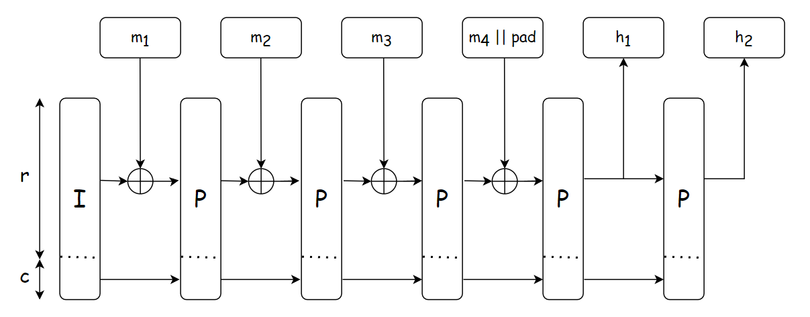

What is Orochi Network?
Orochi Network is a Verifiable Data Infrastructure designed to ensure data integrity and privacy through advanced cryptographic techniques. Orochi Network provides a secure infrastructure for processing and proving data without compromising confidentiality. This combination of cutting-edge cryptographic primitives allows users to trust the system’s outputs while keeping sensitive information protected, making it a powerful solution for applications requiring both transparency and privacy.
Introduction
Orochi Network is an innovative Verifiable Data Infrastructure that redefines how data is handled in the digital age. Built on the principles of security and trustless, it utilizes advanced cryptographic tools like Zero-Knowledge Proofs (ZKP), Fully Homomorphic Encryption (FHE), and Trusted Execution Environments (TEE) to guarantee data integrity and privacy. Whether for businesses, developers, or individuals, Orochi Network offers a robust platform where data can be processed and verified securely, ensuring transparency without sacrificing confidentiality. It’s a forward-thinking solution for a world increasingly reliant on trustworthy and private data systems.
At the core of Orochi Network lies its Verifiable Data Pipeline and ZK-Data-Rollups, two pivotal components that elevate data integrity to new heights. The Verifiable Data Pipeline ensures that every step of data processing is transparent and tamper-proof, while ZK-Data-Rollups harness Zero-Knowledge Proofs to compress and validate data efficiently without revealing sensitive details. Together, these innovations provide a robust foundation for secure, scalable, and privacy-preserving data management, making Orochi Network a trailblazer in delivering trust and reliability in the digital ecosystem.
%%{init: {'theme':'neutral'}}%%
flowchart TD
A[Orochi Network] --> B[Real World Data]
C[zkVM] --> A
D[zkML/AI] --> A
E[zkApp/dApp] --> A
F[Fintech/DeFi] --> A
G[Blockchain] --> A
H[IoT/DePIN] --> A
J[ID/KYC] --> A
Figure 1: Orochi Network turn data to verifiable data, and operating as the backbone of the new internet
Challenges
Data Integrity
In a truly decentralized Web3 ecosystem, data integrity would be ensured through a distributed network of aggregators. Each node could independently prove the correctness of data using cryptographic protocols.
However, many Web3 solutions today still rely on oracles, which are fundamentally flawed and unable to guarantee data authenticity. Consequently, smart contracts are often unable to confirm the legitimacy of third-party provided data. This vulnerability leads to potential losses and fraudulent activities.
Data Availability
Smart contracts run in an isolated environment, such as the EVM or WASM runtime on the blockchain. While this isolation allow smart contract to be executed seamlessly regardless the differences of the architecture, it also limits their ability to directly interact with external data sources, like those in the real world.
Additionally, as the number of users and transactions on a blockchain network grows, storing and accessing all data on-chain becomes increasingly impractical and costly.
Interoperability
Interoperability is a critical aspect of any decentralized Web3 ecosystem. However, many existing solutions struggle with interoperability due to the lack of standardization and compatibility between different architectures.
Existing DA Layer solution is just a combination of blockchain and commitment schemes and it is failed to prove the DA state to on-chain contracts in a single succinct proof.
Scalability
Nowadays DA Layers are leveraging existing technical stack that mean they are also inherits issues of existing blockchains, namely finality and scalability. They can not deallocate resource that store on their system and unable to reach instant finality with BFT consensus.
Our Solutions
Orochi Network: Verifiable Data Infrastructure
Orochi Network positions as the first Verifiable Data Infrastructure, emphasizing the use of ZKPs for secure and verifiable data processing. This focus on ZKPs caters to applications, platforms requiring high levels of privacy, security and decentralized. Here's a breakdown of our key features and potential of our ZKP centric approach:
- Native ZK-data-rollups: Unlike other DA Layers, Orochi Network natively supports ZKPs and perform the rollups on the data. This allows for efficient on-chain verification of data with one single succinct proof, this approach potentially improving scalability and privacy for decentralized applications.
- Verifiable Data Pipeline: Orochi Network goes beyond just data availability. We offers cryptographic proofs at every step of data processing – from sampling to storage and retrieval. Our solution is only reply on cryptography protocols that helps to take down third party trust and helping to transform Real World Data to Provable Data which can be read and verified by smart contracts.
- Utilizes Merkle Directed Acyclic Graph (Merkle DAG): Orochi Network leverages Merkle DAG technology, potentially offering advantages over traditional blockchain structures in terms of scalability and performance.
- Succinct Hybrid aBFT Consensus: This consensus mechanism allows for asynchronous finalization of states, potentially improving efficiency compared to synchronous approaches used by some competitors.
- Proof-System Agnostic: Orochi Network can work with various ZKP systems like Plonky3, Halo2, Nova, and Pickles, offering developers flexibility in choosing the most suitable proof system for their needs.
- Blockchain Agnostic: Orochi Network is designed to be blockchain-agnostic by leveraging ZKPs to improve interoperability between different blockchains, potentially enabling integration with diverse blockchain platforms.
Token Utilities
The native token of Orochi Network, referred to as $ON, serves as the cornerstone of its Verifiable Data Infrastructure, enabling a secure and efficient ecosystem. The token fulfills several critical functions, outlined below:
1.Incentivizing Validators
Validators ensure the network’s security and integrity by staking $ON to participate in the consensus process. They are rewarded with $ON based on their contributions, fostering a reliable and decentralized system.
2.Distributed Storage
Users can utilize $ON to lease space on Orochi’s distributed storage network, supporting secure and verifiable data management. Fees compensate providers who maintain this infrastructure.
3.Rewarding ZK Sequencers
Zero-Knowledge (ZK) sequencers, responsible for processing transactions and ensuring privacy, receive $ON as compensation for their computational efforts, enhancing network scalability.
4.Transaction Fees
$ON is used to cover fees for transactions and network interactions, ensuring operational sustainability while providing access to Orochi’s advanced features.
Through these utilities, $ON drives participation and sustains the Orochi Network, aligning the interests of validators, storage providers, sequencers, and users within a robust economic framework.
The Future of Web3
Our Verifiable Data Infrastructure is a promising step towards a more secure, scalable, and user-friendly Web3. By leveraging the power of Zero-Knowledge Proofs, our Verifiable Data Infrastructure offers solutions to some of the most pressing challenges facing the decentralized future of the internet. As Verifiable Data Infrastructure continues to evolve, it has the potential to be a game-changer for Web3, ushering in a new era of innovation and user adoption.
In essence, our suite of products, anchored by the innovative Verifiable Data Infrastructure, lays the groundwork for a future web built on secure, scalable, and user-friendly decentralized applications. By addressing the limitations of current dApps, Orochi Network has the potential to unlock the true potential of Web3, paving the way for a more decentralized and empowering online experience for everyone. The promise of Orochi Network has been recognized by leading organizations within the blockchain space. Orochi Network is a grantee of the Ethereum Foundation, Web3 Foundation, Mina Protocol, and Aleo. This recognition underscores the potential of our technology to shape the future of Web3.
built with ‚ù§Ô∏è and ü¶Ä
Verifiable Data Pipeline
Our Verifiable Data Pipeline introduces a groundbreaking concept poised to supplant traditional Oracle systems, delivering unparalleled security and reliability. Unlike conventional approaches, it employs proof composition to ensure that every stage of data handling—sampling, processing, lookup, and transformation—is cryptographically verified. This innovative mechanism guarantees that data remains trustworthy and intact throughout its journey, offering a robust alternative to legacy solutions. By redefining how data integrity is maintained, our Verifiable Data Pipeline sets a new standard for secure and dependable data management within the Orochi Network.
%%{init: {'theme':'neutral'}}%%
flowchart TD
A[Real World Data] -->|Raw Data| B[Verifiable Sampling]
B --> |Sampled Data| C[Verifiable Processing]
C --> |Stuctured Data| D[Immutable Storage]
D --> |Retrieve Data| E[Lookup Prover]
E --> |Verify Data| F[ZK Applications]
F --> |Update| G[Transforming Prover]
G --> |Proof of Transformation|D
Figure 1: Verifibable Data Pipeline
Verifiable Data Pipeline delivers significant value by proving every step of data processing, ensuring verifiable data through the use of Zero-Knowledge Proofs (ZKP) and recursive proofs. This approach guarantees data integrity and authenticity while safeguarding privacy and enabling scalability, meeting the demands of a data-centric landscape.
ZK-data-rollups
ZK-data-dollups, a key component of Orochi Network, build on the proven ZK-Rollups, widely used to enhance scalability in Layer 2 solutions across Web3. By adapting this approach, ZK-Data-Rollups deliver both security and cost-efficient verification, compressing data's proofs into succinct, cryptographically verified proofs without compromising privacy. This design mirrors the efficiency and trust that ZK-Rollups bring to blockchain transactions, making ZK-data-rollups an ideal solution for secure, low-cost data handling in the Web3 ecosystem, further solidifying Orochi Network’s commitment to innovation and reliability.
 Figure 1: ZK-data-rollups circuit
Figure 1: ZK-data-rollups circuit
Within ZK-Data-Rollups, each step of data transformation is proven with a Zero-Knowledge Proof (ZKP), ensuring that every stage is secure and verifiable without revealing the data itself. Unlike a single cooperative proof, each ZKP is carried forward and included in the next step of the process, creating a chained sequence of proofs. This step-by-step integration enhances security and maintains rigorous integrity throughout the data transformation pipeline, delivering a highly secure and efficient solution tailored for Web3 applications.
Figure 2: Proof composistion
Use Cases
- Artificial Intelligence and Machine Learning
- Internet of Things
- Real-World Asset Tokenization
- Supply Chain and Provenance Tracking
- Cross-Chain Interoperability
- Gaming and Metaverse
Verifiable Data Pipeline and ZK-Data-Rollups provide a robust foundation for proving data authenticity and processing it securely across various applications. Below are possible use cases of Orochi Network:
Artificial Intelligence and Machine Learning
Orochi Network transforms Artificial Intelligence (AI) and Machine Learning (ML) by ensuring the integrity and trustworthiness of training datasets and model outputs. Zero-Knowledge Proofs (ZKP) cryptographically prove that data used for training—such as medical records or financial histories—remains untampered and accurate, while Fully Homomorphic Encryption (FHE) enables privacy-preserving computations across collaborative parties. This allows organizations to validate model integrity and predictions without exposing sensitive inputs, fostering trust in critical applications like autonomous systems or diagnostics. By embedding verifiable proofs, Orochi enhances accountability and reliability in AI/ML, paving the way for secure, transparent innovation.
Internet of Things
Orochi Network guarantees that data from IoT devices—such as smart meters, sensors, or industrial equipment—is processed and transmitted tamper-proof. It's also enable efficient validation and compression of massive IoT datasets, making real-time applications like energy trading, traffic management, or smart city operations both scalable and trustworthy.
Real-World Asset Tokenization
Orochi Network ensures that critical asset data—such as ownership titles, valuations, or transaction histories—is cryptographically verified from source to consumption, preventing fraud and ensuring transparency without compromising sensitive details. ZK-Data-Rollups further enhance scalability by compressing large datasets into succinct proofs, enabling efficient on-chain processing. This makes tokenized assets reliable and accessible across decentralized ecosystems, facilitating seamless trading, fractional ownership, and cross-border transactions while bridging traditional finance with Web3 innovation.
Supply Chain and Provenance Tracking
Orochi Network ensures transparency and trust by verifying the journey of goods from origin to end consumer. We prove the authenticity of critical data—such as sourcing details, manufacturing records, and shipping logs—without revealing proprietary information, preventing counterfeiting and fraud. This system efficiently validates large datasets, enabling scalable tracking of products like luxury goods, pharmaceuticals, or raw materials across decentralized networks. By providing tamper-proof provenance, Orochi Network enhances consumer confidence, supports regulatory compliance, and empowers businesses to demonstrate sustainability or ethical practices with verifiable evidence.
Cross-Chain Interoperability
Verifiable Data enhances trust and efficiency by enabling seamless data exchange between disparate blockchain networks, such as Ethereum and BNB Chain. By providing a standardized, provable format, it eliminates the need for resource-intensive validation processes on each chain, reduces the risk of data inconsistencies, and ensures that smart contracts across blockchains can rely on accurate, untampered inputs—ultimately fostering a more connected and scalable Web3 landscape.
Gaming and Metaverse
In the realm of Gaming and the Metaverse, Orochi Network enhances trust and scalability for decentralized experiences. Through Orand’s verifiable randomness, it ensures fairness in blockchain-based games by delivering unbiased outcomes for loot drops, matchmaking, and prize distributions, fostering player confidence. We're also able to prove ownership and transaction histories of in-game assets or NFTs, safeguarding players from fraud while preserving privacy. Additionally, by efficiently processing massive virtual world datasets—such as user interactions and events—through compressed, verifiable proofs, it maintains data integrity across decentralized platforms, enabling a seamless and trustworthy Metaverse ecosystem.
Architecture
Component View
We provides robust support for a wide range of commitment schemes and proof systems, making it a standout in secure data infrastructure. It leverages schemes like Merkle trees and polynomial commitments to ensure efficient and verifiable data handling. Additionally, Orochi Network integrates advanced Zero-Knowledge Proof (ZKP) systems such as Halo2, Pickles, ZK-STARK, and Plonky3, offering features like succinctness, scalability, and even post-quantum security. This versatility enhances privacy, interoperability, and efficiency, positioning Orochi Network as a powerful solution for blockchain ecosystems and decentralized applications requiring cutting-edge cryptographic tools.
 Figure 1: Orochi Network Architecture
Figure 1: Orochi Network Architecture
Verifiable Data Pipeline
Orochi Network goes beyond just data availability. Its verifiable data pipeline offers cryptographic proofs at every step of data processing – from sampling to storage and retrieval. This level of verifiability enhances trust and transparency within blockchain applications.
- Verifiable Sampling proves a data sample’s authenticity from an endpoint (e.g., blockchain, API or database). A prover generates a succinct proof to confirm the sample’s integrity (TLS certificate verification) and adherence to a sampling algorithm.
- Verifiable Processing is a subsequent step after Verifiable Sampling, it proves that raw data has been accurately transformed into structured data per a defined algorithm.
- Lookup Prove proves the correctness of a lookup operation over a BTree while linking it to a proof of membership in a commitment scheme, such as a Merkle tree. It ensures that a specific key-value pair retrieved from the BTree exists within the committed dataset, generating a succinct proof that verifies both the lookup’s accuracy and the data’s inclusion.
- Transformation Prover proves the correctness of data updates and schema transformations. It ensures that data record is accurately modified—such as through insertions, deletions, or format changes—and aligns with a predefined schema, producing a ZKP tied to a commitment scheme like a Merkle root.
Distributred Storage
Here’s a concise introduction to the three components of Distributed Storage:
- Merkle DAG (Directed Acyclic Graph) A hierarchical structure of hashed nodes that enables content-addressable storage, linking data via cryptographic hashes to ensure integrity and efficient retrieval across distributed systems, with each node verifying its subtree.
- Commitment Schemes Cryptographic tools, like Merkle trees or polynomial commitments, that bind data to a single value (e.g., a root hash), allowing provers to confirm authenticity or membership without exposing the full dataset, ensuring trust in a compact form.
- ZK-Data-Rollups A scalability solution using Zero-Knowledge Proofs (ZKP) to compress off-chain data updates into succinct on-chain proofs, verifying storage operations efficiently while preserving privacy and enabling high-throughput decentralized storage.
Succinct aBFT Consensus
Unlike other consensus mechanisms, Orochi Network’s Succinct aBFT Consensus achieves fast finality by employing an aBFT approach, tolerating faults while rapidly confirming transactions, and uses ZKP to cryptographically prove the integrity of the entire blockchain state in a compact, verifiable form.
- Gossip DAG (Directed Acyclic Graph) A structure that records transactions and messages propagated across nodes in a gossip-based protocol, organizing them into a tamper-evident graph where each node’s hash links to prior events, enabling efficient tracking and validation of network activity.
- Orochi Consensus An asynchronous Byzantine Fault Tolerant (aBFT) mechanism tailored for Orochi Network, ensuring agreement among distributed nodes even under adversarial conditions, achieving consensus without relying on synchronous timing assumptions for resilience and speed.
- Proof Composition A process that aggregate multiple Zero-Knowledge Proofs (ZKPs) into a single, succinct proof, verifying the correctness of the entire consensus process and blockchain state efficiently, reducing computational overhead for validators and users.
ZK-Centric Approach
Orochi Network positions as the first Verifiable Data Infrastructure, emphasizing the use of ZKPs for efficient and verifiable data processing. This focus on ZKPs caters to applications requiring high levels of privacy and trust.
- Proof-System Agnostic Orochi Network can work with various ZKP systems like Halo2, ZK-STARK, and Pickles, offering developers flexibility in choosing the most suitable proof system for their needs.
- Blockchain Agnostic Orochi Network is designed to be blockchain-agnostic, potentially enabling integration with diverse blockchain platforms.
- Succinct Hybrid aBFT Consensus This consensus mechanism allows for asynchronous finalization of states, potentially improving efficiency compared to synchronous approaches used by some competitors.
Products
Orochi ❤️ Open Source
All projects are open-sourced and public.
- Our scientific paper that proposes Conditional Folding Scheme: RAMenPaSTA: Parallelizable Scalable Transparent Arguments of Knowledge for RAM Programs
- Our construction in Distributed ECVRF - Orand - A fast, publicly verifiable, scalable decentralized random number generator for blockchain-based applications
- Our zkDatabase - zkDatabase - Self-proving Database
- Our zkVM framework PoC - zkMemory - An universal memory prover in Zero-Knowledge Proof
- Our proposal to improve security of Smart Contracts - ERC-6366: Permission Token
- Our proposal to improve permission and role handling - ERC-6617: Bit Based Permission
zkDatabase: Self-proving Database
zkDatabase inherits the technology from Verifiable Data Infrastructure and zkMemory, this branch of product intents to fill the gap between enterprise and ZK technology. It opens new possibilities for FinTech, Insurance, Gaming, etc. For the first time, off-chain data can be verified independently by any party. Let's check the use cases of zkDatabase:
FinTech
zkDatabase can be utilized to enhance the security and privacy of financial transactions by proving data integrity and preventing money laundering. This can be achieved through the use of Zero-Knowledge Proofs (ZKPs) where transactions are recorded with proof of their legitimacy without revealing sensitive user data. For instance, zkDatabase can manage customer transaction records, ensuring that each transaction's compliance with Anti-Money Laundering (AML) regulations is verifiable without exposing personal or financial details of the users. This setup allows financial institutions to demonstrate to regulators that they are adhering to AML standards while simultaneously preserving customer privacy, thus maintaining trust and confidentiality in financial dealings
IoT
Weak IoT devices often lack the processing power to implement robust security measures, but with zkDatabase, data can be stored in a centralized hub/server while proofs of data integrity are committed on-chain. This means sensitive information like sensor readings or device status can be verified for authenticity and integrity without exposing the actual data, thereby protecting these devices from unauthorized access or tampering while ensuring that privacy is maintained, even on low-power or resource-constrained IoT devices.
Healthcare
Zero-Knowledge Proofs can revolutionize data privacy by allowing medical records to be stored and managed in a way that ensures patient confidentiality. Using Zero-Knowledge Proofs, zkDatabase can enable healthcare providers to verify the legitimacy and integrity of medical data without exposing sensitive patient information. For instance, a patient's medical history or test results can be proven to be up-to-date and accurate for treatment or research purposes, but only the necessary details are shared, not the entire medical record. This enhances patient privacy, reduces the risk of data breaches, and ensures compliance with privacy regulations like HIPAA, all while facilitating secure data sharing among healthcare professionals.
AI/ML
zkDatabase will concentrate on delivering proofs of data integrity to complement the outcomes of Zero-Knowledge Machine Learning (zkML), thereby making the entire process verifiable. This synergy ensures that the data input into ML models remains confidential and unaltered, while the results can be proven accurate through Zero-Knowledge Proofs, enhancing trust and transparency in AI applications.
Insurance
zkDatabase uses Zero-Knowledge Proofs to prove the claim/judgement are based on accurate data without revealing personal details, enhancing trust and streamlining claims processing.
Web3 gaming
Players can prove their in-game achievements or asset ownership without revealing their strategy or personal data. Additionally, zkDatabase allows game logic to be verified by smart contracts, ensuring that game rules, outcomes, and fairness are transparently and securely checked on-chain. This setup reduces the chances of cheating, provides trust in game mechanics, and supports a seamless, privacy-respecting environment where players can engage in play-to-earn models with confidence in the system's integrity.
Identity
Users can prove aspects of their identity like age, nationality, or financial status to service providers without disclosing unnecessary personal details.
This document provides an in-depth exploration of the zkDatabase, covering its various components, functionalities, and the underlying mechanisms that drive its operations. Our aim is to offer a comprehensive understanding of how zkDatabase functions and operates within the Mina Blockchain ecosystem.
Specification
-
Accumulation: Delving into the accumulation process, this section explains how the Mina Blockchain efficiently processes numerous transactions simultaneously, ensuring quick and secure transaction verification.
-
B-Tree: This part demystifies the role of B-Trees in organizing extensive data on the Mina Blockchain. Learn about their contribution to effective data management and utilization, and how they maintain order and efficiency.
-
Composability: Explore the concept of composability within the Mina Blockchain, where different elements interlink seamlessly like parts of a well-coordinated mechanism, ensuring smooth operations.
-
Serialization: In the context of SnakyJS, serialization involves converting specific data types to BSON (Binary JSON) and vice versa. This process is crucial for efficient data storage and transmission within the SnakyJS framework.
-
Data Collection: Focus on the process of extracting and processing information from blockchain networks. It involves retrieving transaction details and interactions for analysis, auditing, and ensuring transparency.
-
Distributed Storage Engine: Shift your focus to the distributed storage engine, understanding the use of IPFS for secure and efficient data storage, ensuring data integrity and accessibility.
-
Merkle Tree: Finally, dive into the functionalities of Merkle Trees in maintaining the accuracy and integrity of transactions and data, ensuring they remain tamper-proof within the blockchain network.
Accumluation
The problem statement
Suppose we have a zkApp that updates its state with each user interaction. The updated state relies on both the previous state and the inputs from the interaction – a scenario likely common to many zkApps. The straightforward approach is to update the on-chain state during every interaction. However, to derive the new state, we must refer to the existing state. To validate that we're genuinely referencing the on-chain state, a precondition is set on the present state. Here's the catch: if multiple users unknowingly send their transactions within the same block, they'll establish the same precondition based on the current state, and concurrently attempt to update it. As a result, every transaction following the initial one becomes obsolete due to a stale precondition and gets declined.
Accumulation and Concurrency in Mina
Accumulation scheme
An accumulation scheme is a scheme that allows the prover to combine several proofs into a single proof, which can be verified more efficiently compared to verifying each proof separately. This scheme is critical in scaling blockchain systems and other similar systems, which involve numerous transactions and hence, multiple proofs.
Mina's Proof Systems - offers deep insights into the utilization and implementation of accumulation schemes.
Block production
In the Mina blockchain, transactions are grouped into blocks and added to the blockchain in a sequential manner. The blocks are created by block producers (similar to miners in other blockchain networks), and the block producers are responsible for processing the transactions in the blocks they produce.
Now, when multiple transactions are sent to the same smart contract, and possibly calling the same function within a short time frame, they would be processed one after the other, in the order they are included in the block by the block producer.
Mina Block Production - a comprehensive guide to understanding the nuances of block production within the Mina network.
Handling Concurrent Calls to the Same Function
In the context of simultaneous calls to the same function in a smart contract:
-
Atomicity: Each transaction is processed atomically. It will see a consistent state and produce a consistent state update.
-
Isolation: Transactions are isolated from each other until they are included in the block, at which point the state changes become visible to subsequent transactions.
-
Concurrency Issues: If two transactions are modifying the same piece of data, they will do so in the order determined by their position in the block, which prevents conflicts but can potentially lead to situations like front-running.
Accumulation in o1js
Actions, similar to events, are public data pieces shared with a zkApp transaction. What sets actions apart is their enhanced capability: they enable processing of past actions within a smart contract. This functionality is rooted in a commitment to the historical record of dispatched actions stored in every account, known as the actionState. This ensures verification that the processed actions align with those dispatched to the identical smart contract.
Practical Accumulation: Managing Accumulation in Code
A code-based approach to handle accumulation using thresholds:
@state root = State<Field>();
@state actionsHash = State<Field>();
@state userCount = State<Field>();
reducer = Reducer({ actionType: MerkleUpdate})
@method
deposit(user: PublicKey, amount: Field, witness: Witness) {
this.userCount.set(this.userCount.get() + 1);
this.root.assertEquals(this.root.get());
this.root.assertEquals(witness.computeRoot(amount));
user.send(this.account, amount);
this.reducer.dispatch({ witness: witness, newLeaf: amount })
if (this.userCount.get() >= TRANSACTION_THRESHOLD) {
// if we reach a certain treshold, we process all accumulated data
let root = this.root.get();
let actionsHash = this.actionsHash.get();
let { state: newRoot, actionsHash: newActionsHash } = this.reducer.reduce(
this.reducer.getActions(actionsHash),
MerkleUpdate,
(state: Field, action: MerkleUpdate) => {
return action.witness.computeRoot(action.newLeaf);
}
);
this.root.set(newRoot);
this.actionsHash.set(newActionsHash);
this.userCount.set(0);
}
}
API
reducer = Reducer({actionType: MyAction})
reducer.dispatch(action: Field)
-
Description: Dispatches an Action. Similar to normal Events, Actions can be stored by archive nodes and later reduced within a SmartContract method to change the state of the contract accordingly
-
Parameters:
- action (MyAction): Action to be stored.
reducer.getActions(currentActionState: Field, endActionState:: Field)
-
Description: Fetches the list of previously emitted Actions. Supposed to be used in the circuit.
-
Parameters:
- currentActionState (Field): The hash of already processed actions.
- endActionState (Field): Calculated state of non-processed actions. Can be either
account.actionStateor be calculated withActions.updateSequenceState.
-
Returns: Returns the dispatched actions within the designated range.
reducer.fetchActions(currentActionState: Field, endActionState:: Field)
-
Description: Fetches the list of previously emitted Actions. Supposed to be used out of circuit.
-
Parameters:
- currentActionState (Field): The hash of already processed actions.
- endActionState (Field): Calculated state of non-processed actions. Can be either
account.actionStateor be calculated withActions.updateSequenceState.
-
Returns: Returns the dispatched actions within the designated range.
reducer.reduce(currentActionState: Field, endActionState:: Field)
-
Description: Reduces a list of Actions, similar to
Array.reduce(). -
Parameters:
- actions (Action[][]): A list of sequences of pending actions. The maximum number of columns in a row is capped at 5. (P.S. A row is populated when multiple dispatch calls are made within a single @method.)
- stateType (Provable
) : Specifies the type of the state - initial: An object comprising:
- state (State): The current state.
- actionState (Field): A pointer to actions in the historical record.
- maxTransactionsWithActions (optional, number): Defines the upper limit on the number of actions to process simultaneously. The default value is 32. This constraint exists because o1js cannot handle dynamic lists of variable sizes. The max value is limited by the circuit size.
- skipActionStatePrecondition (optional, boolean): Skip the precondition assertion on the account. Each account has
account.actionStatewhich is the hash of all dispatched items. So, after reducing we check if all processed is equal to the all reduced once.
-
Returns:
- state (State): Represents the updated state of the zk app, e.g., the concluding root.
- actionState (Field): Indicates the position of the state. It is essentially the hash of the actions that have been processed.
Manual calculation of the pointer to the actions history
let actionHashs = AccountUpdate.Actions.hash(pendingActions);
let newState = AccountUpdate.Actions.updateSequenceState(currentActionState, actionHashs);
Commutative
Actions are processed without a set order. To avoid race conditions in the zkApp, actions should be interchangeable against any state. For any two actions, a1 and a2, with a state s, the result of s * a1 * a2 should be the same as s * a2 * a1.
Action Location
All actions are stored in archive nodes.
Resources
- https://github.com/o1-labs/o1js/issues/265
- https://github.com/o1-labs/snarkyjs/issues/659
- https://docs.minaprotocol.com/zkapps/o1js/actions-and-reducer
B-tree
A B-tree is a type of self-balancing search tree that maintains sorted data in a manner that allows for efficient insertion, deletion, and search operations. It is commonly used in database and file systems where large amounts of data need to be stored and retrieved efficiently.
Features
The main features of a B-tree are:
- All leaves are at the same level, making the tree perfectly balanced.
- Each node in the B-tree contains a certain number of keys and pointers. The keys act as separation values which divide its subtrees. When we insert a new key into a B-tree, and if the node we want to insert into is already full, we perform a split operation. Similarly, deletion might cause a node to be less than half full, violating the properties of the B-tree. In this case, we perform a merge operation.
- For a B-tree of order m (where m is a positive integer), every node in the tree contains a maximum of m children and a minimum of ⌈m/2⌉ children (except for the root which can have fewer children).
- The keys within a node are ordered.
- The subtree between two keys k1 and k2 consists of all keys that are greater than or equal to k1 and less than k2.
Operations
- Insertion
- Deletion
- Search
- Split and merge
Split and Merge Operations
When we insert a new key into a B-tree, it's possible that the node we want to insert into is already full. In this case, we have to split the node. Here is a high-level overview of how the split operation works:
- The node to be split is full and contains m-1 keys, where m is the order of the B-tree.
- A new node is created, and approximately half of the keys from the original node are moved to this new node.
- A key from the original node is moved up into the node's parent to act as a separator between the original node and the new node. If the original node was the root and has no parent, a new root is created.
- The new node and the original node are now siblings.
The split operation maintains the property that all leaf nodes are at the same level since all splits start at the leaf level and work their way up the tree.
Conversely, deletion from a B-tree might cause a node to be less than half full, violating the properties of the B-tree. In such cases, we perform a merge operation. Here's a simplified view of the merge process:
- Two sibling nodes, each with less than ⌈m/2⌉ keys, are combined into a single node.
- A key from the parent node, which separates these two nodes, is moved down into the merged node.
- If the parent node becomes less than half full as a result, it may also be merged with a sibling and so on.
Time complexity
Each operation runs in logarithmic time - O(log n), making B-trees useful for systems that read and write large blocks of data, such as databases and filesystems.
Indexes
Database indexing is a data structure technique to efficiently retrieve records from the database files based on some attributes on which the indexing has been done. Indexing in databases works similarly to an index in a book.
Indexes are used to quickly locate data without having to search every row in a database table every time a database table is accessed. Indexes can be created using one or more columns of a database table, providing the basis for both rapid random lookups and efficient access of ordered records.
The two main types of database indexes are:
-
Clustered Index: A clustered index determines the physical order of data in a table. Because the physical order of data in a table and the logical (index) order are the same, there can only be one clustered index per table.
-
Non-clustered Index: A non-clustered index doesn’t sort the physical data inside the table. Instead, it creates a separate object within a table that contains the column(s) included in the index. The non-clustered index contains the column(s) values and the address of the record that the column(s) value corresponds to.
Difference between Clustered and Non-Clustered Indexes
In a clustered index, the leaf nodes of the B-tree structure contain the actual data rows. This is why there can only be one clustered index per table because it actually determines the physical order of data in the table.
In a non-clustered index, the leaf nodes contain a pointer or reference to the data rows, not the data itself. The data can be stored anywhere else in the database, and this pointer helps to quickly locate the actual data when needed.
Additional considerations when choosing between a Clustered and Non-Clustered Index include the order of data, frequency of updates, width of the table, and the need for multiple indexes. For instance, if the data in a table is accessed sequentially, a clustered index can be beneficial. If a table requires access via multiple different key columns, non-clustered indexes could be a good solution as you can create multiple non-clustered indexes on a single table.
| S.No | Clustered Indexes | Non-Clustered Indexes | |
|---|---|---|---|
| 1 | Data sorting | Defines the order or sorts the table or arranges the data by alphabetical order just like a dictionary. | Collects the data at one place and records at another place. |
| 2 | Speed | Generally faster for retrieving data in the sorted order or range of values. | Generally slower than the clustered index. |
| 3 | Memory usage | Demands less memory to execute the operation. | Demands more memory to execute the operations. |
| 4 | Storage | Permits you to save data sheets in the leaf nodes of the index. | Does not save data sheets in the leaf nodes of the index. |
| 5 | Number per table | A single table can consist of a sole clustered index. | A table can consist of multiple non-clustered indexes. |
| 6 | Data storage | Has the natural ability to store data on the disk. | Does not have the natural ability to store data on the disk. |
Resources: Difference between Clustered and Non-Clustered Index
Choosing Between Clustered and Non-Clustered Indexes
The choice between a clustered index and a non-clustered index often depends on the specific use case, the nature of the data, and the types of queries the database will be serving
- Order of Data: If the data in a table is accessed sequentially, then a clustered index is typically the better choice because it physically stores the row data in sorted order. This can significantly speed up range queries and ordered access.
- Frequent Updates: If the indexed columns are updated frequently, non-clustered indexes can be a better choice. This is because any change to the data value of a clustered index requires physically rearranging the rows in the database, which can be an expensive operation.
- Wide Tables: In wide tables, where each row has a lot of data, non-clustered indexes can be beneficial. This is because non-clustered indexes only store the indexed columns and a pointer to the rest of the data, reducing the amount of data that needs to be read from disk for each query.
- Multiple Indexes: If a table needs to be accessed by multiple different key columns, non-clustered indexe can be a good solution because you can create multiple non-clustered indexes on a single table. Each non-clustered index will be optimized for access by its specific key column(s).
Clustered Indexes:
- Primary Key: If a column is a unique identifier for rows in a table (like an ID), it should typically have a clustered index. The primary key of a table is a good candidate for a clustered index.
- Range Queries: Clustered indexes are beneficial for range queries that return a large range of ordered data, and queries where you expect to retrieve the data sorted by the indexed columns. The database can read the data off the disk in one continuous disk scan.
- Frequently Accessed Tables: If a table is frequently accessed by other database operations, like a foreign key relationship, a clustered index can help speed these operations.
Resources: (Clustered Index)[https://vladmihalcea.com/clustered-index/]
Non-Clustered Indexes:
- Non-Unique Columns: If a column is not unique or has a high level of duplication, a non-clustered index can be a better choice.
- Specific Columns: If only specific columns are frequently accessed, a non-clustered index can provide quicker lookups since it doesn’t need to go through the entire row.
- Covering Indexes: For queries that can be covered by an index, a non-clustered index that includes all the necessary data can be highly efficient.
- Frequently Updated or Inserted Tables: If a table's data is frequently updated or if new data is often inserted, using non-clustered indexes can be beneficial as they can be less resource-intensive to maintain.
Multiple different keys
If you need to optimize access based on multiple different keys, it is more common to create multiple B-trees (i.e., multiple indexes), each with its own key. This way, you maintain the efficient logarithmic time complexity for searching, inserting, and deleting nodes in each tree.
Storing data raws
A concise overview of data persistence:
- When we insert records into a table with a clustered index (typically created on the primary key), the database management system stores the records directly within the leaf nodes of the B-tree structure for this index. The records are sorted in the B-tree based on the values of the primary key.
- We can create additional non-clustered indexes on the same table. These non-clustered indexes also use a B-tree structure, but they work slightly differently. Instead of storing the full record within the leaf nodes, they store the index key (which could be any column or combination of columns, not necessarily the primary key) and a reference (like a pointer) to the actual record in the clustered index.
- When we perform a lookup using a non-clustered index, the database management system first locates the index key in the B-tree of the non-clustered index, finds the reference to the actual record, then uses that reference to retrieve the record from the B-tree of the clustered index.
Composability
Composability is the ability for different decentralized applications (dApps) or smart contracts to interact with each other in a seamless manner.
zkApp composability refers to the ability to call zkApp methods from other zkApp methods. It uses the callData field on the zkApp party to connect the result of the called zkApp to the circuit/proof of the caller zkApp.
CallData
CallData is an opaque data for communicating between zkApps. `callData`` is a specific data structure generated during the execution of a zkApp method, and it's crucial in establishing a connection between the caller and the callee during a zkApp call
Composition of CallData
The callData is formulated within the callee's circuit, and it is composed of a hash created from a collection of elements:
- Inputs: The arguments that are being used to call a particular method in the smart contract, represented as an array of field elements.
- Outputs: The return values generated by the method, also represented as an array of field elements.
- Method Index: A numerical identifier for the method that is being called within the smart contract.
- Blinding Value: A random value that is known to both the caller and callee circuits at the time of proof generation, used to maintain the privacy of the inputs and outputs.
Working
-
The callee smart contract first computes the callData hash with the aforementioned elements and stores it in its own callData field.
-
When the caller initiates a call to the callee zkApp, it witnesses the callee's party along with the hash of the callee's children and the method's return value.
-
Subsequently, within the caller's circuit, the same hash operation is performed as in the callee circuit, and it's compared against the callData acquired from the callee to ensure that the call was executed with the exact inputs and garnered the specified outputs.
-
This callData acts as a connecting link allowing the caller zkApp to make authenticated calls to another zkApp (callee) while maintaining the privacy and integrity of the transaction.
Method Index
The methods are stored in a fixed order, and that order is also baked into the verification key when compiling. Order depends on the order that the @method decorators are called in, but that's an implementation detail
AccountUpdate
An AccountUpdate in the Mina Protocol signifies a set of alterations and events related to a single account during a transaction.
Each zkApp transaction constructed by o1js is composed of one or more AccountUpdates, arranged in a tree-like structure. The execution of this tree adheres to a pre-order traversal pattern; initiating with the primary account, followed by the subsequent left and right branches respectively.
Each AccountUpdate consists of components. Essentially, it can be seen as having a core and a set of metadata surrounding it.
- Core Component:
- Updates: This is the nucleus of an AccountUpdate, embodying the critical changes brought about by the transaction, including shifts in the zkApp state, alterations in permissions, and adjustments to the verification key linked to the account.
- Metadata Components:
-
PublicKey: The unique identifier for the account being updated, akin to its address.
-
TokenId: Represents the custom token involved, defaulting to the MINA TokenId (1). It works in tandem with the PublicKey to uniquely identify an account on the Mina Protocol.
-
Preconditions: Specifies the essential conditions or assertions that need to be satisfied for the successful application of the AccountUpdate. These are usually framed through a method in the o1js library.
-
BalanceChange: Captures any fluctuations in the account's balance as a consequence of the transaction.
-
Authorization: Dictates the mode of authorizing the zkApp, which could be either a proof (aligned with the verification key on the account) or a signature.
-
MayUseToken: Signifies whether the zkApp possesses the authority to interact or manipulate its associated token.
-
Layout: Allows for making assertions regarding the structural makeup of an AccountUpdate, guaranteeing its compliance and integrity.
Return types
Only types built out of Field are valid return types. This includes snarkyjs primitive types and custom CircuitValues.
Example
The CallerContract class is invoking a method in the CalleeContract class. During this interaction, two separate AccountUpdates are created to record the changes and events that occurred during the transaction - one for the parent (CallerContract) and one for the child (CalleeContract).
class CallerContract extends SmartContract {
@method calledMethod(arg: UInt64): Bool {
let calledContract = new CalleeContract(address);
let result = calledContract.calledMethod(arg);
}
}
class CalleeContract extends SmartContract {
@method calledMethod(arg: UInt64): Bool {
// ...
}
}
-
Once the child AccountUpdate is created, it is then verified in the parent's circuit, with assertions to validate that the right method was called with the correct parameters, and produced the expected outcome.
-
This process also involves verifying that the right zkApp was called by checking the publicKey and tokenId, as indicated in the child AccountUpdate.
-
After both AccountUpdates are verified, they are compiled into a tree-like structure, representing a cohesive record of the transaction.
-
This hierarchical structure is then submitted, effectively finalizing the transaction and documenting a secure, verified record of the entire interaction between the two contracts.
These AccountUpdates work in tandem to create a comprehensive, secure, and verified record of the transaction, safeguarding the integrity of the process and ensuring transparency and accountability.
Composability: Second way
Another approach to achieve composability is by chaining method calls from various smart contracts. This potentially could give use certain flexibility. However, the question is how can we ensure or enhance the security of such an approach?
class OneZkApp extends SmartContract {
@method callOne(): Field {
//
}
}
class SecondZkApp extends SmartContract {
@method callSecond(field: Field) {
//
}
}
Mina.transaction(feePayer, () => {
const result = oneZkApp.callOne();
secondZkApp.callSecond(result);
});
Resources
- https://github.com/o1-labs/snarkyjs/issues/303
Serialization
Serialization is the process of converting an object or data structure into a format that can be easily stored, transmitted, and reconstructed later. It is often used to save the state of a program, send data over a network, or store complex data structures, such as objects, in a human-readable or compact binary format. The opposite process, called deserialization, converts the stored format back into an object or data structure.
Data Type
SnaryJS supported types
- Built-in types
- Field
- Bool
- UInt32
- UInt64
- PublicKey
- PrivateKey
- Signature
- Group
- Scalar
- CircuitString
- Character
- Custom types
- Struct *
- Trees
- MerkleTree
- MerkleMap
Bson supported types
- Double
- String
- Object
- Array
- Binary data
- Undefined
- ObjectId
- Boolean
- Date
- Null
- Regular Expression
- DBPointer
- JavaScript
- Symbol
- 32-bit integer
- Timestamp
- 64-bit integer
- Decimal128
- Min key
- Max key
Serialization/Deserialization
The provided code snippet demonstrates how to convert a zk-snark data type into a BSON-supported format by first converting the value into a Uint8Array and then serializing it using BSON.
const value = UInt64.from(12342);
const bytes: Uint8Array = Encoding.Bijective.Fp.toBytes(value.toFields());
const bson = BSON.serialize({ bytes });
This code snippet demonstrates the process of converting BSON data back into a zk-SNARK data type. This is done by first deserializing the BSON data into a JavaScript object, then converting the Binary data into a Uint8Array, and finally using a built-in decoding method to reconstruct the original value from the byte array.
const deserializedBson = BSON.deserialize(bson);
const convertedResult = new Uint8Array(deserializedBson.bytes.buffer);
const initialField = Encoding.Bijective.Fp.fromBytes(convertedResult);
Serializing Arbitrary Data into Field Elements
When serializing arbitrary data into field elements, it's important to note that field elements can hold a maximum of 254 arbitrary bits (not 255) due to the largest possible field element lying between 2^254 and 2^255.
You can utilize the Encoding.bytesToFields method, which efficiently packs 31 bytes per field element for serialization.
HELP We need to clarify which kind of data type will be supported.
Data Collection
Data collection occures by requesting events from the Mina blockchain, which are fired from SmartContract.
Smart Contract
Define names and types of your events:
events = {
"arbitrary-event-key": Field,
};
In order to send data to the blockchain with use the following method:
this.emitEvent("arbitrary-event-key", data);
Off-chain
The most convenient way to pull events off the blockchain is by making graphql request:
Request
query getEvents($zkAppAddress: String!) {
zkapps(
query: {
zkappCommand: { accountUpdates: { body: { publicKey: $zkAppAddress } } }
canonical: true
failureReason_exists: false
}
sortBy: BLOCKHEIGHT_DESC
limit: 1000
) {
hash
dateTime
blockHeight
zkappCommand {
accountUpdates {
body {
events
publicKey
}
}
}
}
}
The response depends on the state of the smart contract, but it will be something like this:
Response
{
"data": {
"zkapps": [
{
"blockHeight": 17459,
"dateTime": "2023-02-21T13:15:01Z",
"hash": "CkpZ3ZXdPT9RqQZnmFNodB3HFPvVwz5VsTSkAcBANQjDZwp8iLtaU",
"zkappCommand": {
"accountUpdates": [
{
"body": {
"events": ["1,0"],
"publicKey": "B62qkzUATuPpDcqJ7W8pq381ihswvJ2HdFbE64GK2jP1xkqYUnmeuVA"
}
}
]
}
},
{
"blockHeight": 17458,
"dateTime": "2023-02-21T13:09:01Z",
"hash": "CkpaEP2EUvCdm7hT3cKe5S7CCusKWL2JgnJMg1KXqqmK5J8fVNYtp",
"zkappCommand": {
"accountUpdates": [
{
"body": {
"events": [],
"publicKey": "B62qkzUATuPpDcqJ7W8pq381ihswvJ2HdFbE64GK2jP1xkqYUnmeuVA"
}
}
]
}
},
{
"blockHeight": 17455,
"dateTime": "2023-02-21T12:48:01Z",
"hash": "CkpZePsTYryXnRNsBZyk12GMsdT8ZtDuzW5rdaBFKfJJ73mpJbeaT",
"zkappCommand": {
"accountUpdates": [
{
"body": {
"events": ["13,12"],
"publicKey": "B62qkzUATuPpDcqJ7W8pq381ihswvJ2HdFbE64GK2jP1xkqYUnmeuVA"
}
}
]
}
}
]
}
}
Events
It is possible to send up to 16 fields in events in a single transaction, and each field can be up to 255 bits.
Distributed Storage Engine
This chapter provides a comprehensive insight into the IPFS (InterPlanetary File System) and its components, explaining how data is replicated and retrieved in the network using unique identifiers like PeerID and CID. It dives deep into concepts like IPNS, which provides a permanent pointer to mutable data, and Merkle DAG, a data structure essential for data storage and retrieval in IPFS. IPFS.
Next we describe the functionality and implementation of a Storage Engine, particularly focusing on the IPFS Storage Engine. Storage Engine.
IPFS
IPFS is a distributed protocol that allow you to replicate data among network, you can put a data to IPFS and get those data back as long as it wasn't run out of liveness. Data will be stored as blocks and each block will be identified by its digest.
PeerID
PeerID is a unique identifier of a node in the network. It's a hash of public key of the node. Lip2p2 keypair is handle by its keychain. You can get the PeerID by:
const libp2p = await createLibp2p({});
libp2p.peerId.toString();
CID
CID is a unique fingerprint of data you can access the data as long as you know the exactly CID. The CID was calculated by hash function but it isn't data's digest. Instead the CID was calculated by digests of blocks of data.
Combining that digest with codec information about the block using multiformats:
- Multihash for information on the algorithm used to hash the data.
- Multicodec for information on how to interpret the hashed data after it has been fetched.
- Multibase for information on how the hashed data is encoded. Multibase is only used in the string representation of the CID.
In our implementation we use CID v1 and use SHA256 + base58. I supposed that poseidon could be better in the long term so we need to make a poseidon proposal to multihash.
IPNS
As we know from above, each DAG node is immutable. In the reality, we want to keep the pointer to the data immutable. IPNS will solve this by provide a permanently pointer (in fact it's a hash of public key).
Merkle DAG
A Merkle DAG is a DAG where each node has an identifier, and this is the result of hashing the node's contents — any opaque payload carried by the node and the list of identifiers of its children — using a cryptographic hash function like SHA256. This brings some important considerations.
Our data will be stored in sub-merkle DAG. Every time we alter a leaf, it's also change the sub-merkle DAG node and it's required to recompute the CID, this will impact our implementation since we need a metadata file to keep track on CIDs and its children.
We can perform a lookup on a merkle DAG by using the CID of the root node. We can also perform a lookup on a sub-merkle DAG by using the CID of the root node of the sub-merkle DAG. DAG traversal is a recursive process that starts at the root node and ends when the desired node is found. This process is cheap and fast, since it only requires the node identifier.
Javascript IPFS
js-ipfs paves the way for the Browser implementation of the IPFS protocol. Written entirely in JavaScript, it runs in a Browser, a Service Worker, a Web Extension and Node.js, opening the door to a world of possibilities.
We switch to Helia due to the js-ipfs is discontinued.
libp2p
LibP2p provide building blocks to build p2p application, it handled all p2p network related along side with its modules. It's flexible to use and develop with libp2p. To config and work with libp2p you need to define:
- Transport:
- TCP: TCP transport module help you to manage connection between nodes natively. TCP handles connect at transport layer (layer 4) that's why it's more efficient to maintain connection. But it's only work for
Node.jsrun-time. - WebSockets: WebSocket in contrast to TCP, it's work on application layer (layer 7) that's why it's less efficient to maintain connection. But it's work for both
Node.jsandBrowser.
- TCP: TCP transport module help you to manage connection between nodes natively. TCP handles connect at transport layer (layer 4) that's why it's more efficient to maintain connection. But it's only work for
- Encryption: noise, we don't have any option since TLS didn't have any implement for JS.
- Multiplexer:
- mplex
mplexis a simple stream multiplexer that was designed in the early days of libp2p. It is a simple protocol that does not provide many features offered by other stream multiplexers. Notably,mplexdoes not provide flow control, a feature which is now considered critical for a stream multiplexer.mplexruns over a reliable, ordered pipe between two peers, such as a TCP connection. Peers can open, write to, close, and reset a stream. mplex uses a message-based framing layer like yamux, enabling it to multiplex different data streams, including stream-oriented data and other types of messages. - yamux. Yamux (Yet another Multiplexer) is a powerful stream multiplexer used in libp2p. It was initially developed by Hashicorp for Go, and is now implemented in Rust, JavaScript and other languages. enables multiple parallel streams on a single TCP connection. The design was inspired by SPDY (which later became the basis for HTTP/2), however it is not compatible with it. One of the key features of Yamux is its support for flow control through backpressure. This mechanism helps to prevent data from being sent faster than it can be processed. It allows the receiver to specify an offset to which the sender can send data, which increases as the receiver processes the data. This helps prevent the sender from overwhelming the receiver, especially when the receiver has limited resources or needs to process complex data. Note: Yamux should be used over mplex in libp2p, as mplex doesn’t provide a mechanism to apply backpressure on the stream level.
- mplex
- Node discovery: KAD DHT The Kademlia Distributed Hash Table (DHT), or Kad-DHT, is a distributed hash table that is designed for P2P networks. Kad-DHT in libp2p is a subsystem based on the Kademlia whitepaper. Kad-DHT offers a way to find nodes and data on the network by using a routing table that organizes peers based on how similar their keys are.
Note: KAD DHT boostrap didn't work as expected that's why you would see I connect the bootstrap nodes directly in the construction.
const nodeP2p = await createLibp2p(config);
// Manual patch for node bootstrap
const addresses = [
"/dnsaddr/bootstrap.libp2p.io/p2p/QmNnooDu7bfjPFoTZYxMNLWUQJyrVwtbZg5gBMjTezGAJN",
"/dnsaddr/bootstrap.libp2p.io/p2p/QmQCU2EcMqAqQPR2i9bChDtGNJchTbq5TbXJJ16u19uLTa",
"/dnsaddr/bootstrap.libp2p.io/p2p/QmbLHAnMoJPWSCR5Zhtx6BHJX9KiKNN6tpvbUcqanj75Nb",
"/dnsaddr/bootstrap.libp2p.io/p2p/QmcZf59bWwK5XFi76CZX8cbJ4BhTzzA3gU1ZjYZcYW3dwt",
].map((e) => multiaddr(e));
for (let i = 0; i < addresses.length; i += 1) {
await nodeP2p.dial(addresses[i]);
}
await nodeP2p.start();
Helia
Helia is an new project that handle ipfs in modular manner. You can construct a new instance of Helia on top of libp2p.
return createHelia({
blockstore: new FsBlockstore("./local-storage"),
libp2p,
});
By passing libp2p instance to Helia, it's highly configurable.
UnixFS
To handle file I/O, we used UnixFS. It can be constructed in the same way that we did with Helia but it will take a Helia instance instead of libp2p.
const fs = unixfs(heliaNode);
let text = "";
const decoder = new TextDecoder();
let testCID = CID.parse("QmdASJKc1koDd9YczZwAbYWzUKbJU73g6YcxCnDzgxWtp3");
if (testCID) {
console.log("Read:", testCID);
for await (const chunk of fs.cat(testCID)) {
text += decoder.decode(chunk, {
stream: true,
});
}
console.log(text);
}
After do research in libp2p and ipfs we introduce StorageEngineIPFS that handle ipfs I/O. The detail is given in specs. In our implementation, we used datastore-fs and blockstore-fs to persist changes.
Storage Engine
Storage Engine help us to handle file storage and local catching process, storage engine is also help to index files for further accession.
IPFS Storage Engine
IPFS Storage Engine is a distributed storage engine based on IPFS. The StorageEngineIPFS ins an implementation of IFileSystem and IFileIndex that handle all I/O operations and indexing.
/**
* An interface of file engine, depend on the environment
* file engine could be different
*/
export interface IFileSystem<S, T, R> {
writeBytes(_data: R): Promise<T>;
write(_filename: S, _data: R): Promise<T>;
read(_filename: S): Promise<R>;
remove(_filename: S): Promise<boolean>;
}
/**
* Method that performing index and lookup file
*/
export interface IFileIndex<S, T, R> {
publish(_contentID: T): Promise<R>;
republish(): void;
resolve(_peerID?: S): Promise<T>;
}
/**
* IPFS file system
*/
export type TIPFSFileSystem = IFileSystem<string, CID, Uint8Array>;
/**
* IPFS file index
*/
export type TIPFSFileIndex = IFileIndex<PeerId, CID, IPNSEntry>;
The relationship between StorageEngineIPFS and other classes/interfaces is shown below:
classDiagram LibP2pNode -- StorageEngineIPFS Helia-- StorageEngineIPFS UnixFS -- StorageEngineIPFS IPNS -- StorageEngineIPFS IFileSystem <|-- StorageEngineIPFS IFileIndex <|-- StorageEngineIPFS IFileSystem : writeByte(data Uint8Array) CID IFileSystem : write(filename string, data Uint8Array) CID IFileSystem : read(filename string) Uint8Array IFileSystem : remove(filename string) boolean IFileIndex : publish(contentID CID) IPNSEntry IFileIndex : republish() void IFileIndex : resolve(peerID PeerId) CID StorageEngineIPFS : static getInstance(basePath, config)
In our implementation, we used datastore-fs and blockstore-fs to persist changes with local file, for now browser is lack of performance to handle connections and I/O. So the best possible solution is provide a local node that handle all I/O and connection.
Usage of IPFS Storage Engine
The database will be cached at local to make sure that the record are there event it's out live of liveness on IPFS network. To start an instance of StorageEngineIPFS we need to provide a basePath and config (we ignored config in this example):
const storageIPFS = await StorageEngineIPFS.getInstance(
"/Users/chiro/GitHub/zkDatabase/zkdb/data"
);
The basePath is the path to the local cache folder, the folder will be created if it's not exist. The config is the configuration of IPFS node, we will use default config if it's not provided. After we get the instance of StorageEngineIPFS we could use it to perform I/O operations.
// Switch to collection `test`
newInstance.use("test");
// Write a document to current collection
await newInstance.writeBSON({ something: "stupid" });
// Read BSON data from ipfs
console.log(
BSON.deserialize(
await newInstance.read(
"bbkscciq5an6kqbwixefbpnftvo34pi2jem3e3rjppf3hai2gyifa"
)
)
);
The process to update collection metadata and master metadata will be described in the following sections.
File mutability
Since a DAG nodes are immutable but we unable to update the CID every time. So IPNS was used, IPNS create a record that mapped a CID to a PeerID hence the PeerID is unchanged, so as long as we keep the IPNSEntry update other people could get the CID of the zkDatabase.
Metadata
The medata file is holding a mapping of data's poseidon hash to its CID that allowed us to retrieve the data from ipfs. It's also use to reconstruct the merkle tree. Metada is stored on IPFS and we also make a copy at local file system.
IPFS Storage Engine folder structure
The structure of data folder is shown below:
├── helia
├── nodedata
│   ├── info
│   ├── peers
│   └── pkcs8
└── storage
└── default
The helia folder is the folder that hold the Helia node's information, the nodedata folder is the folder that hold the IPFS node's information inclued node identity, peers and addition info. The storage folder is the folder that hold the data of our zkDatabase, all children folder of storage is the name of the collection, in this case we only have one collection called default.
Metadata structure
There is a metadata file at the root of storage folder that contains all the index records for children's metadata, we called it master metadata.
{
"default": "bafkreibbdesmz6d4fp2h24d6gebefzfl2i4fpxseiqe75xmt4fvwblfehu"
}
The default is the name of the collection and the bafkreibbdesmz6d4fp2h24d6gebefzfl2i4fpxseiqe75xmt4fvwblfehu is the CID of the collection's metadata file. We use the IPNS to point current node PeerID to the CID of the master metadata file by which we could retrieve the list of CID of the collection's metadata file.
There are also a metadata file at each collection folder, we called it collection metadata.
{
"bbkscciq5an6kqbwixefbpnftvo34pi2jem3e3rjppf3hai2gyifa": "bafkreifnz52i6ssyjqsbeogetwhgiabsjnztuuy6mshke5uemid33dsqny"
}
You might aware that the key of the collection metadata is the poseidon hash of the database document in base32 encoding, and the value is the CID of the document. The collection metadata is used to retrieve the CID of the document by its poseidon hash. There is also a file in the collection folder with the name bbkscciq5an6kqbwixefbpnftvo34pi2jem3e3rjppf3hai2gyifa.zkdb contains the content of the document which was encoded by BSON.
BSON Document
BSON or Binnary JSON is a data structure that we used to encode and decode document. The document will be categorized into collections.
Merkle Tree
To keep our merkle tree verification succinct, efficient and friendly with SnarkyJS. A poseidon merkle tree will be used to prove the immutability of the data. The Sparse Merkle Tree is utilized as an adaptation of the conventional Merkle Tree.
Sparse Merkle Tree (SMT)
A Sparse Merkle Tree (SMT) is a variant of a standard Merkle tree that is optimized for scenarios where the data set is very large, but only a small portion of it is populated with values. You could refer to the following article to learn more: What’s a Sparse Merkle Tree?.
Advantages of SMT
Sparse Merkle Trees (SMTs) offer several benefits:
- Efficiency: They allow efficient storage of large, sparse datasets with minimal memory overhead.
- Security: Sparse Merkle Trees (SMTs) share the tamper-proof nature of traditional Merkle Trees, ensuring cryptographic data integrity. However, they also share the same vulnerabilities, such as potential false proofs through hash collisions or second preimage attacks. To mitigate these risks, a strong, collision-resistant hash function is crucial. Additionally, cryptographic commitments to the SMT root can enhance security. With proper implementation, SMTs offer efficient and secure data storage for sparse datasets.
- Proof Size: The proof size for SMTs is consistent, regardless of the tree's size, making them optimal for scenarios where frequent proofs are required.
- Flexible Updating: They support efficient updates and insertions even in massive datasets.
Ways to store Merkle Tree on IPFS
Here are different ways you could store a Merkle Tree on IPFS:
-
JSON Serialization: One of the simplest ways to store a Merkle Tree in IPFS is to convert the Merkle Tree to a JSON structure and then save that to IPFS. This is a straightforward method but can be inefficient for large trees, as the entire tree needs to be retrieved even if you're only interested in certain parts of it.
-
IPLD (InterPlanetary Linked Data): IPLD is a data model and set of coding conventions for linking distributed content on IPFS. By using IPLD, you can create links between any piece of data stored within IPFS. While it involves the concept of DAGs, it provides a more flexible and efficient way to store and retrieve Merkle Trees on IPFS.
-
BSON Serialization: BSON, or Binary JSON, extends the popular JSON model to include additional data types such as Date and raw binary data, and allows for a level of efficiency not present in standard JSON. This is because BSON data is a binary representation of JSON-like documents and BSON documents may have elements that are BSON arrays. Storing a Merkle Tree in IPFS using BSON serialization would provide a more space-efficient and potentially faster method for data retrieval compared to JSON, especially for large trees with binary data. Like with JSON, though, the whole tree would need to be retrieved even if you're only interested in certain parts. However, if the Merkle tree's structure can be mapped to a BSON document structure, it might allow for partial tree loading. When using BSON, you need to ensure that the data types you use in your Merkle Tree are compatible with BSON serialization. Some data types may not be supported or may need special handling.
Storing SMT
Roughly speaking, Sparse Merkle Trees consist of two types of nodes: filled nodes representing actual data, and zero nodes denoting areas of the tree that are unoccupied or sparse.
For effective persistence of a Merkle Tree in any storage medium, three key functions must be executed:
- Storing nodes
- Fetching nodes
- Creating a Merkle Tree proof
All standart merkle tree functions can be implemented along with these 'key' functions.
Zero nodes
For each level, zero nodes remain constant and can be generated during the initialization of the Merkle Tree.
protected zeroes: Field[];
constructor(height: number) {
this.zeroes = new Array(height);
this.zeroes[0] = Field(0);
for (let i = 1; i < height; i+=1) {
this.zeroes[i] = Poseidon.hash([this.zeroes[i - 1], this.zeroes[i - 1]]);
}
}
Filled nodes
In order to properly store filled nodes, a more advanced approach is needed. As a rule of thumb, every digest must be accompanied by metadata that outlines its position within the tree. This information will assist in the restoration of the node and its associated proof in the future.
Consider the following as an example of how a node might be depicted in IPLD:
interface IPDLNode {
level: number;
index: string;
hash: Field;
leftChildCID: CID | null;
rightChildCID: CID | null;
}
Merkle Proof
A Merkle Proof forms a vital component of the Merkle Tree.
Consider this general interface:
interface MerkleProof {
sibling: Field;
isLeft: boolean; // isLeft = `index` mod 2 == 0
}
sibling represents the other child of the parent node while isLeft can be determined by taking the modulus of the node's index by 2.
Merkle proofs can be built in two directions:
- from root to leaf
- from leaf to root
When using IPLD, constructing a Merkle proof from root to leaf is a logical approach since the alternative is less efficient due to the need to initially locate the leaf.
Merkle Proof can be used also to add/update leaves.
Time complexity
The time complexity for all operation in a distributed SMT is equal to O(n), where n is the height of the tree.
zkMemory: An Universal Memory Prover in Zero-Knowledge Proof
zkMemory is a powerful building block for creating secure and efficient Zero-Knowledge Virtual Machines (zkVMs). Its modular design allows developers to integrate zkMemory into their zkVM architecture. This component acts as a dedicated memory prover, handling the ZKPs generation for memory operations within the zkVM.
By leveraging zkMemory's modularity, developers can design zkVM with customized instruction sets and architecture, enabling them to tailor the virtual machine to specific needs. This flexibility, coupled with zkMemory's potential efficiency gains in proof generation, paves the way for a new generation of zkVM applications within the Web3 landscape.
Specification
In this chapter we give a brief overview to zkMemory, including its components and functionalities.
zkMemory is a module built by Orochi Network which allows a prover to prove the consistency when reading and writing values in the memory. The problem can be stated as follows:
Consider a memory \(M\). Then for any cell of \(M\), during the course of time, whenever we read from the cell, the read value must be equal to the last time it was written in the same cell.
Proving memory consistency is an important sub-component for handling the correctness RAM program, which can be used to construct zkVMs. Therefore, zkMemory could serve as a powerful library which handle the memory part in zkVMs and helps developers build custom zkVMs tailored to specific needs within the Web3 landscape. We divide this chapter into \(3\) major parts below:
-
In Execution Trace, we describe execution trace, which are used to prove memory consistency from a memory \(M\) and a computation process of \(N\) steps.
-
In Commitment Schemes, we describe several commitment schemes for committing the execution trace that we support.
-
In Memory Consistency Constraints, we show how to prove the consistency of memory given the execution trace and how do we integrate Halo2 for the constraint.
-
In Nova Variants, we show how to prove the consistency of memory with two Nova variants, Nova and SuperNova. This implementation to experiment the capacity of Nova, SuperNova for zkVM.
Execution Trace
We view a memory \(M\) to be an array \(M=(M_1,M_2,\dots,M_m)\). For a computation with \(N\) steps, n each step of a program execution, we could either i) Read a value from \(M_i\) for some \(i \leq m\) or ii) Write a value \(val\) to a cell \(M_i\) for some \(i \leq m\). To capture this reading/writing step, we define an execution trace to be the following tuple
$$(addr,time,op,val)$$
Here, \(addr\) is the address in the cell in the reading/writing process which is in \(\{1,2\dots,m\}\), \(time\) is the time log, \(op \in \{0,1\}\) is the value which determines whether the operation is READ or WRITE, and \(val\) is the value which is written to/read from \(M_{addr}\). We can see that, in the \(i\)-th execution step, the information from the \(i\)-th trace is sufficient to determine the action in reading/writing the value from/to the memory in that step. In the end, after the execution, we obtain we obtain an array of execution traces \((addr_i,time_i,op_i,val_i)_{i=1}^N\). In the next section, we show how to prove memory consistency given the whole execution trace array.
Commitment Schemes
The first step in zkMemory is to commit the memory, then later we prove the correctness of the trace where its commitment serves as the public instance to prevent prover from cheating in the computation process. Later, we employ a ZKP protocol to prove that the execution trace is correct given its commitment. Currently, our zkMemory implementation supports 3 commitment schemes: KZG, Merkle Tree and Verkle Tree. We now give a high overview of these schemes.
KZG Commitment Scheme
KZG is the first commitment scheme we intend to support, which is widely used in various ZKP systems such as Halo2. We have already presented an overview of KZG here, therefore we refer the readers unfamiliar with KZG to the link. Let \(\mathsf{F}\) be a finite field, and let \(\omega\) be a root of \(4\)-th unity. To commit each trace in the trace, we first create a polynomial \(p(x)\) such that:
$$p(1)=addr,~p(\omega)=time,~p(\omega^2)=op,~p(\omega^3)=val$$
After creating the polynomial \(p(x)\), we use the KZG commitment algorithm to commit it which we denote \(\mathsf{com}(p(x))\), and the whole trace \(\mathsf{com}(p_i(x))_{i=1}^n\) is the commitment of the whole execution trace. Later, if needed, we can open any trace in the trace using the techniques in this, which provides constant opening size and verification time.
Merkle Tree Commitment Scheme
Merkle Tree is the second commitment scheme we would support to commit the memory. At a high level, each leaf of a tree is assigned a value, and the value of the parent is equal to the hash of its children. When opening a leaf node, we only need to reveal all the values in the path from the leaf to the root as well as the sibling nodes in the path. The collision resistance property of cryptographic hash functions ensures that the prover cannot produce an invalid opening.
There are two methods for committing memory using Merkle tree. The first method is to commit to the trace, similar like what we did using KZG commitment. However there is a second method, which we commit to the memory cells instead of the trace, where we assign each leaf node to be a memory cell. In each step, we update the commitment from \(C\) to \(C'\) and provide a Verkle proof that \(C\) was indeed updated to \(C'\). This "proof providing" process can be built with a circuit to hide everything except the instances, which are \(C\) and \(C'\). The second method will be used to support memory consistency from IVC-based constructions like the Nova proof system, as currently we are additionally integrating Nova to support memory consistency in our zkMemory module.
Verkle Tree Commitment Scheme
Verkle tree is very similar to Merkle tree, However, there are several benefits of using Verkle tree compared to Merkle tree as follows:
- The number of children of each parent node in Verkle tree is much greater, making the tree have a much lower height when committing the same data.
- In addition, the number of children can be configured to one's desire, making the tree more flexible when using proof systems than Merkle Tree.
Finally, to commit the memory with Verkle tree, we also do the same as Merkle tree, except that we now employ KZG commitment scheme to commit to the children, which enables constant proof size and verification time, which is also another huge benefit compared to Merkle tree according to this.
Memory Consistency Constraints
Handling the Constraints using Sorting Technique
For an array of execution traces \(tr=(addr_i,t_i,op_i,val_i)_{i=1}^n\), one known method to prove the correctness of \(tr\) is to use the sorting technique, which can be found in [FKLO0W21]. At a high level, we create a new array \(tr'\), which is a sorted version of \(tr\). The elements of \(tr'\) are sorted in increasing order by its address, then time log. We prove that the elements of \(tr'\) satisfy some specified constraints, then prove that \(tr\) and \(tr'\) are permutations of each other.
First, let us delve into the details of the constraints in \(tr'\). The constraints are as follows:
$$ \begin{cases} time_i \lt time_{i+1}, \\ (op_{i+1}=1) \lor (addr_i'=addr_{i+1}'), \\ (addr_i' \lt addr_{i+1}' ) \lor ((addr_i'= addr_{i+1}') \land (time_i' \lt time_{i+1}')),\\ (op_{i+1}=1) \lor (val_i'=val_{i+1}') \lor (addr_{i}' \neq addr_{i+1}').\\ \end{cases} $$
Let us explain the above constraints: Recall that in memory consistency, we simply need to prove that, for each memory cell, the value of the current step is equal to the value in the last step it was written. With this idea, we could sort the trace by their address first, then time and check them via the constraint \((addr_i' \lt addr_{i+1}' ) \lor ((addr_i'= addr_{i+1}') \land (time_i' \le time_{i+1}'))\). In this way, we can divide the array into consecutive ''blocks'' where each block contains the traces with the same address. In each block and each trace of it, we consider the time when the value is written (determined by \(val\) and \(op\)). We see that, if the value is written in the current step (\(op=1\)), then there is nothing to consider because we are writing a new value. Otherwise (\(op=0\)) meaning that we are reading from the cell, then the value \(val\) must be equal to the value of the previous trace in the block, and this can be captured by the constraint \( (op_{i+1}=1) \lor (val_i'=val_{i+1}') \lor (addr_{i}' \neq addr_{i+1}').\). Moreover, we need to ensure that the first time we access a memory cell, then the operation must be WRITE, which can be constrained by \( (op_{i+1}=1) \lor (addr_i'=addr_{i+1}')\), meaning that in every first trace in each block, the opcode of the trace must be \(1\). Finally, we need the original array to be sorted in ascending time, which can be captured via the constraint \( time_i \le time_{i+1}\). Thus, these constraints together are sufficient to check the consistency of the memory.
Integrating Halo2
In this Section, we give a brief overview of handling constraints using Halo2. For readers who are new to Halo2, we refer to halo2. With the execution trace, we define our witness table where each row has the following config:
$$(addr,time,op,val,addr',dif,inv,time',op',val')$$
and the constraints (each must be equal to \(0\)) are rewritten in Halo2 as follows:
$$ \begin{cases} C(time_i,time_{i+1})=0, \\ (op_{i+1}-1)\cdot (addr_{i}'-addr_{i+1}')=0, \\ C(addr_{i}'||time_{i}',addr_{i+1}'||time_{i+1}')=0, \\ (op_{i+1}'-1)\cdot (val_{i+1}'-val_i') \cdot ((addr_{i+1}'-addr_{i}') \cdot inv_{i+1} -1)=0. \\ \end{cases} $$
In the constraints above, we denote \(C\) to be the expression such that \(C(a,b)=0\) iff \(a \lt b\). The idea for construction this expression can be found in here. At a high level, we parse \(a\) and \(b\) into \(256\)-bit chunks \((a_i)\) and \((b_i)\) for \(i=\{1,2\dots,32\}\) and look for the smallest \(j\) such that \(a_j \neq b_j\). Hence, it is equivalent to prove that \((b_j-a_j) \in \{1,\dots,255\}\) and \(a_i=b_i\) for all \(1\leq i \leq j-1\). With this, the expression \(C\) can be written in high level as \(C=\mathsf{lookup}(b_j-a_j,\{1,\dots,255\})+\beta \cdot (\sum_{i=1}^{j-1}(b_i-a_i)\cdot \alpha^i )\) where \(\alpha ,\beta\) are random challenges generated by verifier, and \(\mathsf{lookup}(c,\{1,\dots,255\})\) is an expression that returns \(0\) if and only if \(c \in \{1,2\dots, 255\}\). Note that by Schwartz-Zippel lemma, we can see that if \(a \geq b\), then the expression \(C\) above does not return \(0\) with overwhelming probability. In addition, for proving that \(tr\) and \(tr'\) are permutation of each other, we simply use the shuffle API from here
Finally, with the constraints above, we could support proving memory consistency using Halo2. Our implementation for this can be found here.
Nova and SuperNova
For Nova variants [KS22], we don't commit the execution trace to a polynomial, instead we commit value of each Memory cell \(M[add_j]\) in steps circuit to prove the memory consistency.
Given an initial memory \(M\) and a execution trace list \(tr\):
$$ (addr_i,instruction_i,value_i)_{i=1}^N$$
- \(\text{instruction}_i=0\), read \(value_i\) from \(M[addr_i]\)
- \(\text{instruction}_i=1\), write \(value_i\) to \(M[addr_i]\)
Every step \(j^{th}\) must satisfy following constraints:
- \(add_j \Leftarrow |M|\)
- \((instruction_j - 1)\dot(M_j[add_j] - value_j) = 0\)
- \(instruction_j \in \{ 0,1 \}\)
In the implementation, we let \(z_i\) to be the \(i^{th}\) memory state, and the circuit has a witness input, the \(i^{th}\) trace record, consisting of \(addr_i\), \(instruction_i\) and \(value_i\). We also introduce the commitment to the memory at the last cell of \(z_i\) in application where one need to commit to the memory before proving.
Orand: Public Randomness Beacon
Orand leverages a Distributed Verifiable Random Function (DVRF). In this setup, multiple participants collaborate in a distributed computational process to generate a single random value. Each participant contributes to the computation, but no individual can determine the outcome alone. This collective approach ensures that the resultant random value is both unpredictable and unbiased. Importantly, the generated value can be verified by anyone, maintaining transparency and eliminating the need for trust in any single third party, as the randomness's integrity is collectively assured and publicly verifiable.
Orocle: zkOracle Service
Orocle is a oracle service that fetches and verifies off-chain data to be used within blockchain smart contracts. Unlike traditional centralized oracles, Orocle operates on a provable model, reducing the risks associated with single points of failure and enhancing trust through a distributed network of nodes. This service is crafted to provide real-time, accurate data feeds for dynamic applications in the Web3 ecosystem.
Unlocking the Web3 Universe: Orochi Network's Orocle Service
Imagine building a Web3 application that thrives on real-world data, free from centralized control. This is the vision behind Orochi Network's Orocle service, a powerful tool poised to revolutionize the way DApps interact with the external world.
Traditionally, DApps have struggled to access external data sources, relying on centralized oracles – single points of failure susceptible to manipulation and bias. Orochi's Orocle shatters these limitations, offering a decentralized, secure, and versatile solution for feeding accurate and verifiable data into your DApps.
Deployed Platform
Orocle V2 was deployed on following smart contract platform.
Mainnet
Testnet
So, what exactly can the Orochi Orocle (Oracle) do?
- Gather Diverse Data: Access a vast pool of information, from financial markets and weather updates to social media sentiment and IoT sensor readings. The possibilities are endless, empowering DApps with real-time, relevant data.
- Decentralized & Trustworthy: Eliminate the risk of manipulation with a distributed network of nodes verifying and securing data integrity. No single entity controls the flow of information, fostering trust and transparency.
- Highly Scalable & Efficient: Designed to handle high volumes of data requests efficiently, ensuring your DApp performs smoothly even with complex data integrations.
- Chain Agnostic: Integrate seamlessly with various blockchain platforms, offering flexibility and wider reach for your DApp. But why is this important?
The potential applications are vast:
- Decentralized finance (DeFi): Integrate real-world market data for dynamic pricing and risk management in DeFi protocols.
- Prediction markets: Enable accurate and trustworthy predictions based on real-time events and data.
- Supply chain management: Track goods movement and environmental conditions transparently across complex supply chains.
- Gaming & Entertainment: Create immersive experiences that react to real-world events and user behavior.
Orochi's Orocle is more than just a data feed; it's a gateway to a truly decentralized and data-driven future for Web3. By unlocking the power of real-world data, it empowers developers to build DApps that are not only innovative but also robust, secure, and truly impactful.
Ready to explore the possibilities? Dive into the world of Orochi Network and unleash the full potential of your Web3 vision.
Installation
Installing @orochi-network/contracts will help you interactive with Orochi Network Orocle and VRF (Orand) much more easier.
npm i --save-dev @orochi-network/contracts
Orocle Aggregator Overview
This section describes all methods of Orocle V2 that facilitate interaction from external smart contracts. To familiarize yourself with Orocle V2, the following terminology definitions may be helpful.
appId: Application ID on Orocle, our oracle support multiple applications there are two of them listed here:
| Application ID | Description |
|---|---|
| 1 | Asset Price |
| 2 | Cross Chain Data |
round: Each application will have different round number, every time a new dataset submitted the round number will be increased by 1
identifier: Data identifier, it's a bytes20 used to index data on smart contract, for asset price application identifier is token's symbol
Note:
- Only 255 latest rounds will be cached on smart contract, you can not get more than 255 rounds from the current round by using
getData()method - Round is uint64, so 2^64 is the limit of number of round
Summary:
- This contract defines an interface for interacting with an oracle aggregator.
- It provides functions to retrieve application metadata, data, and round information.
- It's designed for read-only access, as all functions are marked as view.
Key Points:
The IOrocleAggregatorV2 interface defines several methods:
request(uint256 identifier, bytes calldata data): This function is used to create a new request. It takes an identifier and data as parameters and returns a boolean indicating whether the request was successful.fulfill(uint256 identifier, bytes calldata data): This function is used to fulfill a request. It also takes an identifier and data as parameters and returns a boolean indicating whether the fulfillment was successful.getMetadata(uint32 appId, bytes20 identifier): This function is used to get the metadata of a given application. It takes an application ID and an identifier as parameters and returns the round and the last update time.getData(uint32 appId, uint64 round, bytes20 identifier): This function is used to get the data of an application for a specific round. It takes an application ID, a round number, and an identifier as parameters and returns the data.getLatestData(uint32 appId, bytes20 identifier): This function is used to get the latest data of an application. It takes an application ID and an identifier as parameters and returns the data.getLatestRound(uint32 appId, bytes20 identifier): This function is used to get the latest round of an application. It takes an application ID and an identifier as parameters and returns the round number, the last update time, and the data.
Example
Here is an example of AssetPrice consumer:
// SPDX-License-Identifier: Apache-2.0
pragma solidity ^0.8.0;
import '@openzeppelin/contracts/access/Ownable.sol';
import '@orochi-network/contracts/IOrocleAggregatorV2.sol';
contract ConsumerAssetPrice is Ownable {
IOrocleAggregatorV2 private orocle;
event SetOrocle(address indexed oldOrocle, address indexed newOrocle);
constructor(address orocleAddress) {
_setOrocle(orocleAddress);
}
function _setOrocle(address newOrocle) internal {
emit SetOrocle(address(orocle), newOrocle);
orocle = IOrocleAggregatorV2(newOrocle);
}
/**
* Get price of an asset based USD
* @dev Token price will use 18 decimal for all token
* @param identifier Asset identifier (e.g. BTC, ETH, USDT)
* @return price
*/
function _getPrice(bytes20 identifier) internal view returns (uint256) {
return uint256(orocle.getLatestData(1, identifier));
}
/**
* Get price of a pair
* @dev Token price will use 18 decimal for all token
* (e.g. BTC/ETH => srcToken='BTC' dstToken='ETH')
* @param srcToken Asset identifier of source
* @param dstToken Asset identifier of destination
* @return price
*/
function _getPriceOfPair(bytes20 srcToken, bytes20 dstToken) internal view returns (uint256) {
return (_getPrice(srcToken) * 10 ** 9) / (_getPrice(dstToken));
}
/**
* Allow owner to set new Orocle address
* @param newOrocle new Orocle address
* @return success
*/
function setOrocle(address newOrocle) external onlyOwner returns (bool) {
_setOrocle(newOrocle);
return true;
}
}
Here is an example of BitcoinSeller that used ConsumerAssetPrice:
// SPDX-License-Identifier: Apache-2.0
pragma solidity ^0.8.0;
import './ConsumerAssetPrice.sol';
contract BitcoinSeller is ConsumerAssetPrice {
constructor(address provider) ConsumerAssetPrice(provider) {}
function estimate(uint256 amount) external view returns (uint256 total) {
total = _getPrice('BTC') * amount;
}
function ethOverBtc() external view returns (uint256 price) {
price = _getPriceOfPair('ETH', 'BTC');
}
}
Orand V3
Orand project was built based on Elliptic Curve Verifiable Random Function (ECVRF). It is deterministic, verifiable and secured based on assumptions from elliptic curves. Administrators of Orochi Network are unable to manipulate the results.
To optimize operation costs and improve security we provided following features:
- Verifiable: An Orand's epoch can be verified independently outside our system or can be verified by smart contracts.
- Self and Delegated Submission: Orand project have flexibility in proof submission, we just generate valid ECVRF proof and you can decide how to submit them:
- Self Submission: You can request from your back-end to Orand service and submit the randomness to your smart contract.
- Delegation Submission: You can delegate the submission process to Orochi Network by transfer token to our operator, so the feeding process will be performed automatically.
- Request Submission: Instead of request to Orand service, you can request randomness via Oracle contract.
- Batching: We allow you to set the batching limit for one epoch, e.g., we can batch
100randomness for one single epoch which makes the cost be reduced significantly.
Deployed Platform
Orand V3 was deployed on following smart contract platform.
Mainnet
Testnet
Self Submission
User will request the verifiable randomness from Orand service, they can submit the randomness themselves and control gas consumption. You must submit epoch by sequence and starting epoch or genesis must be epoch 0.
%%{init: {'theme':'neutral'}}%%
sequenceDiagram
Game Backend->>+Orand: Request randomness
Orand->>-Game Backend: VRF Epoch
Game Backend->>+Orand Contract: Publish VRF Epoch
Orand Contract->>-Game Backend: Transaction Receipt
Delegated Submission
User will delegate the submission process to Orochi Network, first they need to deposit native token to operator address that provided by Orochi Network.
%%{init: {'theme':'neutral'}}%%
sequenceDiagram
Game Backend->>+Orand: Request randomness
Orand->>+Orand Contract: Publish VRF Epoch
Orand Contract->>-Orand: Transaction Receipt
Orand->>-Game Backend: VRF Epoch + Tx Receipt
Request Submission
dApp will request to Orochi Network's oracle contract for the randomness, Orand service will fulfill this request and submit the randomness to Orand provider contract.
%%{init: {'theme':'neutral'}}%%
sequenceDiagram
Game Frontend->>+Oracle: Request randomness
Orand->>+Orand: Repeating Polling Request
Orand->>-Orand Contract: Fulfil Request
Oracle->>Game Frontend: Tx Receipt
Orand V3
Orand V3 will focus on utilizing Multi Party Computation (MPC) to secure the randomness generation, allowing the whole system to act as one random oracle. It makes the process more dispersed. In this stage, we boot up Chaos Theory Alliance to preventing predictability. Everything is built up toward to the vision of Decentralized Random Number Generator. If you believe in the vision of Decentralized Random Number Generator, please send drop us an email to (contact@orochi.network) in order to participate in Chaos Theory Alliance.
Installation
Installing @orochi-network/contracts will help you interactive with Orochi Network Oracle and VRF (Orand) much more easier.
npm i --save-dev @orochi-network/contracts
Dice Game Example
The game is quite easy. You roll the dice and Orand will give you the verifiable randomness so you can calculate the dice number. You can check the source code of the Dice Game.
If you request via smart contract, you can skip Orand Code Integration and API Reference. Just need to check the example is enough, and request randomness from Oracle by using this code:
// Request randomness from Orand
IOracleAggregatorV1(oracle).request(0, "0x");
oracleis the address of Orochi Network's oracle0is Orand application id"0x"is null data
API Reference
Initial
We assume that you have an initialized instance of Orand.
import { Orand } from "@orochi-network/sdk";
let orand = await Orand.fromRPC(
{
user: "YOUR_REGISTERED_USERNAME",
secretKey: "YOUR_REGISTERED_SECRET",
url: "https://orand-test.orochi.network",
consumerAddress: "YOUR_APPLICATION_SMART_CONTRACT_ADDRESS",
},
"https://rpcv2-testnet.ancient8.gg/"
);
Properties:
Orand instance will provide following properties:
rpcProvider: The instance ofethers.JsonRpcProviderthat will be used for static call and publish new epochorandProviderV2: The instance ofethers.Contractthat represent forOrandProviderV2smart contract. You can access all static method and interactive with provider smart contract of Orand after connect wallet.
Note:
To prevent replay attack, we're required you to input consumerAddress. It's a smart contract address that will consume the randomness. Each consumerAddress will have different epoch target, you only able to to submit the epoch which has the matched epoch with target epoch on OrandProviderV2 smart contract.
Some results will be returned in BigInt due to new update from ethers.js.
.newPrivateEpoch(): Promise<OrandEpoch>
await orandInstance.newPrivateEpoch();
Allowed you to generate a new private epoch that bound to consumerAddress. The consumerAddress need to be registered on Orand V2 service.
Result:
epoch: Epoch numberalpha: Seed of new epoch,alphais the result of previous epochgamma,c,s: Value of proofy: Result of new epochwitnessAddress,witnessGamma,witnessHash,inverseZ: Intermediate witness to prove given proof on smart contract.signatureProof: ECDSA proof that bound to new epoch.
Output:
{
epoch: 2,
alpha: '6be9719911e75d8f9a889f13e7c8c703c859d8ff9c89dcf6aa8db219d5fc2d45',
gamma: 'ef1408aa85d25157678b32423c467782a88fc9496a46d2adfef99019009eca3c278fa01773e51f6f72b27cf81e1eaf2e8a5855a7a705d87505734f2d1bf11e45',
c: '0ab76c3ae301adae9fe4f4884c58e1c959f17d6ecbe8e0b1b9ed68353eebcf36',
s: '2dc6a1202f37c91d373692d56754a9b8073ac298de3648080fa9483d8d5b2916',
y: '5ba1272ccd60a4f450ded626d643611ef9419c7e7f4c9b742aca7688f7d3aa13',
witnessAddress: '8495933d0449927c604dd6a855451feefa16013e',
witnessGamma: '8797c2ef56f31ec34064de5a3df12d36b4db15dc0a97bd62d2687fff0e8acd46000dc045b4fa0d6fbc6325da0b80a2e5dd68623ecf03f5178e6adc89a442f530',
witnessHash: '84b8797fad42b6851f9512be3222b10515edccd783f9a9505fe529e0aad5e96f3f6f21a38ead57ef1e61e61f95e1b5006f36a62b013db603da267c38303ce132',
inverseZ: '336dd6497177819a37003c4b962c2196a41caf1649d9d397e13115dadbb1e373',
signatureProof: '2c8d0c95decdadc5e7ebfb883956a66c3005de9beb95adc83da0d5882b0b7241086c833fde2898ea110fc86eb3d8a4fc2cd64d46c87a5966b3cb526475ced89e1b0000000000000000000000020f53d56bce68dc724687a1c89eea793fd67788811827aba56be6cb832e9eb3439919067afc8aec364399c6d155a6589cd67099b4',
createdDate: '2024-01-29T05:17:33.536051'
}
getPrivateEpoch(epoch?: number): Promise<OrandEpoch[]>
Usage:
await orandInstance.getPrivateEpoch(0);
Get recent private epochs.
Params:
epoch: Allowed you to get a list of most recent public epochs that close toepoch, it will return an array ofOrandEpoch. The result will be limited to 20 records to prevent Denial of Service. Ifepochwasn't supplied it will return latest epochs.
Result:
It will return an array of OrandEpoch.
[
{
epoch: 0,
alpha: "e6d494bec47311a7d792ec1fdad02e8f79125ff515ceafe304e8dff27286c21a",
gamma:
"8be62be49e7ccb015e0df3e4326867f3e49187918a70b7350327f3d83d1e439022859a04162b2053f1dc7d3ce83c2be3ef1470fadfd58950d43b2031859bba64",
c: "fa9c9ee4923b02b1aabaacdb8b60e3f421e5e6b8930e7ee45e4d53668d18b210",
s: "3ed451751452a03443c46012c39ee68efedde1fd53d8ee81cb359cdae2d00b93",
y: "be15ac8e5bd156fe925f3a9879100593f9cd8179713b04ac0ad2ded57fc6b7e8",
witnessAddress: "7625d458345eba3a97b307315e517c341aa4eed4",
witnessGamma:
"9470d583d5f5c246b8be72f72ac4a905b6e89d21ebbb4362338fde837f45af0e680d0cd0885b06fde511d1eeed5078d7cef502a3ad9dd7c5bf39eacb554f0a6c",
witnessHash:
"d712ca266f9b43346aec040e61ec2be1ecf6beb9fe5276cc1e15286d37a635b919c124d8615cff81a0a8e81bf6e948e5c2b4678efc37c3febfbc71e4a0b106c6",
inverseZ:
"18537553a604b09da948eaf7a5b2aee9833f649556e6c891ddc629d380d04337",
signatureProof:
"1351bc757f1b3579afb04c60ef44b51ca9ec89da6141366bd030a3672b4928925aab4b31b4660fa3437d1ae55602c0474d9e5f0985d1a71c8b222670b3d9f7991b0000000000000000000000000f53d56bce68dc724687a1c89eea793fd677888151596c361cefc7f4781008cf9f0d044fcb2607515896666e20ab1eae18e9a63d",
createdDate: "2024-01-28T07:16:59.853007",
},
];
verifyEpoch(epochECVRFProof: OrandEpoch): Promise<VerifyEpochProofResult>
Usage:
await orandInstance.verifyEpoch(epoch);
Validate an epoch is valid or not, it also check current epoch link status.
Params:
epoch: A epoch of Orand, it can obtain bygetPrivateEpoch(),newPrivateEpoch()
Result:
ecdsaProof: Decomposed ECDSA proofsigner: Signer address of given signaturereceiverAddress: Bound address to proofreceiverEpoch: Bound epoch to proofecvrfProofDigest: Digest of proof inBigInt, it can be convert to hex bytoString(16)
currentEpochNumber: Current epoch of given receiverisEpochLinked: Is this epoch linked to on-chain stateisValidDualProof: Validity of dual proofcurrentEpochResult: On-chain epoch result, it will equal to0nif there is no genesisverifiedEpochResult: Result of verifying epoch
Output:
{
ecdsaProof: {
signer: '0xED6A792F694b7a52E7cf4b7f02dAa41a7c92f362',
receiverAddress: '0x3fc4344b63fb1AB35a406Cb90ca7310EC8687585',
receiverEpoch: 0n,
ecvrfProofDigest: 50338440222419549417414658096744085875859237350056663794916275947847078497254n
},
currentEpochNumber: 0n,
isEpochLinked: false,
isValidDualProof: true,
currentEpochResult: 0n,
verifiedEpochResult: 26822046345614045141848002846382424881390702704278990878694727729734354152825n
}
publish(proof: OrandEpoch, wallet: ContractRunner): Promise<ContractTransactionResponse>
Usage:
const wallet = Wallet.fromPhrase(
"YOUR_WALLET_PASSPHRASE"
orandInstance.rpcProvider
);
const newEpoch = await orandInstance.newPrivateEpoch();
console.log(newEpoch);
console.log(await orandInstance.publish(newEpoch, wallet));
Publish a new epoch to blockchain.
Params:
proof: A epoch of Orand, it can obtain bygetPrivateEpoch(),newPrivateEpoch()wallet: The wallet that going to pay for transaction fee
Result:
This method will return ethers.ContractTransactionResponse.
Output:
{
provider: JsonRpcProvider {},
blockNumber: null,
blockHash: null,
index: undefined,
hash: '0x9c9330c9eedb694c5a7a0f16fd90484cf6b341fe3ec37064707970fb7bb0bbcb',
type: 2,
to: '0xfB40e49d74b6f00Aad3b055D16b36912051D27EF',
from: '0x7Ba5A9fA3f3BcCeE36f60F62a6Ef728C3856b8Bb',
nonce: 27,
gasLimit: 108996n,
gasPrice: undefined,
maxPriorityFeePerGas: 1000000n,
maxFeePerGas: 1000210n,
data: '0x7fcde1c20000000000000000000000003fc4344b63fb1ab35a406cb90ca7310ec868758516b9fc8b15a9860441e78da6667a2923c6dfb0e3b59edba90e237c216ba2e9fea8750d1a022cfb3479115336d90d8ba1392573791bb947681b755b23c8bfd0b0cc87f56c81b532b3878bcb44658ae06e2466f684c4b57dce4809e76462e0a827099620a1593ddb85f9d679649f992f4f519d8b963e2972d2ec2c0d6adbd7e1c23b4cbd80caafecc3a6da03fc49e01301bcd701f032569139c705bd9454832d79000000000000000000000000985b293668b106496f6787e540f4d5ea5ace41e9737afd298e5ef5e957781e5964c0622f76f1dc94d3447ebe0db9e3a21bfce2757a51418f22fc42d6f66ed26382577392cd48c75e77e316d43285185b4b92d09f3f102de22d018ee768af6b26c120a918993a7d740e9d10e3db3f26d1bdada402da2f3acb4e7eb037d496bb1b2ebd94c628f88bddec2324fce1f3d82d675b35184a578b8fe55e2c1ce1b0fe7181bb5a84fa50333889ff9bcc9bb86377c22f3237',
value: 0n,
chainId: 28122024n,
signature: Signature { r: "0xe41149214e6e78352f9b6cd371519edaecdc38684885d347458ddb2b0a7bc87d", s: "0x7be900ca6af85244aeeb887c765f2fae869803f6ce74afd4cac3b09d9307fc14", yParity: 0, networkV: null },
accessList: []
}
getPublicKey()
static transformProof(proof: OrandEpoch): OrandProof
This is a helper function that allow you to tranfor proof for smart contract parameters.
Verifiable Random Function (VRF)
We present an overview of verifiable random functions (VRF) and describe a construction a VRF based on elliptic curves in [PWHVNRG17].
Informally speaking, a VRF is a function that generates values that looks indistinguishable from random, and these values can be verified if they were computed correctly. Later, we discuss a few cryptographic applications that VRF possibly plays an important building blocks in constructing them.
The chapter is separated into \(2\) two major parts. In the first part, we state the formal definition of VRF including its syntax and security properties. Then we talk about the history of VRFs to see its development. In the second major part, we describe the VRF based on elliptic curve and our implementation of the VRF.
Overview of VRF
In this chapter, we present an overview of VRFs. First, we give a short introduction of VRF including its intuition and importance in cryptography. After that, we discuss the formal definition of VRF and its security requirements. Finally, we talk about the history of VRF to see its development.
Introduction
In cryptography, a verifiable random function (VRF) is a public key version of a pseudorandom function. It produces a pseudorandom output and a proof certifying that the output is computed correctly.
A VRF includes a pair of keys, named public and secret keys. The secret key, along with the input is used by the holder to compute the value of a VRF and its proof, while the public key is used by anyone to verify the correctness of the computation.
The issue with traditional pseudorandom functions is that their output cannot be verified without the knowledge of the seed. Thus a malicious adversary can choose an output that benefits him and claim that it is the output of the function. VRF solves this by introducing a public key and a proof that can be verified publicly while the owner can keep secret key to produce numbers indistinguishable from randomly chosen ones.
VRF has applications in various aspects. Among them, in internet security, it is used to provide privacy against offline enumeration (e.g. dictionary attacks) on data stored in a hash-based data structure irtf-vrf15. VRF is also used in lottery systems [MR02] and E-cashes [BCKL09].
VRF Algorithms
Formally, a Verifiable random function consists of three algorithms \( (\mathsf{Gen}, \mathsf{Eval}, \mathsf{Verify})\) where:
\((pk,sk) \leftarrow \mathsf{Gen}(1^{\lambda})\): This algorithm takes as input as a security parameter \( \lambda \) and outputs a key pair \( (pk,sk)\).
\( (Y,\pi) \leftarrow \mathsf{Eval}(X,sk)\): This algorithm takes as input a secret key \(sk\) and a value \(X\) and outputs a value \(Y \in {0,1}^{out(\lambda)} \) and a proof \( \pi \).
\( b \leftarrow \mathsf{Verify}(pk,X,Y,\pi)\): This algorithm takes an input a public key \(pk \), a value \(X\), a value \(Y\), a proof \(\pi\) and outputs a bit \(b\) that determines whether \(Y=\mathsf{Eval}(X,sk)\).
VRF Security Properties
We need a VRF to satisfy the following properties:
Correctness: If \((Y,\pi)=Eval(sk,X)\) then \(Verify(pk,X,Y,\pi)=1\)
Uniqueness: There do not exist tuples \((Y,\pi)\) and \(Y',\pi'\) with \(Y \ne Y'\) and: \(\mathsf{Verify}(pk,X,Y,\pi)=\mathsf{Verify}(pk,X,Y',\pi')=1\)
Pseudorandomess: For any adversary \(\mathcal{A}\) the probability \(|Pr[ExpRand^A_{VRF}(\lambda)=1]-\dfrac{1}{2}|\) is negilible where \(ExpRand_{VRF}^{\mathcal{A}}(1^\lambda)\) is defined as follows:
\(ExpRand_{VRF}^{\mathcal{A}}(1^\lambda)\):
- \((sk,pk) \leftarrow \mathsf{Gen}(1^{\lambda})\)
- \((X^*,st) \leftarrow \mathcal{A}^{\mathcal{O_{VRF}}(.)}(pk)\)
- \(Y_0 \leftarrow \mathsf{Eval}(X*,sk)\)
- \(Y_1 \leftarrow \{0,1\}^{out(\lambda)}\)
- \(b {\stackrel{$}{\leftarrow}} \{0,1\}\)
- \(b' \leftarrow \mathcal{A}(Y_b,st)\)
- Return \(b=b'\)
The oracle \(\mathcal{O_{VRF}}(.)\) works as follow: Given an input \(x\), it outputs the VRF value computed by \(x\) and its proof.
In the paper of [PWHVNRG17], the authors stated that a VRF must also be collision resistant. This property is formally defined below:
Collision Resistant: Collision Resistant: For any adversarial prover \(\mathcal{A}=(\mathcal{A_1},\mathcal{A_2})\) the probability \(Pr\left[ExpCol_{VRF}^\mathcal{A}(1^\lambda)=1\right]\) is negligible where \(ExpCol_{VRF}^\mathcal{A}(1^\lambda)\) is defined as follows:
\(ExpCol_{VRF}^\mathcal{A}(1^\lambda)\):
- \((pk,sk) \leftarrow \mathcal{A_1}(\mathsf{Gen}(1^{\lambda}))\)
- \((X,X',st) \leftarrow \mathcal{A_2}(sk,pk)\)
- Return \(X \ne X'\) and \(\mathsf{Eval}(X,sk)=\mathsf{Eval}(X',sk)\)
It is interesting to see that, VRF can be used for signing messages. However, several signing algorithms such as ECDSA cannot be used to build a VRF. For a given message and a secret key, there can be multiple valid signatures, thus an adversiral prover could produce different valid outputs from a given input, and chooses the one that benefits him. This contradicts the uniqueness property of VRF.
History of Verifiable Random Function
Verifiable Random Function is introduced by Micali, Rabin and Vadhan [MRV99]. They defined a Verifiable Unpredictable Function (VUF) and gave a construction based on the RSA assumption [MRV99], then proved that a VRF can be constructed from a VUF [MRV99].
In 2002, Lysyanskaya [Lysyanskaya02] also followed the same path by constructing a VUF instead VRF. However, Lysyanskaya's VUF is based on Diffie-Hellman assumption instead, and it is the first construction that is based on Diffie-Hellman assumption.
In 2005, Dodis and Yampolsky [DY05] gave a direct and efficient construction using bilinear map, then improved. Later, during the 2010s, many constructions [HW10],[BMR10],[Jag15] also used bilinear map, all of them used non standard assumptions to prove the security of their VRF.
In 2015, Hofheinz and Jager [HJ15] constructed a VRF that is based on a constant-size complexity assumption, namely the \((n-1)\)-linear assumption. The \((n-1)\)-linear assumption is not easier to break as \(n\) grows larger, as opposed to all the assumptions used by previous constructions [Unknown bib ref: HS07].
In 2017, [PWHVNRG17] construct an efficient VRF based on elliptic curve that does not use bilinear map to produce output and verify, instead they only use hash functions and elliptic curve operations. In the other hand, their hash function is viewed as random oracle model in the construction.
In 2019, Nir Bitansky [Bit19] showed that VRF can be constructed from non-interactive witness-indistinguishable proof (NIWI).
In 2020, Esgin et al [EKSSZSC20] was the first to construct a VRF based on lattice based cryptography, which is resistant to attack from quantum computers. Thus, VRF remains as a good candidate for generating randomness in the future.
VRF Based on Elliptic Curves (ECVRF)
In this chapter, we describe a VRF Based on Elliptic Curves in the paper of [PWHVNRG17]. The Internet Research Task Force (IRTF) also describes this VRF in their Internet-Draft irtf-vrf15. The security proof of the VRF is in [PWHVNRG17], we do not present it here. Then we will present our implementation of the VRF.
Why using ECVRF
There are many VRF constructions, as listed in the history of VRF. However, ECVRF is chosen because its efficient in both proving and verification complexity, and can be make distributed.
For example, in the construction of Hohenberger and Waters [HW10], the proof of the VRF contains \(\Theta(\lambda)\) group elements. The number of evaluation steps is \(\Theta(\lambda)\), because we need to compute \(\Theta(\lambda)\) group elements. Verification require \(\Theta(\lambda)\) computations using bilinear map, where \(\lambda\) is the security parameter. It is unknown whether this VRF can be made distributed or not.
On the other hand, the proof size and the number of evaluation and verification steps of ECVRF are all constant and can be make distributed, as in the paper of Galindo et al [GLOW20]. The VRF construction of [DY05] also have constant proof size, evaluation and verification steps, and can be make distributed. However, in their paper, they require a cyclic group whose order is a 1000 bit prime, while ECVRF require a cyclic group whose order is a 256 bit prime such that the Decisional Diffie-Hellman (DDH) assumption holds. Hence, we can implement the VRF using Secp256k1, a curve used by Ethereum for creating digital signature. The embeeding degree of Secp256k1 is large, thus the DDH assumption is believed to be true.
Public Parameters
Let \(\mathbb{G}\) be a cyclic group of prime order \(p\) with generator \(g\). Denote \(\mathbb{Z}_p\) to be the set of integers modulo \(p\). Let \(\mathsf{EncodeToCurve}\) be a hash function mapping a bit string to an element in \(\mathbb{G}\). Let \(\mathsf{ChallengeGeneration}\) be a hash function mapping arbitary input length to a \(256\) bit integer.
Note that, in the paper of [PWHVNRG17], the functions \(\mathsf{EncodeToCurve}\) and \(\mathsf{ChallengeGeneration}\) are modeled as random oracle model. This is used to prove the security of the VRF.
The cofactor parameter mentioned in the irtf draft is set to \(1\).
The \(\mathsf{Eval}\) function is split into 2 functions: \(\mathsf{Prove}\) and \(\mathsf{ProofToHash}\). The \(\mathsf{Prove}\) function returns the proof of the ECVRF, and the \(\mathsf{ProofToHash}\), returns the ECVRF output.
ECVRF Construction
\(\mathsf{KeyGen}(1^{k})\): Choose a random secret value \(sk \in \mathbb{Z}_p\) and the secret key is set to be \(sk \). The public key is \(pk=g^{sk}\).
\(\mathsf{Prove}(sk,X)\): Given the secret key \(sk\) and an input \(X\), the proof \(\pi\) of ECVRF is computed as follow:
-
Compute \(h=\mathsf{EncodeToCurve}(X,pk)\).
-
Compute \(\gamma=h^{sk}\).
-
Choose a value \(k\) uniformly in \(\mathbb{Z}_p\).
-
Compute \(c=\mathsf{ChallengeGeneration}(h,pk,gamma,g^k,h^k)\).
-
Compute \(s \equiv k-c.sk \pmod{q}\).
-
The proof \(\pi\) of the VRF is computed as \(\pi=(\gamma,c,s)\).
\(\mathsf{ProofToHash}(gamma)\): Given input \(\gamma\) that is calculated during the \(\mathsf{Prove}\) function, this function returns the output of ECVRF.
-
Compute \(gammastr=\mathsf{PointToString}(\gamma)\).
-
Let \(gammastr=PointToString(\gamma)\).
-
Let \(suite-string\)="0x01".
-
Let \(separator-front\)="0x03".
-
Let \(separator-back\)="0x00".
-
Let \(Y=\mathsf{keccak}(suite-string || seperator-front || gammastr || seperator-back)\).
-
Return \(Y\).
\(\mathsf{Verify}(pk,X,Y,\pi)\): Given the public key \(pk\), the VRF input \(X\), the VRF output \(Y\) and its proof \(\pi=(\gamma,c,s)\), the verification step proceeds as follow:
-
Check if \(\gamma\) and \(pk\) is on the curve.
-
Compute \(u=pk^cg^s\).
-
Compute \(h=\mathsf{EncodeToCurve}(X,pk)\).
-
Compute \(v=\gamma^ch^s\).
-
Check if \(c=\mathsf{ChallengeGeneration}(h,pk,gamma,g^k,h^k)\). If the check is valid, output \(Y=\mathsf{ProofToHash}(\gamma)\), otherwise output \(Invalid\).
ECVRF Auxiliary Functions
In this section, we describe the construction of \(HashToCurve\) and \(HashPoint\) in the Internet-Draft of irtf. More details can be found in irtf-vrf15.
\(\mathsf{EncodeToCurve}(X,pk)\): Given two group elements \(X, pk \in \mathbb{G}\), the function output a hash value in \(\mathbb{Z}_p\) as follows:
-
Let \(ctr=0\).
-
Let \(suite-string\)="0x01".
-
Let \(seperator-front\)="0x01".
-
Let \(seperator-back\)="0x00".
-
Compute \(pkstr=\mathsf{PointToString}(pk)\).
-
Define \(H\) to be "INVALID".
-
While \(H\) is "INVALID" or \(H\) is the identity element of the group:
-
Compute \(ctrstr=\mathsf{IntToString}(ctr)\).
-
Compute \(hstr=\mathsf{keccak}\)\(( suite-string || seperator-front || pkstr || X || ctrstr || seperator-back)\).
-
Compute \(H\)=\(\mathsf{StringToPoint}(hstr)\).
-
Increment \(ctr\) by \(1\).
-
-
Output \(H\).
\(\mathsf{ChallengeGeneration}(P_1,P_2,...,P_n)\): Given n elements in \(\mathbb{G}\), the hash value is computed as follows:
-
Let \(suite-string\)="0x01".
-
Let \(seperator-front\)="0x02".
-
Initialize \(str=suite-string || seperator-front\).
-
For \(i=1,2,...,n\):
- Update \(str= str || \mathsf{PointToString}(P_i)\).
-
Let \(separator-back\)="0x00".
-
Update \(str=str || separator-back\).
-
Update \(str=\mathsf{keccak}(str)\).
-
Compute \(c=\mathsf{StringToInt}(str)\).
-
Output \(c\).
The function \(\mathsf{PointToString}\) converts a point of an elliptic curve to a string. Many programming supports this function. For example, in python, we can use \(str(G)\) to return the string representation of a point\(G\).
The function \(\mathsf{StringToPoint}\) converts a string to a point of an elliptic curve. It is specified in section 2.3.4 of [SECG1].
ECVRF implementation in Python
The implememtation of the ECVRF in python. The steps and details are written on the comments of the implementation. Below are the global variables. We use the ecdsa library, but the curve curve_256 of the library is replaced with the curve secp256k1. Instead of using SHA256 as in irtf-vrf15, we use the keccak hash function.
G = generator_256
ORDER = G.order()
order_minus_one=0xFFFFFFFFFFFFFFFFFFFFFFFFFFFFFFFEBAAEDCE6AF48A03BBFD25E8CD0364140
INFINITY=Point(None,None,None)
suite_string=b"0x01"
ECVRF main functions
The main functions of the ECVRF.
The Key generation function
We create an ECVRF class and use the key generation function as the constructor of the class.
class ECVRF():
def __init__(self,sk=None):
if sk==None:
self.sk = random.randint(0,order_minus_one)
self.pk = G*self.sk
else:
self.sk = sk
self.pk = G*self.sk
The Prove function
The prove function of the ECVRF. The function closely follow the steps in Section 5.1 of irtf-vrf15
def prove(self, x):
# the evaluation function, based on the paper [PWHVNRG17]
# step 1 compute h
H = ECVRF_encode_to_curve_try_and_increment(self.pk,x,suite_string)
#step 2 let gamma=h^self.sk
gamma = H*self.sk
#step 3 choose a random k
k = random.randint(0,order_minus_one)
#step 4 compute c=Hash_point(g,h,g^sk,h^sk,g^k,h^k)
point_list=[H, self.pk, gamma, G*k, H*k]
c = ECVRF_challenge_generation(point_list)
#step 5 compute s=k-c*sk (mod order)
s = (k - c*sk)% ORDER
# the proof consists of gamma, c and s
pi = {'gamma': gamma, 'c': c, 's': s}
# the output is the keccak hash of gamma
y=proof_to_hash(gamma)
return {'output': y, 'proof': pi, 'public key': self.pk}
The ProofToHash function
The prove function of the ECVRF. The function closely follow the steps in Section 5.2 of irtf-vrf15
def proof_to_hash(gamma):
# the output is the keccak hash of gamma
hash = keccak.new(digest_bits=256)
hash.update(b"\x01")
hash.update(b"\x03")
hash.update(str(gamma).encode())
hash.update(b"\x00")
y = int(hash.hexdigest(), 16)
The Verify function
The verify function of the ECVRF. The function closely follow the steps in Section 5.3 of irtf-vrf15
def verify(self, x, y, pi, pk):
# this function, given an input x, a value y, a proof pi and
# the public key pk,
# verify if the output y was calculated correctly from x
gamma = pi['gamma']
c = pi['c']
s = pi['s']
#step 1 compute U=c*pk+G*s
U = c*pk + G*s
#step 2 compute V=c*gamma+H*s
H = ECVRF_encode_to_curve_try_and_increment(pk,x,suite_string)
#step 3 compute V=c*gamma+h*s
V = c*gamma + H*s
#calculate the value Hash_point(G,H,pk,gamma,U,V)
point_list=[H,pk,gamma,U,V]
c2 = ECVRF_challenge_generation(point_list)
#calculate the keccak hash of gamma
hash = keccak.new(digest_bits=256)
hash.update(str(gamma).encode())
#step 4 check if c=Hash_point(g,h,pk,gamma,u,v) and y=keccak(gamma)
return c == c2 and y == hash_to_proof(gamma)
ECVRF auxiliary functions
The auxiliary functions of the ECVRF.
The HashToCurve function
The HashToCurve of the converts a 256 bit integer into a point of the curve secp256k1. We ignore the cofactor check in irtf-vrf08, since the cofactor value is set to be 1.
def ECVRF_encode_to_curve_try_and_increment(pk, x, suite_string):
#follow the ecvrf irtf draft
ctr=0
pk_string=str(pk).encode()
one_string=int(0).to_bytes(1,'big')
zero_string=int(1).to_bytes(1,'big')
#because the == operation in the elliptic curve class only compare
#two Points, we cannot use H=="INVALID" (can't compare a Point and a
# string) but instead use H==INFINITY
#because if H==INFINITY is also an invalid condition and it does not
#change anything.
H=INFINITY
while H==INFINITY:
hash=keccak.new(digest_bits=256)
ctr_string=str(ctr).encode()
hash.update(suite_string)
hash.update(one_string)
hash.update(pk_string)
hash.update(str(x).encode())
hash.update(ctr_string)
hash.update(zero_string)
ctr+=1
hash=hash.digest()
H=string_to_curve(hash)
return H
The HashPoint function
The HashPoint function converts a list of point into a 256 bit integer. The function closely follow the steps in Section 5.4.3 of irtf-vrf08
def ECVRF_challenge_generation(point_list):
# based on the irtf internet draft
#we use the keccak instead of sha256
hash = keccak.new(digest_bits=256)
hash.update(b"\x02")
for i in point_list:
hash.update(str(i).encode())
hash.update(b"\x00")
return int(hash.hexdigest(), 16) % ORDER
The StringToCurve function
The StringtoCurve converts a string into a point of secp256k1. We only need to implement Step 1, Step 2.2 and Step 2.4.1 in [SECG1], since we use the curve secp256k1.
def string_to_curve(string):
#specified in 2.3.4 of https://www.secg.org/sec1-v2.pdf
#since the curve is secp256k1, then q=p is an odd prime
#we want to implement for secp256k1 therefore we will just implement step 1,
# 2.2 and 2.4.1
#Step 1
if string==int(2).to_bytes(1,'big'):
return INFINITY
#Step 2.2
x=string_to_field(string)
if x=="INVALID":
return INFINITY
p=secp256k1._CurveFp__p
#Step 2.4.1
# let t=x^3+7 (mod p)
t=(pow(x,3,p)+secp256k1._CurveFp__a*x+secp256k1._CurveFp__b)%p
QR=pow(t,(p-1)//2,p)
if QR==(p-1):
return INFINITY
# because p=3 (mod 4), we see that y=t^((p+1)/4)
beta=pow(t,(p+1)//4,p)
if beta%2==0:
return Point(secp256k1,x,beta)
else:
return Point(secp256k1,x,p-beta)
The StringToField function
The StringtoCurve converts a string into an element in \(\mathcal{Z}_p\), where \(p=2^{256}-2^{32}-977\). We only need to implement Step 1 and Step 2.3.6 in [SECG1].
def string_to_field(string):
#specified in 2.3.6 of https://www.secg.org/sec1-v2.pdf
#since i just want to implement for secp256k1, i will just implement step 1
#in fact, step 1 is just the function string_to_integer in part 2.3.8 of the
#same paper
x=0
for i in range (0,len(string)):
x+=pow(256,len(string)-1-i)*int(hex(string[i]),16)
if x<secp256k1._CurveFp__p:
return x
return "INVALID"
Distributed Key Generation (DKG)
We give an overview of Distributed Key Generation (DKG) and describe the DKG protocol used in the paper [GJKR99]. This, along with the ECVRF, will be two main components for the Distributed Verifiable Random Function (DVRF) protocol used for generating pseudorandom values. First, we give an overview of DKG. Then, we mention Verifiable Secret Sharing (VSS), the main building block for a DKG protocol. Finally, we describe the DKG protocol of [GJKR99].
Overview to DKG
Distributed key generation is a main component of threshold cryptosystems. It allows \(n\) participants to take part and generate a pair of public key and secret key required for the threshold cryptosystem without having to rely on a trusted party (dealer). Each participant in additional receive a partial secret key and a partial public key. While the public key and partial public keys is seen by everyone, the private key is maintained as a (virtual) secret of a \(t,n\) secret sharing scheme, where each share is the partial secret key of a participant [GJKR99]. No adversary with limited computational power can learn any information of the secret key unless it control the required amount of participants.
DKG Security Properties
As in [GJKR99], we wish a \((t,n)\) DKG protocol to have the following properties:
Correctness:
- There is an efficient algorithm that, given any \(t+1\) shares provided by honest parties, output the same unique secret key \(sk\).
- All honest parties agree on the same value of the public key \(pk=g^{sk}\).
- \(sk\) is uniformly distributed in \(\mathbb{Z}_p\).
Secrecy:: For any adversary who controls at most \(t\) participants, he cannot learn any additional information except the value \(pk=g^{sk}\).
Applications
DKG has been used in numerous aspects:
-
Threshold Encryption and Signatures: In threshold cryptosytems, one problem arises: single point of failure. If a single participant fails to follow the protocol, then the entire system will abort. When applied as a component of a threshold cryptosystem, \((n,t)\)DKG solves this problem by ensuring that any \(t+1\) participants who behave honestly will allow the protocol to execute successfully.
-
Identity based Cryptography (IBC): In IBC, a private-key generator (PKG) is required to generate a secret, called the master key and provide private keys to clients using it. Since he know the private key of the client, he can decrypt the messages of the client. A \((n,t)\) DKG solve this by distributing the PKG into many participants where any adversary who control at most \(t\) parties cannot compute the master key, and the client receive his secret key by collecting \(t+1\) partial private keys from the participants.
-
Distriuted Pseudo-random Functions: Pseudo-random Functions (PRF) and Verifiable Random Functions (VRF) is used to produce values that looks indistinguishable from random. Both require a secret key to compute the output. However, the secret key holder can select the value of the secret key to manipulate the output, or share the secret key with others to benefit himself. This can be prevented by applying a \((n,t)\) distributed version of PRF or VRF, thus no adversary can learn or affect the value of the secret key.
Verifiable Secret Sharing (VSS)
In this chapter, we discuss about Verifiable Secret Sharing (VSS), the main building block for a DKG protocol. We state the syntax and security properties of a VSS, then describe the VSS construction due to Pedersen.
Introduction
Secret Sharing was first introducted by Shamir in 1979 [Shamir79]. It allows a person to share a secret \(s\) among \(n\) parties such that any \textit{authorized} subset of parties can use all their shares to reconstruct the secret, while any other (non-authorized) subset learns nothing about the secret from their shares. Shamir proposed a secret sharing scheme in his paper [Shamir79]. However, in Shamir's scheme, parties can commit wrong shares, leading the protocol to reconstruct the wrong secret, thus a verification process of the shares is required. To solve this problem, Chor et al. [CGMA85] introduced Verifiable Secret Sharing.
Syntax and Properties
Syntax
A \((t,n)\) Verifiable Secret Sharing consists of two phases: Share and Reconstruct as follow:
Share: The dealer \(D\) has a secret value \(s\). Initially, there are \(n\) parties \(P_1, P_2, ..., P_n\). The sharing phase may consist of several rounds of interaction between parties. At the end of the phase, each party \(P_i\) holds a share \(s_i\) that will be required to reconstruct the secret of the dealer later.
Reconstruct: In this phase, each party \(P_i\) publishes its share \(s_i\) from the sharing phase. Then, from these shares, a reconstruction function will be applied to output the original secret.
Properties
As in [BKP11], a VSS need to have the following properties:
Correctness: If \(D\) is honest, then the reconstruction function outputs \(s\) at the end of the Reconstruct phase and all honest parties agree on the value \(s\).
Secrecy: If \(D\) is honest, then any adversary that control at most \(t\) parties does not learn any information about \(s\) during the Share phase.
Commitment: If \(D\) is dishonest, then at the end of the sharing phase there exists a value \(s^* \in \mathbb{F}_p\) such that at the end of the Reconstruct phase all honest parties agree on \(s^*\).
Pedersen's Construction
We describe a VSS protocol from Pedersen [Ped91]. This scheme provides perfect information theoretic security against any adversary with unbounded computational power.
Share The dealer chooses two polynomials \(p(x)=a_0+a_1x+a_2x^2+...+a_tx^t\) and \(p'(x)=b_0+b_1x+b_2x^2+...+b_tx^t\) such that \(a_0=s\). Then he compute \(s_i=p(i)\) and \(s_i'=p'(i)\). The dealer then broadcasts \(C_i=g^{s_i}h^{s_i'}\). Then he gives the party \(P_i\) the tuple \((s_i,s_i')\). This allows \(P_i\) to check if \((s_i,s_i')\) is a valid share by checking that
$$g^{s_{i}}h^{s_{i}'} \stackrel{?}{=} \prod_{k=0}^{t}(C_{k})^{i^k} (*).$$
If a party \(P_i\) receives a share that does not satisfy \((*)\), he will complains against the dealer. The dealer must reveal the share \((s_i,s_i')\) that satisfies for each complaining party \(P_i\). If any of the revealed shares does not satisfy \((1)\) the equation, the dealer is marked invalid.
Reconstruct Each participant submits \((s_i,s_i')\). Everyone can verify if \(P_i\) submitted the correct shares by checking if \(1\) is satisfied. If \(P_i\) receives more than \(t\) complaints, then he is disqualified. Given \(t+1\) valid shares, \(s_1,s_2,...,s_{t+1}\) from parties \(P_{x_1},P_{x_2},...,P_{x_{t+1}}\), the secret \(s\) can be computed as: $$s= \sum_{i=0}^{t}s_i \left(\prod_{\substack{j=0 \ j\neq i}}^{t}\dfrac{x_j}{x_j-x_i}\right).$$
The security proof of the protocol can be found in [Ped91].
DKG Construction
In this chapter, we describe the DKG protocol in the paper Gennaro et al [GJKR99]. The protocol can withstand up to \(\dfrac{n}{2}\) dishonest participants, where \(n\) is the number of participants. Despite the high communication cost, the protocol only need to be executed once in the first round of many threshold cryptosystems, making the DKG communication cost is not a serious matter in these cryptosystems.
Why Gennaro et al's Construction?
Despite there are numerous constructions for DKG, namely [GJKR99], there is a reason we choose the DKG protocol of Gennaro et al.
Previously, Pedersen was the first to propose a DKG construction [Ped91a]. However, Gennaro et al. proved that in Pedersen's DKG, an attacker can manipulate the result of the secret key, making it not uniformly distributed [GJKR99].
Canetti et al. [CGJKR99] give a construction of a DKG that is secure against an adaptive adversary. However, his construction has worse performance than Gennaro's, since each participant has to use Pedersen's VSS two times. In addition, no adaptive adversary has been able to successfully attack the construction of Gennato et al.
Numerous attempts have been made to reduce the communication cost for a DKG [KG09],[CS04],[CZAPGD20]. However, all these schemes require a trusted party. This quite contradict the goal of a DKG.
This make the DKG construction of Gennaro et al. remains a simple, efficient and secure DKG protocol.
Gennaro et al's Construction
The DKG protocol consists of two phases, namely, generating and extracting, working as follows:
Public Parameters: Let \(p\) be a prime number. Let \(G\) be a cyclic group of order \(p\) with generators \(g\) and \(h\). The public parameters of the system are \(p,G,g,h\).
Generating: This process works as follows:
- Each participant \(P_i\) chooses two random polynomials \(f_i(z)=a_{i0}+a_{i1}z+...+a_{it}z^t\) and \(f_i'(z)=b_{i0}+b_{i1}z+...+b_{it}z^t\) and broadcasts \(C_{ij}=g^{a_{ij}}h^{b_{ij}}\) for \(j=0,1,...,t\).
- The participant \(P_i\) then sends \(s_{ij}=f_i(j)\) and \(s'_{ij}=f_i'(j)\) to \(P_j\).
- Each participant \(P_j\) verifies the shares he received from each \(P_i\) by checking whether
$$g^{s_{ij}}h^{s_{ij}'}\stackrel{?}{=} \prod_{k=0}^{t}C_{ik}^{j^k}. (*)$$
If the check fails for some \(i\), \(P_j\) complains against \(P_i\).
- Each \(P_i\) who receives a complaint from \(P_j\) broadcasts \(s_{ij}\) and \(s_{ij}'\) that satisfy Equation \((*)\).
- A participant \(P_i\) is disqualified if he receives at least \(t+1\) complaints or answers a complaint with value that does not satisfy Equation. Then a set \(\mathsf{QUAL}\) of qualified participants is determined.
- For each \(i\), the secret key \(sk_i\) of \(P_i\) is equal to \( \sum_{j\in \mathsf{QUAL}} s_{ji}\). For any set \(\mathcal{V}\) of at least \(t+1\) participants, the secret key \(sk\) is equal to \( \sum_{i \in \mathcal{V}} sk_i\cdot\lambda_{i,\mathcal{V}}\).
Extracting: The process works as follows:
- Each participant \(P_i\) in the set \(\mathsf{QUAL}\) publishes \(A_{ij}=g^{a_{ij}}\) for \(j=0,1,2,\dots,t\).
- Each participant \(P_j\) verifies \(A_{ij}\) for each \(i\). Specifically, \(P_j\) checks whether $$g^{s_{ij}}\stackrel{?}{=} \prod_{k=0}^{t}A_{ik}^{j^k}.$$ If the check fails for some \(i\), \(P_j\) complains against \(P_i\).
- For each \(i\) that \(P_i\) receives at least one valid complaint, all other parties run Pedersen VSS to reconstruct \(f_i(z)\), and restore \(s_{i0}\) and \(A_{ij}\) for \(j=0,1,...,t\). The public key is equal to \(pk= \prod_{i \in \mathsf{QUAL}}A_{i0}\).
- The public key \(pk_i\) of \(P_i\) is calculated as \(pk_i=g^{sk_i}=\prod_{j \in \mathsf{QUAL}}g^{s_{ji}}= \prod_{j \in \mathsf{QUAL}}\prod_{k=0}^{t}A_{jk}^{i^k}\).
The security proof of the DKG protocol can be found in [GJKR99].
Threshold Signature
In this chapter, we give an overview of threshold signatures and describe the threshold ECDSA construction of Canetti et al in [CGGMP21] and the FROST threshold signature scheme in [KG20], which is a threshold version of Schnorr signature scheme, including its EdDSA (or ed25519) instatiation. The chapter is separated into \(5\) major parts below:
-
First, we give a brief introduction to threshold signatures and state its syntax and security properties in Introduction.
-
Second, we state the syntax and security properties of threshold signatures in Definition and Security.
-
Third, we describe the threshold ECDSA construction of [CGGMP21] in Canetti's Construction to support the threshold ECDSA version for the curve secp256k1.
-
Fourth, we describe the FROST threshold signature construction of [KG20] in FROST Construction to support the threshold signature version of ed25519 and sr25519.
-
Finally, we briefly specify our instatiation and analyse the security for the threshold ECDSA construction of Canetti et al using secp256k1 parameters and FROST threshold signature construction using ed25519 and sr25519 parameters as follows:
-
In Threhold signature for secp256k1, we discuss and analyse the security of the threshold ECDSA signature of Canneti et al. when instatiated using the parameters of secp256k1.
-
In Threhold signature for ed25519 we discuss and analyse the security of the FROST threshold signature when instatiated using the parameters of ed25519.
-
In Threhold signature for sr25519 we discuss and analyse the security of the FROST threshold signature when instatiated using the parameters of sr25519.
-
Introduction
A \((n,t)\) threshold signature protocol allows distributed signing among \(n\) participants such that any group of \(t+1\) participants can produce a valid signature, while any group of fewer that \(t\) participants cannot. The goal is to produce signatures that are compatible with an existing centralized signature scheme so that we can verify the signatures without any modification in the existing digital signature algorithms. Compared to an ordinary signature scheme, the setup and signing algorithms are replaced by interactive protocol between participants, while the verification algorithm remains identical to the verification of a signature issued by a centralized party.
With the advance of blockchain technology, threshold signature has received increasing attention from the community. This is because transactions in blockchain are made possible via digital signatures, and it is dangerous to trust the whole signing process in a single individual, who might be compromised, leading to single point of failure. Hence many stakeholders are looking to perform signature generation in a distributed way. In a threshold signature scheme, an adversary cannot learn the actual secret key if it does not control enough number of participants, and any \(t+1\) participants will be able to deliver a valid signature, hence preventing the "single point of failure" attack above.
Definition and Security
In this section, we describe the syntax and security properties of a threshold signature scheme.
Definition
We describe the syntax of a threshold signature scheme. A \((n,t)\) threshold signature consists of two interactive protocols KeyGen, Sign and an algorithm Verify as follows:
Keygen \((1^\lambda)\langle \{P_i\}_{i=1}^n\rangle\): This is an interactive protocol between \(n\) participants \(P_1,P_2,\dots,P_n\). If the interaction suceeds, each participant \(P_i\) receives a partial secret key \(sk_i\). In addition, all participants output a common public key \(pk\).
Sign\((M,\mathcal{S})\langle \{P_i(sk_i)\}_{i \in \mathcal{S}}\rangle\): This is an interactive protocol with common input \(M\) between a set \(\mathcal{S}\) of \(t+1\) participants \(\{P_i\}_{i \in \mathcal{S}}\), where each participant \(P_i\) holds a partial secret key \(sk_i\) only known to him. If the interaction suceeds, the protocol outputs a signature \(\sigma\).
Verify\((M,\sigma,pk)\): This is an algorithm run by an external verifier to check the correctness of the signature. On input a message \(M\), a signature \(\sigma\), a common public key \(pk\), it outputs a bit \(b\) indicating the validity of the signature.
Security Properties
A threshold signature scheme should satisfy the following properties:
Correctness: For any set \(\mathcal{S} \subset \{1,\dots,n\}\) with \(|\mathcal{S}|=t+1\), if \(P_i\) follows the protocol for all \(i \in \mathcal{S}\) and \(\sigma \leftarrow\) Sign\((M,\mathcal{S})\langle \{P_i(sk_i)\}_{i \in \mathcal{S}}\rangle\), then it holds that Verify\(((M,\sigma,pk)=1\).
Unforgability: A \((t-n)\) threshold signature scheme is unforgeable if for any adversary \(\mathcal{A}\) who corrupts up to \(t\) participants and given previous signatures \(\sigma_1,\dots,\sigma_k\) of previous messages \(M_1,\dots,M_k\), the probability that \(\mathcal{A}\) can produce a signature \(\sigma\) on an unsigned message \(M\) such that Verify\(((M,\sigma,pk)=1\) is negligible.
Canneti's Construction
In this section we briefly describe the threshold ECDSA protocol of Canneti etal in [CGGMP21], in which we assume that the readers have some familiarity to ECDSA signature scheme. Recall that the ordinary ECDSA signature scheme \(\sigma=(r,s)\) of a message \(M\) is generated as follow
$$r=R.\mathsf{x},\ R=g^{k^{-1}},\ m=\mathsf{H}(M)\ \text{and}\ s=k(m+r\cdot sk),$$
where \(k \leftarrow \mathbb{Z}_p\) and \(sk\) is the signer's secret key. Canneti's protocol aims to provide a valid ECDSA signature of \(M\) above via a threshold manner. In addition, the protocol also provide the following features:
-
Universal Composable Security: Canneti etal's protocol achieve security in the Universal Composable Security framework. The framework is better in realizing the security of protocol, compared to traditional game based definitions.
-
Proactive Key Refresh: Canneti etal's protocol allow participants to refresh their partial secret keys after every epoch while not changing the grand secret key and public key. The goal of key refresh is to achieve security against proactive adversaries, who might corrupt participants for a certain period of time during the execution of the protocol.
-
Non Interactive online phase: Canneti etal's protocol achieves non-interactive in the following sense: The signing protocol consists of a preprocessing phase before the message \(M\) is known, followed by a non-interactive signing phase, where each participant can generate his own signature of \(M\) using the preprocessed information.
-
Identifiable Abort: The protocol contains additional mechanisms that allow participants to detect any signers who fail to participate in the signing process, or deviate from it. Identifying misbehaving signers can be crucial for some applications. In most applications, being able to identify rogue servers is a convenience, allowing reboot the whole system.
To see how the protocol achieve the abovementioned properties, we now move to the actual construction of Canneti and describe it.
Key Generation
In this section, we describe the key generation process in the construction of Canetti et al. The key generation process is divided into two sub protocols: the initial key generation process and the key refresh process. The initial key generation process is executed exactly once to produce a public-secret key pair \(pk,sk\), while the key refresh process is executed whenever participants would like to change their partial secret keys in the way that \(pk\) and \(sk\) remains the same. Before moving to the protocol, we provide several notations that will be used in the protocol description below.
Notation: Let \(\lambda\) to be the security parameter. Let \(\mathbb{G}\) to be a cyclic group whose order is a prime number. Let \(p \in (2^{\lambda-1},2^\lambda)\) to be the order of \(\mathbb{G}\) and let \(g,h\) to be two generators of \(\mathbb{G}\). We denote \(\mathsf{Com}\) to be a secure binding and information theoretic hiding commitment scheme and \(\mathsf{H}\) to be a cryptographic hash function. For any set \(\mathcal{S}\) and for any \(i \in \mathcal{S}\) we denote \(\lambda_{i,S}=\prod_{j\in \mathcal{S},j \neq i}\dfrac{j}{j-i}\) to be the Lagrange coefficient w.r.t \(S\).
Now, the initial key generation and key-refresh process are as follows:
Keygen \((1^\lambda)\langle \{P_i\}_{i=1}^n\rangle\):
Initial Key Generation: The initial key generation is executed once at the beginning.
-
Each participant \(P_i\) selects \(s_i \in Z_p \) and compute \(C_i=\mathsf{Com}(g^{s_i})\).
-
Each participant \(P_i\) broadcasts \(y_i=g^{s_i}\). The public key \(pk\) is set to be \(pk=\prod_{i=1}^ny_i\). \(P_i\) then performs Feldman's Verifiable Secret Sharing scheme (see Supporting Protocols) to share \(s_i\) to other participants. Each \(P_j\) add the secret shares received as his secret key, i.e, \(sk_j=\sum_i s_{ij}\). The values \(sk_i\) are the shares of a \((t-n)\) Shamir secret sharing of the secret key \(sk\).
-
Finally, each participant uses Schnorr's protocol [S91] (see Supporting Protocols) to prove in zero knowledge that he knows the secret key \(sk_i\),
Key Refresh: The key refreshment process is executed after a certain number of epochs whenever participants have to reset their partial secret keys.
-
Each participant \(P_i\) samples \(E_i=(N_i,h_{i1},h_{i2})\), the public key of Pallier Cryptosystem [Unknown bib ref: P91] satisfying \(N_i>2^{8\lambda}\).
-
Each participant \(P_i\) performs Feldman's Verifiable Secret Sharing scheme to distribute the shares \(s_{ij}'\) of \(0\) to other participants. Each participant \(P_i\) set his new secret key to be \(sk_i'=sk_i+\sum_i s_{ji}'\). The secret key \(sk\) remains the same and are unknown to other participants and the values \(sk_i'\) are still the shares of a \((t-n)\) Shamir secret sharing of the secret key \(sk\)
-
Finally, each participant does the following:
-
Use Schnorr's protocol to prove in zero knowledge that he knows the new secret key \(sk_i'\).
-
Prove that \(N_i\) is a product of two primes \(p_i,q_i\) s.t \(p_i \equiv q_i \equiv 3 \pmod {4}\) and \(N_i\) admits no small factors (see Supporting Protocols)
-
Prove that \((h_{i1},h_{i2})\) generates the same multiplicative group modulo \(N_i\) using Schnorr protocol for Ring (see Supporting Protocols).
-
By the property of Feldman's VSS, it can be proven that the public key \(pk\) is also equal to \(g^{sk}\), hence the key pair \((pk,sk)\) generated using the key generation protocol above has the same form of a key pair in an ECDSA signature scheme.
Note: Note that after the key generation process, we see that each \(P_i\) is now equipped with a Pallier encryption scheme with public key \(E_i=(N_i,h_{i1},h_{i2})\), which we denote the encryption and decryption algorithm by \(\mathsf{Enc}_i\) and \(\mathsf{Dec}_i\) respectively. The encryption algorithm receives two inputs: the message \(M\) and a randomness \(\rho\). In most cases, for simplicity we will ignore the input randomness \(\rho\) in our description. The encryption scheme will be used in the signing process.
Signing
In this section, we describe the signing process of the protocol. For any set \(S \in \{1,\dots,n\}\) of \(t+1\) participants who participate to sign a message \(M\), let \(w_i=\lambda_{i,S}\cdot sk_i \pmod{p}\). Note that by Feldman's VSS, \(sk=\sum_{i \in S} w_i\). Note that since \(pk_i=g^{sk_i} \) is public after the key generation process, hence the value \(W_i=g^{w_i}=pk_i^{\lambda_{i,\mathcal{S}}}\) can also be publicly computed. The signing protocol follows a \(6\) steps process below:
Sign\((M)\langle \{P_i(sk_i)\}_{i=1}^n\rangle\):
-
Each participant \(P_i\) choose \(k_i,\gamma_i \in \mathbb{Z}_p\) and does the following:
-
Compute \(K_i=\mathsf{Enc}_i(k_i), G_i=\mathsf{Enc}_i(\gamma_i)\)
-
Compute a proof \(\pi_i\) certifying \(k_i \in [1,2^{3\lambda}]\) (see Supporting Protocols).
-
Send \((K_i,G_i,\pi_i)\) to all participants.
-
Define \(k=\sum_i k_i\) and \(\gamma=\sum_i \gamma_i\). We see that \(k\gamma=\sum _{i,j} k_i \gamma_j \pmod{p}\) and \(k\cdot sk=\sum _{i,j} k_i w_j \pmod{p}\).
-
For each \(j \neq i\), each participant \(P_i\) does the following:
-
Verify the validity of \(\pi_j\). If any check fails, the protocol aborts.
-
Sample \(\beta_{ij},v_{ij} \in [1,\dots,2^{7\lambda}]\)
-
Comute \(C_{ji}=\mathsf{Enc_j}(\gamma_ik_j-\beta_{ij})=\gamma_i\cdot K_j-\mathsf{Enc_j}(\beta_{ij})\) and \(C_{ji}'=\mathsf{Enc_j}(w_ik_j-v_{ij})=w_i\cdot K_j-\mathsf{Enc_j}(v_{ij})\)
-
Compute \(F_{ji}=\mathsf{Enc_i}(\beta_{ij})\), \(F_{ji}'=\mathsf{Enc_i}(v_{ij})\), \(\Gamma_i=g^{\gamma_i}\) and a proof \(\pi_i^1\) which proves that \(G_i=\mathsf{Enc_j}(\gamma_i)\), \(\Gamma_i=g^{\gamma_i}\) and \(\gamma_i<2^{3\lambda}\). The generation of \(\pi_1^i\) can be seen in Supporting Protocols
-
Compute the proof \(\pi_i^2\) which prove that \((C_{ji},W_i,K_j,F_{ji},\gamma_i,\beta_{ij})\) satisfy the following relations
- \(C_{ji}=\gamma_i\cdot K_j-\mathsf{Enc_j}(\beta_{ij}) \)
- \(\Gamma_i=g^{\gamma_i} \)
- \(F_{ji}=\mathsf{Enc_2}(\beta_{ij}) \)
- \(\beta_{ij} \le 2^{7\lambda} \)
- \(\gamma_i \le 2^{3\lambda} \)
The generation of \(\pi_i^2\) can be seen in Supporting Protocols.
- Compute the proof \(\pi_i^3\), which prove that \((C_{ji}',\Gamma_i,K_j,F_{ji}',w_i,v_{ij})\) satisfy the following relations
- \(C_{ji}'=w_i\cdot K_j-\mathsf{Enc_j}(v_{ij}) \)
- \(W_i=g^{w_i}\)
- \(F_{ji}'=\mathsf{Enc_2}(v_{ij})\)
- \(v_{ij}<2^{7\lambda} \)
- \(w_i \le 2^{3\lambda} \)
The generation of \(\pi_i^3\) can be seen in Supporting Protocols.
- Send \(C_{ji},C_{ji}',F_{ji},F_{ji}',\Gamma_i,\pi_i^1,\pi_i^2, \pi_i^3\) to all participants.
-
-
For each \(j \neq i\), each participant \(P_i\) does the following:
-
Verify the validity of \(\pi_j^1,\pi_j^2,\pi_j^3\). If any check fails, then the protocol aborts.
-
Compute \(\alpha_{ij}=\mathsf{Dec_i}(C_{ij})\) and \(u_{ij}=\mathsf{Dec_i}(C_{ij}') \). Note that \(\alpha_{ij}+\beta_{ij}=\gamma_i k_j\pmod{p}\) and \(u_{ij}+v_{ij}=w_i k_j \pmod{p}\).
-
Set \(\delta_i=k_i\gamma_i+\sum_{j \neq i}(\alpha_{ij}+\beta_{ij}) \pmod{p}\) and \(\sigma_i=k_iw_i+\sum_{j \neq i}(u_{ij}+v_{ij})\pmod{p}\). Note that \(k\gamma=\sum_i\delta_i \pmod{p}\) and \(k\cdot sk=\sum_i \sigma_i \pmod{p}\).
-
-
Each participant \(P_i\) computes \(\Gamma=\prod_i \Gamma_i=g^\gamma\), \(\Delta_i=\Gamma^{k_i}=g^{\gamma k_i}\) and send \(\delta_i,\Delta_i\) to all participants.
-
Each participant \(P_i\) sets \(\delta=\sum_i\delta_i=k\gamma\) and verify that \(g^{\delta}=\sum_i\Delta_i\). If any check fails, the protocol aborts. Otherwise, set \(R=\Gamma^{\delta^{-1}}=g^{\gamma(k\gamma)^{-1}}=g^{k^{-1}}\) and \(r=R.\mathsf{x}\).
-
Each participants \(P_i\) computes \(m=\mathsf{H}(M)\), then broadcasts \(s_i=m k_i+r \sigma_i \pmod{p}\). and set \(s=\sum_{i} s_i=k(m+r\cdot sk) \pmod{p}\). If Verify\(((M,(r,s),pk)=1\) then \((r,s)\) is a valid signature of \(M\), otherwise aborts.
Verification
Recall that the verification algorithm in threshold ECDSA remain identical to an ordinary ECDSA verification algorithm. Hence, it is sufficient to describe the Verify algorithm of the threshold ECDSA below.
Verify\((M,\sigma=(r,s),pk)\): This is just the standard ECDSA verify algorithm, which can be publicly run by anyone. It works as follows:
-
Compute \(m=\mathsf{H}(M)\).
-
Compute \(u_1=m\cdot s^{-1} \pmod{p}\) and \(u_2=r\cdot s^{-1} \pmod{p}\).
-
Compute \(R=g^{u_1}pk^{u_2}\).
-
Check if \(r=R.\mathsf{x}\). If the check passes, return \(1\), otherwise return \(0\).
One can see that, if \((r,s)\) is a valid ECDSA signature scheme, which has the form \(r=g^{k^{-1}}.\mathsf{x}\) and \(s=k(m+r\cdot sk)\), then the verification algorithm above returns \(1\) since \(R=g^{u_1}pk^{u_2}=g^{s^{-1}(m+r\cdot sk)}=g^{k^{-1}}\). The converse direction also holds, i.e, if the verify algorithm above return \(1\), then \((r,s)\) must be a valid ECDSA signature which have the form above.
Supporting Protocols
In this section, we specify the supporting protocols that support the signing protocol described in the previous section.
Feldman's VSS
Recall that in Step 2 of the key generation protocol, each participant \(P\) has to perform Feldman's VSS to share his secret \(s\) to other participants \(P_i\). The process of Feldman's VSS is described as follow:
-
\(P\) generate a random degree \(t\) polynomial \(f(x)=a_0+a_1x+\dots+a_tx^t\) such that \(a_0=s\), then broadcast \(A_i=g^{a_i}\) for \( i \in \{0,1,\dots,t\}\). Finally \(P\) secretly send the share \(s_i=f(i)\) to the \(i\)-th participant \(P_i\).
-
Each participant \(P_i\) can verify the correctness of his share \(s_i\) by checking \(g^{s_i}=\prod_{j=0}^tA_j^{i^j}\). If the check fails, \(P_i\) broadcasts a complaint to \(P\). If \(P\) receives a complaint he will be disqualified.
Zero Knowledge Proofs
Schnorr Protocol:
In Step 3 of the initial key generation process, a participant who broadcasts \(pk_i=g^{sk_i}\) must prove the knowledge of \(sk_i\) using Schnorr protocol. Schnorr protocol can be described as follow:
-
The prover chooses \(a \in \mathbb{Z}_p\) and sends \(\alpha=g^a\).
-
The verifier sends a challenge \(c \in \mathbb{Z}_p\).
-
The prover sends \(u=a+c\sigma\).
-
The verifier checks if \(g^u=\alpha\cdot pk_i^c\).
Schnorr Protocol for Ring:
In Step 3.3 of the key refresh process, a participant who broadcasts \(h_1,h_2\) must prove that there is a value \(s\) such that \(h_2=h_1^s \pmod{N}\) The protocol can be described as follow:
-
For each \(i=1,\dots,\lambda\), the prover chooses \(a_1 \in \mathbb{Z_{\phi(N)}}\) and sends \(A_i=h_1^{a_i} \pmod{N}\) to the verifier.
-
The verifier sends a challenge \(e_i \in {0,1}\) for each \(i=1,\dots,\lambda\).
-
For each \(i=1,\dots,\lambda\), the prover sends \(z_i=a_i+e_i s \pmod{\phi(N)}\) and send \(z_i\) to the verifier.
-
The verifier checks if \(h_1^{z_i}=A_i\cdot h_2^c \pmod{N}\) for each \(i=1,\dots,\lambda\).
Proof of Product of Two Primes:
In Step 3.2 of the key refresh process, a participant must prove that the RSA modulus \(N\) is a product of two primes \(p,q\) such that \(N=pq\) and \(p \equiv q \equiv 3 \pmod{4}\) and \(gcd(N,\phi(N))=1\). The protocol process as follow:
-
The prover samples \(w \in \mathbb{Z_N}\) s.t \(\left(\dfrac{w}{N}\right)=-1\) where \(\left(\dfrac{w}{N}\right)\) denotes the Jacobian symbol.
-
The verifier samples \(y_1,\dots,y_{\lambda} \in \mathbb{Z_N}\) and send them to the prover.
-
The prover proceed as follows:
-
Set \(x_i=(y_i')^{1/4} \pmod{N}\) where \(y_i'=(-1)^{a_i}w^{b_i}y_i\) such that \(x_i\) is well defined.
-
Compute \(z_i=y_i^{-N} \pmod{N}\)
-
Send \((x_i,a_i,b_i,z_i)_{i=1}^\lambda\) to verifier.
-
-
The verifier checks that \(N\) is not a prime, \(z_i^N \equiv y_i \pmod{N}\) and \(x_i^4 \equiv (-1)^{a_i}w^{b_i}y_i \pmod{N}\). Accept if and only if all checks pass.
Pallier Encryption Range Proof:
In Step 1.2 of the signing process, each participant given \(K_i=\mathsf{Enc_i}(k_i)\) has to provide a proof \(\pi\) certifying \(k_i<2^{3\lambda}\). The protocol for providing \(\pi\) proceeds as follow:
-
The protocol chooses \(N,h_1,h_2\) to be the auxiliary set-up parameter for the protocol, where \(N\) is a product of two safe prime and \(h_1,h_2\) generate the same multiplicative group modulo \(N\).
-
The prover samples \(\alpha \in [-2^{3\lambda},\dots,2^{3\lambda}]\), \(\delta \in [-2^{3\lambda}\cdot N,\dots,2^{3\lambda}\cdot N]\), \(u \in [-2^{\lambda}\cdot N,\dots,2^{\lambda}\cdot N]\), \(r \in \mathbb{Z_{N_1}}\)
-
The prover computes \(S=h_1^k h_2^u \pmod{N}\), \(A=(1+N_1)^\alpha r^{N_1} \pmod {N_1^2}\) and \(C=h_1^\alpha h_2^\delta \pmod{N}\)
-
The prover sends \((S,A,C)\) to the verifier.
-
The verifier chooses a challenge \(e \in [-p,\dots,p]\) and sends \(e\) to the prover.
-
The prover computes \(z_1=\alpha+ek\), \(z_2=r\rho^e \pmod{N_1}\) and \(z_3=\delta+eu\)
-
The prover sends \(\pi=(z_1,z_2,z_3)\) to the verifier
-
The verifier checks if \((1+N_1)^{z_1}z_2^{N_1}=AK^e \pmod{N_1^2}\) and \(h_1^{z_1}h_2^{z_3}=CS^e \pmod{N}\)
9 The verifier checks that \(z_i \in [-2^{3\lambda},\dots,2^{3\lambda}]\)
Proof of Paillier Encryption given Group Commitment:
In Step 2.4 of the signing process, each participant has public input \((C,X)\) and secret input \(x\) and has to provide a proof \(\pi\) which proves that \(((C,X),x) \in \mathcal{R}\), where
\(\mathcal{R}=\{((C,X),(x,\rho))\ |\ X=g^{x}\ \land\ C=\mathsf{Enc_1}(x,\rho)\ \land\ x \le 2^{3\lambda}\}\). The protocol for providing \(\pi\) proceeds as follow:
-
The protocol chooses \(N,h_1,h_2\) to be the auxiliary set-up parameter for the protocol, where \(N\) is a product of two safe prime and \(h_1,h_2\) generate the same multiplicative group modulo \(N\).
-
The prover samples \(\alpha \in [-2^{3\lambda},\dots,2^{3\lambda}]\), \(\delta \in [-2^{3\lambda}\cdot N,\dots,2^{3\lambda}\cdot N]\), \(u \in [-2^{\lambda}\cdot N,\dots,2^{\lambda}\cdot N]\), \(r \in \mathbb{Z_{N_1}}\)
-
The prover computes \(S=h_1^xh_2^u \pmod{N}\), \(A=(1+N_1)^\alpha r^N_1 \pmod{N_1^2}\), \(Y=g^\alpha\), \(D=h_1^\alpha h_2^\gamma \pmod{N}\)
-
The prover sends \(S,A,Y,D,F\) to the verifier.
-
The verifier chooses a challenge \(e \in [-p,\dots,p]\) and sends \(e\) to the prover.
-
The prover computes \(z_1=\alpha+ek\), \(z_2=r\rho^e \pmod{N_1}\) and \(z_3=\gamma+eu\)
-
The prover sends \(\pi=(z_1,z_2,z_3)\) to the verifier.
-
The verifier checks that \((1+N_1)^{z_1}z_2^{N_1}=AC^e \pmod{N_1^2}\), \(g^{z_1}=YX^e\) and \(h_1^{z_1}h_2^{z_3}=DS^e \pmod{N}\)
-
The verifier check that \(z_1 \in [-2^{3\lambda},\dots,2^{3\lambda}]\)
Proof of Paillier Operation given Group Commitment:
In Step 2.5 and 2.6 of the signing process, each participant has public input \((C,X,K,Y)\) and secret input \((x,y)\) and has to provide a proof \(\pi\) which proves that \(((C,X,K,Y),(x,y)) \in \mathcal{R}\), where
\(\mathcal{R}=\{((C,X,K,Y),(x,y,\rho,\rho_y))\ |\ C=x\cdot K-\mathsf{Enc_1}(y,\rho)\ \land\ X=g^{x}\ \land\ Y=\mathsf{Enc_2}(y,\rho_y)\ \land\ x<2^{3\lambda}\ \land \ y \le 2^{7\lambda}\}\) The protocol for providing \(\pi\) proceeds as follow:
-
The protocol chooses \(N,h_1,h_2\) to be the auxiliary set-up parameter for the protocol, where \(N\) is a product of two safe prime and \(h_1,h_2\) generate the same multiplicative group modulo \(N\).
-
The prover samples \(\alpha\in [-2^{3\lambda},\dots,2^{3\lambda}]\), \(\beta\in [-2^{7\lambda},\dots,2^{7\lambda}]\), \(\gamma, \delta \in [-2^{3\lambda}\cdot N,\dots,2^{3\lambda}\cdot N]\), \(m, u \in [-2^{\lambda}\cdot N,\dots,2^{\lambda}\cdot N]\), \(r \in \mathbb{Z_{N_1}}\) and \(r_y \in \mathbb{Z_{N_2}}\)
-
The prover computes \(A=K^\alpha((1+N_1)^\beta r^{N_1}) \pmod {N_1^2}\), \(B_x=g^\alpha\), \(B_y=(1+N_2)^\beta r_y\), \(E=h_1^\alpha h_2^\gamma \pmod{N}\), \(F=h_1^\beta h_2^\gamma \pmod{N}\), \(S=h_1^xh_2^m \pmod{N}\), \(T=h_1^yh_2^u \pmod{N}\)
-
The prover sends \(S,T,A,B_x,B_y,E,F\) to the verifier.
-
The verifier chooses a challenge \(e \in [-p,\dots,p]\) and sends \(e\) to the prover.
-
The prover compute \(z_1=\alpha+ex\), \(z_2=\beta+ey\), \(z_3=\gamma+em\), \(z_4=\delta+eu\), \(w=r \rho^e \pmod{N_1}\), \(w_y=r \rho_y^e \pmod{N_2}\)
-
The prover sends \(\pi=(z_1,z_2,z_3,z_4,w,w_y)\) to the verifier.
-
The verifier checks that \(K^{z_1}(1+N_1)^{z_2}w^{N_1} = A C^e \pmod{N}\), \(g^{z_1}=B_xX^e\), \((1+N_2)^{z_2}w_y^{N_2}=B_yY^e \pmod{N_2}\), \(h_1^{z_1}h_2^{z_3}=ES^e \pmod{N}\), \(h_1^{z_2}h_2^{z_4}=FT^e \pmod{N}\)
-
The verifier check that \(z_1 \in [-2^{3\lambda},\dots,2^{3\lambda}]\) and \(z_1 \in [-2^{7\lambda},\dots,2^{7\lambda}]\)
Commitment Scheme
In Step 1 of the Key Generation protocol, we require participants to commit their messages using a commitment scheme \(\mathsf{Com}\). In practice, one can use a cryptographic hash function \(\mathsf{H}\) and define the commitment of \(X\) to be \(\mathsf{H}(X,r)\) where \(r\) is chosen uniformly.
Identifying Aborts
Identifying misbehaving participants efficiently is a key contribution of “CGMP21”. An abort will happen if any player deviates from the protocol in a clearly identifiable way by not complying with instructions. In the case of such an abort, the guilty party would have to be identified and removed. In this section, we analyse how the protocol can identify abortion and remove mmisbehaving participants.
Abort Instances
Within the signing protocol, there are 3 instances that the protocol can abort. They can be summarized as follows:
-
In step 2 of the signing process, when an invalid proof \(\pi_i\) is detected.
-
In step 3 of the signing process, when an invalid proof \(\pi_i^1\) or \(\pi_j^2\) or \(\pi_k^3\) is detected for some \(i,j,k\).
-
In step 5 of the signing proces, when \(g^{\delta}=\sum_i\Delta_i\)
-
In step 6 of the signing process, when \((r,s)\) is not a valid signature of \(M\)
How to Identify Abortions
Now, we show that how to identify the misbehaving participants that cause the protocol to abort in each cases above.
-
The first and second instances are straightforward. Whoever submits the wrong proof will be identified as malicious.
-
The third and fourth instance are much more complicated. At a high level, the identification of these two instances proceed as follow:
-
Each participant \(P_i\) is asked to reprove that the ciphertexts \(C_{ij}\) are well formed for each \(j \neq i\).
-
Each participant \(P_i\) is asked to reveal \(H_i=\mathsf{Enc_i}(k_i \gamma_i)\) and \(H_i'=\mathsf{Enc_i}(k_i w_i)\) and prove their correctness given \(K_i,G_i\) and \(X_i\).
-
Each participant \(P_i\) prove that \(\delta_i\) is the plaintext obtained via the ciphertext \(U_i=H_i\prod_{j \neq i}C_{ij}F_{ji}=\mathsf{Enc_i}(k_i\gamma_i+\sum_{j \neq i}(\alpha_{ij}+\beta_{ij}))\)
-
Similarly, each participant \(P_i\) prove that \(s_i\) is the plaintext obtained via the ciphertext \(V_i=K_i^m(H_i'\prod_{j \neq i}C_{ij}'F_{ji}')^r=\mathsf{Enc_i}(mk_i+r(k_iw_i+\sum_{j \neq i}(u_{ij}+v_{ij})))=\mathsf{Enc_i}(mk_i+r\sigma_i)\)
-
Whoever fails to prove will be identified as the malicious participant.
-
Security Consideration
Finally, since there has been numerous pracical attacks performed on threshold ECDSA implementations, we would like to discuss several concerns that should be noted when implementing the threshold ECDSA protocol.
-
Proving the Discrete Log Relation in Composite Modulus: Recall that in Step 3 of the key refresh process, we require the participants \(P_i\) to prove the discrete log relation between \(h_{i1}\) and \(h_{i2}\) in modulo \(N_i\). This can be done using Schnorr's protocol for Ring, as specified in (see Supporting Protocols). The protocol uses binary challenge \(c \in \{0,1\}\), which has soundness error \(1/2\). It is repeated \(\lambda\) times to achieve soundness error \(1/2^\lambda\). When the order of the group is a prime number \(p\), one can extend the challenge set to be \(\mathbb{Z}_p\) and execute the protocol only once, this is the case of an ordinary Schnorr protocol. However, we cannot do the same thing for the group \(\mathbb{Z}^*_N\), since its order is divisible by \(2\). Verichain showed that doing so can leak the secret key of the protocol. Hence, we need to repeat the Schnorr protocol for Ring \(\lambda\) times when proving the discrete log relation in modulo \(N_i\) for each \(i\).
-
The Requirement of Range Proof: Recall that in step 2 of the signing protocol, we require that each participant has to prove that some of their secret range must lie in a specified value (we require \(k_i,\lambda_i,w_i, \le 2^{3\lambda}\) and \(\gamma_{ij},v_{ij}<2^{7\lambda}\)). The range proof might looks unnecessary at the first glance, however it is shown in [TS21] that the lack of these range proofs can break the security of the protocol. The reason for this is that range proofs ensure that the encrypted values are within a specified range, and prevent attackers from tampering with the values or sending invalid data. Hence it is necessary to ensure that these range proofs are done in the protocol.
FROST's Construction
In this section we briefly describe the FROST threshold Schnorr protocol in [KG20], in which we assume that the readers have some familiarity to Schnorr signature scheme. Recall that the ordinary Schnorr signature scheme, the signature \(\sigma=(R,z)\) of a message \(M\) is generated as follow
$$R=g^r,\ c=\mathsf{H}(R||\mathsf{pk}||M)\ \text{and}\ z=r+c\cdot sk,$$
where \(r \leftarrow \mathbb{Z}_p\) and \(sk\) is the signer's secret key. Note that the EdDSA signature scheme also produces the signature with the exact form above, with the only difference is that the nonce \(r\) is produced deterministically. FROST aims to provide a valid Schnorr signature (as well as EdDSA signature) of \(M\) above via a threshold manner. Compared to its threshold ECDSA counterpart, the FROST threshold Schnorr signature is much simplier, has much less features to describe and analyse. We now move to the actual construction of FROST and describe it.
Key Generation
In this section, we describe the key generation process in the construction of FROST below.
Notation: Let \(\lambda\) to be the security parameter. Let \(\mathbb{G}\) to be a cyclic group whose order is a prime number. Let \(p \in (2^{\lambda-1},2^\lambda)\) to be the order of \(\mathbb{G}\) and let \(g,h\) to be two generators of \(\mathbb{G}\). We denote \(\mathsf{Com}\) to be a secure binding and information theoretic hiding commitment scheme and \(\mathsf{H}\) to be a cryptographic hash function. For any set \(\mathcal{S}\) and for any \(i \in \mathcal{S}\) we denote \(\lambda_{i,S}=\prod_{j\in \mathcal{S},j \neq i}\dfrac{j}{j-i}\) to be the Lagrange coefficient w.r.t \(S\).
Keygen \((1^\lambda)\langle \{P_i\}_{i=1}^n\rangle\):
The key generation process is executed once at the beginning.
-
Each participant \(P_i\) selects \(s_i \in Z_p \) and compute \(C_i=\mathsf{Com}(g^{s_i})\).
-
Each participant \(P_i\) broadcasts \(y_i=g^{s_i}\). The public key \(pk\) is set to be \(pk=\prod_{i=1}^ny_i\). \(P_i\) then performs Feldman's Verifiable Secret Sharing scheme (see Supporting Protocols) to share \(s_i\) to other participants. Each \(P_j\) add the secret shares received as his secret key, i.e, \(sk_j=\sum_i s_{ij}\). The values \(sk_i\) are the shares of a \((t-n)\) Shamir secret sharing of the secret key \(sk\).
-
Finally, each participant uses Schnorr's protocol [S91] (see Supporting Protocols) to prove in zero knowledge that he knows the secret key \(sk_i\),
By the property of Feldman's VSS, it can be proven that the public key \(pk\) is also equal to \(g^{sk}\), hence the key pair \((pk,sk)\) generated using the key generation protocol above has the same form of a key pair in a Schnorr signature scheme.
Signing
In this section, we describe the signing process of the protocol. For any set \(S \in \{1,\dots,n\}\) of \(t+1\) participants who participate to sign a message \(M\), let \(w_i=\lambda_{i,S}\cdot sk_i \pmod{p}\). Note that by Feldman's VSS, \(sk=\sum_{i \in S} w_i\). Note that since \(pk_i=g^{sk_i} \) is public after the key generation process, hence the value \(W_i=g^{w_i}=pk_i^{\lambda_{i,\mathcal{S}}}\) can also be publicly computed. The signing protocol follows a \(6\) steps process below:
Sign\((M)\langle \{P_i(sk_i)\}_{i=1}^n\rangle\):
-
Each participant \(P_i\) chooses \(d_{i},e_{i} \in \mathbb{Z_p}\) and broadcasts \((D_{i},E_{i})=(g^{d_{i}},g^{e_{i}})\). Denote \(B=\{(i,D_i,E_i)\}_{i \in S}\).
-
For each \(j \neq i\), each \(P_i\) uses Schnorr protocol (see Supporting Algorithms) to check the validity of \((D_i,E_i)\). If any check fails then the protocol aborts.
-
Each \(P_i\) computes \(\rho_j=\mathsf{H}(j,M,B)\) for all \(j \in S\). Each \(P_i\) then computes the group commitment \(R=\prod_{j \in S} D_jE_j^{\rho_j}\) and the challenge \(c=\mathsf{H}(R,\mathsf{pk},M)\), then broadcasts \((\rho_i,R,c)\).
-
Each \(P_i\) computes \(z_i=d_i+e_i\rho_i+\lambda_{i,S}\cdot \mathsf{sk_i} \cdot c\) and broadcasts \(z_i\).
-
Each \(P_i\) computes \(R_i=D_iE_i^{\rho_i}\) and broadcasts \(R_i\).
-
For each \(i\), participants check if \(R=\prod_{i\in S}R_i\) and \(g_i=R_i\mathsf{pk_i}^{c \lambda_{i,S}}\). If any check fails, report the misbehaving \(P_i\) and the protocol is aborted. Otherwise, compute \(z=\sum_{i \in S}z_i\) and returns \(\sigma=(R,z)\).
Verification
Recall that the verification algorithm in threshold Schnorr remain identical to an ordinary Schnorr verification algorithm. Hence, it is sufficient to describe the Verify algorithm of the Schnorr signature scheme below.
Verify\((M,\sigma=(R,z),\mathsf{pk})\): This is just the standard Schnorr verify algorithm, which can be publicly run by anyone. It works as follow:
-
Compute \(c=\mathsf{H}(R||\mathsf{pk}||M)\).
-
Compute \(R'=g^z \mathsf{pk}^{-c}\).
-
Check if \(R'=R\). If the check passes, return \(1\), otherwise return \(0\).
One can see that, if \((R,z)\) is a valid Schnorr signature scheme, which has the form \(R=g^r, c=\mathsf{H}(R||\mathsf{pk}||M)\) and \(z=r+c \cdot \mathsf{sk})\), then the verification algorithm above returns \(1\) since \(R'=g^{z-\mathsf{sk}\cdot c}=g^r=R\). The converse direction also holds, i.e, if the verify algorithm above return \(1\), then \((R,c,z)\) must be a valid Schnorr signature which have the form above.
Supporting Protocols
In this section, we specify the supporting protocols that support the signing protocol described in the previous section.
Feldman's VSS
Recall that in Step 2 of the key generation protocol, each participant \(P\) has to perform Feldman's VSS to share his secret \(s\) to other participants \(P_i\). The process of Feldman's VSS is described as follows:
-
\(P\) generate a random degree \(t\) polynomial \(f(x)=a_0+a_1x+\dots+a_tx^t\) such that \(a_0=s\), then broadcast \(A_i=g^{a_i}\) for \( i \in \{0,1,\dots,t\}\). Finally \(P\) secretly send the share \(s_i=f(i)\) to the \(i\)-th participant \(P_i\).
-
Each participant \(P_i\) can verify the correctness of his share \(s_i\) by checking \(g^{s_i}=\prod_{j=0}^tA_j^{i^j}\). If the check fails, \(P_i\) broadcasts a complaint to \(P\). If \(P\) receives a complaint he will be disqualified.
Zero Knowledge Proofs
Schnorr Protocol:
In Step 3 of the initial key generation process, a participant who broadcasts \(pk_i=g^{sk_i}\) must prove the knowledge of \(sk_i\) using Schnorr protocol. Schnorr protocol can be described as follows:
-
The prover chooses \(a \in \mathbb{Z}_p\) and sends \(\alpha=g^a\).
-
The verifier sends a challenge \(c \in \mathbb{Z}_p\).
-
The prover sends \(u=a+c\sigma\).
-
The verifier checks if \(g^u=\alpha\cdot pk_i^c\).
Threshold Signature Instatiations
In this section, we are going to discuss our concrete instatiations for the construction of Canneti et al and FROST. More specifically, we will discuss and analyse the security when instatiating the construction of Canneti et al using secp256k1 parameters and FROST with ed25519 and sr25519 parameters to support the MPC version for these concrete variants.
Threshold signature for secp256k1
Bitcoin, the first and most well-known cryptocurrency, relies on the curve secp256k1 for its public key cryptography. Specifically, it uses the ECDSA algorithm with secp256k1 as the underlying elliptic curve. Many other cryptocurrencies, including Ethereum have since adopted this curve for their digital signature schemes. Since the curve can be used for the orinary ECDSA algorithm, it can also be used for the threshold ECDSA version as well. Below we describe the curve parameter and its security and efficiency analysis.
The secp256k1 curve parameters \(E:y^2=x^3+ax+b\) defined over \(\mathbb{F}_p\) with order \(n\), cofactor \(f\) and base point \(G\) are as follows:
-
\(p=0xfffffffffffffffffffffffffffffffffffffffffffffffffffffffefffffc2f\)
-
\(a=0x00\)
-
\(b=0x07\)
-
\(n=0xfffffffffffffffffffffffffffffffebaaedce6af48a03Bbfd25e8cd0364141\)
-
\(f=1\)
-
\(G=(0x79be667ef9dcbbac55a06295ce870b07029bfcdb2dce28d959f2815b16f81798,\) \(0x483ada7726a3c4655da4fbfc0e1108a8fd17b448a68554199c47d08ffb10d4b8)\)
For security analysis, this curve is chosen by Satoshi Nakamoto because unlike the popular NIST curves, secp256k1's constants were selected in a predictable way, which significantly reduces the possibility that the curve's creator inserted any sort of backdoor into the curve. In addition, it is implied in [SECG1] that the curve has a security level of \(128\) bits, which is considered secure.
We intend to implement the threshold ECDSA construction of [CGGMP21] using secp256k1 parameters. We would like to use the library libsecp256k1 for curve operations, which has been tested extensively and undergone thorough optimitation, making it very fast to produce signatures.
Threshold signature for ed25519
Ed25519 is the most popular instance of the Edwards-curve Digital Signature Algorithm (EdDSA) standardized in RFC 8032. In the paper, the authors instatiatied the Schnorr signature scheme with the curve curve25519 in its twisted Edward form instead of an ordinary elliptic curve such as secp256k1. The used curve in the scheme is popular due to its high speed compared to other curves without sacrificing security. Below we describe the curve parameters and its security and efficiency analysis.
The curve parameters \(E: ax^2+y^2=1+bx^2y^2\) defined over \(\mathbb{F}_p\) with order \(n\), cofactor \(f\) and base point \(G\) are as follows:
-
\(p=0x7fffffffffffffffffffffffffffffffffffffffffffffffffffffffffffffed\)
-
\(a=0x7fffffffffffffffffffffffffffffffffffffffffffffffffffffffffffffec\)
-
\(b=0x52036cee2b6ffe738cc740797779e89800700a4d4141d8ab75eb4dca135978a3\)
-
\(n= 0x1000000000000000000000000000000014def9dea2f79cd65812631a5cf5d3ed\)
-
\(f=8\)
-
\(G=(0x216936d3cd6e53fec0a4e231fdd6dc5c692cc7609525a7b2c9562d608f25d51a,\) \(0x6666666666666666666666666666666666666666666666666666666666666658)\)
For security analysis, the provable security of the instatiation of ed25519 parameters has been well studied in [BCJZ20]. In addition, it has been confirmed in [BDLSY12] that the curve achieves \(128\) bit security level, the same security level as secp256k1, which is considered secure. However, due to having the cofactor of \(8\), the scheme could be potentially vulnerable to a double spend exploit.
Recall that ed25519 is just a variant of Schnorr signature instatiatied with a a twisted Edward curve, and its signature form \(R,c,z\) is identical to an ordinary Schnorr signature scheme, we can instatiate the FROST threshold signature scheme of [KG20] with the parameters of ed25519 described in to achieve the MPC version of ed25519.
Threshold signature for sr25519
The term sr25519 refers to the instatiation of Schnorr signature using the curve curve25519, the same curve as of EdDSA, which is specified in Schnorrkel. However, it additionally employs the method of point compression due to Ristretto to make makes Schnorr signatures over the Edward's curve more secure. Below we describe the curve parameter and its security and efficiency analysis.
The sr25519 scheme supports both forms of curve25519, i.e, its twisted Edward form and Montomery form. The twisted Edward form of curve25519 has been described in the previous Section. For the Montomery form, the curve can be written as \(E:by^2=x^3+ax^2+x\) over \(\mathbb{F}_p\) with order \(n\), cofactor \(f\) and base point \(G\) are as follows:
-
\(p=0x7fffffffffffffffffffffffffffffffffffffffffffffffffffffffffffffed\)
-
\(a=0x76d06\)
-
\(b=0x01\)
-
\(n=0x1000000000000000000000000000000014def9dea2f79cd65812631a5cf5d3ed\)
-
\(cofactor=1\)
-
\(G=(0x09,0x20ae19a1b8a086b4e01edd2c7748d14c923d4d7e6d7c61b229e9c5a27eced3d9)\)
For security analysis, recall that the curve curve25519 achieves \(128\) bit security level, as specified in the previous Section. However, since sr25519 additionally uses the point compression due to Ristretto, it is safe from the bug could lead to a double spend expoit of Monero
Finally, because sr25519 is actually the Schnorr signature instatiatied with the curve25519 and FROST is a threshold Schnorr signature scheme that can be instatiated by any curve where the discrete log problem is hard, we can instatiate the FROST threshold signature scheme of [KG20] with the parameters of sr25519 described in to achieve the MPC version of sr25519.
Isogeny based cryptography
We introduce Isogeny based cryptography, one of the possible candidates for post-quantum cryptography. People may have heard the SIKE protocol have been broken [CD22], but many other isogeny based cryptosystems, such as the CLG hash function [CGL06] and SQISign [Unknown bib ref: SKLPW20] remains secure against the attack on SIDH. We begin with supersingular isogeny graph and its properties, then we describe several isogeny based cryptosystems.
Overview of Supersingular Isogeny Graph
In this chapter, we introduce supersingular isogeny graph and its properties to see why this graph is used in isogeny based cryptography. The vertices of the graph represent the supersingular elliptic curves, and the edges of the graph represent the isogenies between these curves. We will state the definitions of supersingular elliptic curves and isogenies, then describe the structure of the graph and its nice properties in cryptography.
Elliptic Curves
Definition
Let \(K\) be a field. An elliptic curve \(E\) is a plane curve defined over the field \(K\) as follows: $$E(K)=\{y^2=x^3+ax+b : (x,y) \in K^2\} \cup \{O\}$$ where \((a,b) \in K^2\). The point \(O\) is called the infinity point of the curve. The set \(E(K)\) forms an abelian group with identity element \(O\).
In addition, we need the curve to have no cusps, self-intersections, or isolated points. Algebraically, this can be defined by the condition \(4a^3+27b^2 \neq 0\) in the field \(K\).
The \(j-\) invariant of an elliptic curve is defined to be \(-1728\frac{4a^3}{4a^3+27b^2}\). Two elliptic curves are isomorphic to each other if and only if they have the same \(j-\) invariant value.
The endomorphism ring of \(E\) is denoted \(End(E)\). The structure of \(End(E)\) can be found in Chapter 3.9 of Silverman's book.
For an integer \(n\), we define \(E[n]=\{(x,y) \in E(K) | n*(x,y)=O\}\)
Over a field \(\mathbb{F}_p\), there are two types of curves: Ordinary and Supersingular, based on the set \(E[p]\). We are interested in studying Supersingular curves, since the isogeny graph on these curves has nice structure and properties.
Isogenies
Definition
[[Was08], Chapter XII.1] Let \(E_1:y^2=x^3+a_1x+b_1\) and \(E_2:y^2=x^3+a_2x+b_2\) be elliptic curves over a field \(K\). An isogeny from \(E_1\) to \(E_2\) is a nonconstant homorphism \(\alpha:E_1 \rightarrow E_2\) that is given by rational functions such that \(\alpha(O)=O\).
This means \(\alpha(P+Q)=\alpha(P)+\alpha(Q)\) for all \(P,Q \in E_1\) and there exists rational functions \(P, Q\) such that if \(\alpha(x_1, y_1)=(P(x_1, y_1),Q(x_1, y_1))\).
In fact, it can be proved that we can write \(\alpha\) in the form \(\alpha(x_1, y_1)=(p(x_1), y_1q(x_1))\).
If \(p(x)=\dfrac{r(x)}{s(x)}\) for polynomials \(r\) and \(s\) without common roots, define the degree of \(\alpha\) to be \(Max(deg(r(x)),deg(s(x)))\).
We say an isogeny is seperable if \(s(x)\) have no repeated roots.
Example
Consider two curves \(E_1:y^2=x^3+x\) and \(E_2:y^2=x^3-4x\) over \(\mathbb{F}_{11}\). Then the map $$\alpha: E_1 \rightarrow E_2$$ $$(x,y) \mapsto \left(\dfrac{x^2+1}{x},\dfrac{y(x^2-1)}{x}\right)$$ is an isogeny from \(E_1\) to \(E_2\).
Properties
We mention several important properties of isogenies.
-
Isogenies are uniquely determined by their kernel: Given an elliptic curve \(E\) and a subgroup \(L\), there is an unique elliptic curve \(E'\) and an isogeny \(\alpha: E \rightarrow E'\) such that the kernel of \(\alpha\) is \(L\).
-
[[Sil09], Chapter III.6, Theorem 6.2] For every isogeny \(\alpha: E \rightarrow E'\) of degree \(l\), there exists an unique dual isogeny \(\hat{\alpha}: E' \rightarrow E\) such that \(\alpha \hat{\alpha}= \hat{\alpha} \alpha=l\)
-
[[Unknown bib ref: Gha21], Proposition 2.2] (Decomposition of isogenies) Let \(\alpha: E \rightarrow E'\) be a seperable isogeny. Then there exists an integer \(k\) elliptic curves \(E=E_0, E_1,...,E_n=E'\) and isogenies \(\beta_i: E_i \rightarrow E_{i+1}\) of prime degree such that \(\alpha=\beta_{n-1} \beta_{n-2} ... \beta_{0} [k]\)
The edges of Supersingular isogeny graphs are determined by isogenies between the curves, we will talk about it later in the definition of the graph.
Supersingular Elliptic Curves
Definition
Let \(p\) is a prime and let \(q\) be a power of \(p\). Let \(E\) be an elliptic curve over \(\mathbb{F}_q\). If \(E[p]=O\), then \(E\) is a Supersingular elliptic curve, if \(E[p]=\mathbb{Z}/p\mathbb{Z}\) then \(E\) is an Ordinary elliptic curve.
Example
For \(p=3\), the curve \(E: y^2=x^3-x\) is supersingular over the field \(\bar{F}_3\). Here we see that \([3]*(x,y)=O\) for \((x,y) \neq O\) if and only if \(3x^4-6x^2-1=0\), but such \(x\) does not exist since \(\bar{F}_3\) has characteristic \(3\). Thus \(E[3]=O\)
Properties
Theorem [[Sil09], Chapter V.3, Theorem 3.1] These following conditions are equivalent:
-
\(E[p^r]=0\) for all \(r \geq 1\).
-
\(End(E)\) is an order in a quaternion algebra.
-
The map \([p]: E \rightarrow E\) is purely inseperable and \(j(E) \in \mathbb{F}_{p^2}\).
As we see, all Supersingular elliptic curves are isomorphic to a curve in \(F_{p^2}\), up to isomorphism, therefore the number of these curves are finite. It is natural that we want to count the number of these curves. Fortunately, we have a formula for the number of supersingular elliptic curves, as stated below:
Theorem. [[Sil09], Chapter V.4, Theorem 4.1] The number of supersingular elliptic curves up to isomorphism is \(\left\lfloor \dfrac{p}{12} \right\rfloor+z\), where
-
\(z=0\) if \(p \equiv 1 \pmod{ 12}\)
-
\(z=1\) if \(p \equiv 5,7 \pmod{ 12}\)
-
\(z=2\) if \(p \equiv 11 \pmod{ 12}\)
In the next chapter, we introduce the graph where the vertices are the Supersingular elliptic curves (up to isomorphism). This graph has several interesting properties that make it a candidate for constructing post quantum cryptosystems.
Supersingular Isogeny Graphs (Pizer Graphs)
Definition
Let \(p\) be a prime number. For a prime \(l \neq p\), a Supersingluar isogeny graph \(\mathcal{G} _l (\mathbb{F} _{p ^2})\) is a graph whose vertices are the j-invariants of supersingular elliptic curves in \(\mathbb{F} _{p ^2}\), and such that there is an edge from \(j(E _1)\) to \(j(E _2)\) if and only if there is an isogeny of degree \(l\) from \(E_1\) to \(E_2\). There can be multiple edges from \(j(E_1)\) to \(j(E_2)\), the number of such edges is equal to the number of isogenies from \(j(E_1)\) to \(j(E_2)\).
Since each vertex represents a supersingular elliptic curve, the number of vertices in \(\mathcal{G} _l (\mathbb{F} _{p ^2})\) is equal to \(\lfloor \frac{p}{12} \rfloor + \epsilon\), where \(\epsilon\) is defined in.
For these graph, we require \(p \equiv 1 \pmod{ 12} \) so that we can pair an isogeny with its dual to make the graph regular and undirected [Unknown bib ref: Gha21].
Properties
The reason why Supersingular Isogeny Graphs are important lies in the following theorems:
Theorem. [[Unknown bib ref: CGL09], Theorem 4.1] For \(p \equiv 1 \pmod{ 12} \) and \(l \neq p\) , the graph \(\mathcal{G} _l(\mathbb{F} _{p^2})\) is connected, and is a \(l+1\) regular graph.
Theorem. [[Unknown bib ref: CGL09], Theorem 4.2] For \(p \equiv 1 \pmod{ 12} \) and \(l \neq p\) the graph \(\mathcal{G} _l(\mathbb{F} _{p^2})\) are Ramanujan graphs.
We give an overview about Ramanujan graphs. They are optimal expander graph. There are two nice properties of this type of graph. First, relatively short walk on this graph approximate the uniform distribution, which is good for a source of randomness. This can be seen by the following theorem:
Theorem. Let \(N_{l,p}\) denote the number of vertices of \(\mathcal{G} _l(\mathbb{F} _{p ^2})\) .Fix a supersingular \(j_1 \in \mathbb{F} _{p^2}\), and let \(j_2\) be the endpoint of a walk of length \(e\) orginating at \(j_1\). Then for all \(j \in \mathbb{F} _{p^2}\):
$$|Pr[j=j_2]-N_{l,p}^{-1}| \leq \left(\dfrac{2\sqrt{l}}{l+1}\right)^e$$
The other nice property of Ramanujan graph is that the path-finding problem is assumed to be hard on this graph, which is good for constructing a cryptographic hash function. Two types of Ramanujan are proposed in [CGL06], LPS Graph and Supersingular Isogeny Graphs. However, the LPS hash function was attacked and broken in 2008 [TZ08] [PLQ08], leaving the Supersingular Isonegy Graph as the ruling graph.
The adjacency matrix of \(\mathcal{G} _l(\mathbb{F} _{p^2})\) is the Brandt matrix \(B(l)\). More informations of the matrix can be found in Voight's book. The matrix allow us to specify all primes \(p\) so that the graph does not have short cycles [Unknown bib ref: Gha21], an important property to ensure the hardness of the path-finding problem of the graph [CGL06].
Applications of Pizer Graphs
Supersingular Isogeny Graph has applications in both mathematics and cryptography. We list several of their applications below.
-
In mathematics Supersingular Isogeny Graph is used in the following computational problems:
- The endomorphism ring computation problem: Given \(p\) and a supersingular \(j\)-invariant \(j\), compute the endomorphism ring of \(E(j)\) [EHLMP18].
- The Deuring correspondence problem: Given a maximal order
\(A \in B_{p,\inf}\), return a supersingular j-invariant such that the endomorphism ring \(E(j)\) is isomorphic to \(A\) [EHLMP18].
-
In cryptography Supersingular Isogeny Graph is used in encryption scheme [MOT20], signature scheme [Unknown bib ref: SKLPW20], hash function [CGL06], verifiable delay function [Unknown bib ref: LMPS19]. These schemes are secure against the attack on SIKE.
KZG Polynomial Commitment Scheme
KZG polynomial commitment scheme [KZG10] plays an important role in making the polynomial constraints of PlonK's arithmetization become a zkSNARK [GWC19].
In this section, we provide the syntax and security requirements of a polynomial commitment scheme (PCS) in Polynomial Commitment Scheme - Definition. Then, we show some instantiations of the scheme by discussing its technical overview in Technical Overview.
Author(s): khaihanhtang
Polynomial Commitment Scheme - Definition
In this section, we provide the definition of polynomial commitment scheme including syntax and security requirements. Syntax describes how the scheme works through algorithms while security requirements enforce the scheme to satisfy in order to make it secure.
Syntax is presented in Syntax and security requirements are presented in Security Requirements.
Syntax
A polynomial commitment scheme, for polynomials over a field \(\mathbb{F}\), is a tuple of \(5\) algorithms \[(\mathsf{Setup}, \mathsf{Commit}, \mathsf{VerifyPoly}, \mathsf{CreateWitness}, \mathsf{VerifyEval})\] working as follows:
- \(\mathsf{Setup}(1^\kappa, t):\) On inputs security parameter \(1^\kappa\) and a degree bound \(t\), this algorithm returns a commitment key \(ck\). The key \(ck\) allows to commit any polynomial in \(\mathbb{F}[X]\) whose degree is at most \(t\).
Above we use the notation \(\mathbb{F}[X]\) to denote the field extension of \(\mathbb{F}\). For intuition, this field extension contains every polynomial of the form \(f(X) = \sum_{j = 0}^{\deg(f)} c_j \cdot X^j\) where \(\deg(f)\) is the degree of \(f(X)\) and \(c_j \in \mathbb{F}\) for all \(j \in \{0, \dots, \deg(f)\}\). Hence, with the algorithm \(\mathsf{Setup}\) on input \(t\), we can assume that it allows to commit to any polynomial \(f\) satisfying \(\deg(f) \leq t\).
We may have a question about what will happen if we try to use \(ck\) to commit to a polynomial whose degree is larger than \(t\). In this case, the execution and correctness of the algorithms below or the security of the scheme are not guaranteed.
-
\(\mathsf{Commit}\left(ck, f(X)\right):\) On inputs commitment key \(ck\) and polynomial \(f(X) \in \mathbb{F}[X]\), this algorithm returns a commitment \(c\) and an opening (or decommitment) \(d\). We note that \(f(X)\) here is recommended to have degree at most \(t\) with respect to \(ck\) output by \(\mathsf{Setup}(1^\kappa, t)\).
-
\(\mathsf{VerifyPoly}(ck, f(X), c, d):\) On inputs commitment key \(ck\), polynomial \(f(X) \in \mathbb{F}[X]\), commitment \(c\) and opening \(d\), this algorithm deterministically returns a bit \(b \in \{0, 1\}\) to specify whether \(c\) is a correct commitment to \(f(X)\). If \(c\) is such a correct commitment, then \(b = 1\). Otherwise, \(b = 0\).
At this moment, we may wonder why \(\mathsf{Commit}\) does output both \(c, d\) and \(\mathsf{VerifyPoly}\) does use both \(c, d\). In fact, when participating in an interactive protocol, one party may commit to some secret by exposing commitment \(c\) to other parties. This commitment \(c\) guarantees that the secret behind, namely, polynomial \(f(X)\) in this case, is still secret, guaranteed the hiding property to be discussed later.
On the other hand, since we abuse the word commit, it means that the party publishing \(c\) has only one opening, namely, \(d\), to show that \(c\) is a correct commitment to \(f(X)\). It is extremely hard for this party to show that \(c\) is correct commitment to some other polynomial \(f'(X) \not= f(X)\). This is guaranteed by the binding property of the polynomial commitment scheme, to be discussed later.
- \(\mathsf{CreateWitness}(ck, f(X), i, d):\) On inputs commitment key \(ck\), polynomial \(f(X)\), index \(i\) and opening \(d\), this algorithm returns a witness \(w_i\) to ensure that \(c\), related to opening \(d\), is commitment to \(f(X)\) whose evaluation at index \(i\) is equal to \(f(i)\).
Let us explain in detail the use of \(\mathsf{CreateWitness}\). Assume that a party published \(c\) which is a commitment to \(f(X)\). It then publishes a point \((i, v)\) and claims that \(f(i) = v\) without exposing \(f(X)\). By using the algorithm \(\mathsf{VerifyEval}\) defined below, this claim is assured if \(f(i)\) is actually equal to \(v\). Moreover, for all other indices \(i' \) satisfying \(i' \not= i\), if \(f(i')\) has not been opened before, then \(f(i')\) is unknown to any party who does not know \(f(X)\).
We also remark that, from basic algebra, if we know evaluations at \(\deg(f) + 1\) distinct indices, we can recover the polynomial \(f(X)\). Therefore, the above claim assumes that other parties do not know up to \(\deg(f) + 1\) distinct evaluations.
- \(\mathsf{VerifyEval}(ck, c, i, v, w_i):\) On inputs commitment key \(ck\), commitment \(c\), index \(i\), evaluation \(v\) and witness \(w_i\), this algorithm returns \(\{0, 1\}\) deciding whether \(c\) is a commitment key \(f(X)\) satisfying \(f(i) = v\).
Security Requirements
In this section, we briefly discuss the security requirement for polynomial commitment schemes.
A polynomial commitment scheme is said to be secure if it satisfies the following properties:
-
Correctness. The correctness property says that if the scheme is executed honestly then the verification algorithms, namely, \(\mathsf{VerifyPoly}\) and \(\mathsf{VerifyEval}\), always returns \(1\). In particular, assume that \(ck \leftarrow \mathsf{Setup}(1^\kappa, t)\) and \((c, d) \leftarrow \mathsf{Commit}(ck, f(X))\). Then, \(\mathsf{VerifyPoly}(ck, f(X), c, d)\) always returns \(1\). And, for any \(w_i\) output by \(\mathsf{CreateWitness}(ck, f(i), i, d)\), algorithm \(\mathsf{VerifyEval}(ck, c, i, f(i), w_i)\) always returns \(1\).
-
Polynomial Binding. For a given commitment key \(ck\) output by \(\mathsf{Setup}(1^\lambda, t)\), this property says that it is hard to output commitment \(c\) and two tuples \((f(X), d)\) and \((f'(X), d')\) such that \(f(X)\) and \(f'(X)\) are distinct and have degrees at most \(t\), and \(c\) is commitment to both \(f(X)\) and \(f'(X)\) with respect to openings \(d\) and \(d'\), respectively. More precisely, it is hard to make \(\mathsf{VerifyPoly}(ck, f(X), c, d) = 1\) and \(\mathsf{VerifyPoly}(ck, f'(X), c, d') = 1\) if \(f(X) \not= f'(X)\), \(\deg(f) \leq t\) and \(\deg(f') \leq t\).
-
Evaluation Binding. The evaluation binding property says that a committed polynomial evaluating on an index \(i\) cannot produce two different outcomes \(v\) and \(v'\). More precisely, an adversary cannot provide an index \(i\) and \(2\) tuples \((v, w_i)\) and \((v', w'_i)\) satisfying \(v \not= v'\) such that \(\mathsf{VerifyEval}(ck, c, i, v, w_i) = 1\) and \(\mathsf{VerifyEval}(ck, c, i, v', w'_i) = 1\).
-
Hiding. An adversary \(\mathcal{A}\) who knows at most \(\deg(f)\) evaluations of a committed polynomial \(f(X)\) cannot determine any evaluation that it does not know before.
We remind that knowing \(\deg(f) + 1\) different evaluations helps to determine polynomial, and hence all other evaluations. Therefore, we use the bound \(\deg(f)\) here as a maxmimum number of evaluations that the adversary is allowed to know in order not to correctly obtain the evaluations of all other indices.
Technical Overview
From the syntax of polynomial commitment scheme presented in Polynomial Commitment Scheme - Syntax, a realization, or equivalently, a construction, can be separated into \(2\) components:
- Commiting polynomial includes the algorithms \(\mathsf{Commit}\) and \(\mathsf{VerifyPoly}\).
- Evaluating polynomial includes the algorithms \(\mathsf{CreateWitness}\) and \(\mathsf{VerifyEval}\).
Based on those components, we present the high level idea of \(2\) constructions, namely, conditional and unconditional, of polynomial commitment scheme separated into \(3\) little parts. The first and second parts, to be presented in Commitment to Polynomial Without Hiding Property and Correct Evaluation from the Commitment, respectively, focus on constructing the realization of conditional version. And, in the third part, to be presented in Dealing with Hiding, regarding condition and unconditional hidings, we discuss the modification of conditional version to achieve the unconditional one.
Commitment to Polynomial Without Hiding Property
In the construction of [KZG10], the main idea to commit a polynomial is to evaluate it on a secret index. For example, assume that \(f(X) = a_0 + a_1 X + \dots + a_d X^d \in \mathbb{F}[X]\). The secret index can be thought of as some value \(x\) that the committer does not know. So, how can committer evaluate \(f(x)\) on that secret index without any knowledge about it? In fact, cryptography can magically help you do that. For instance, by putting \(1, x, x^2, \dots, x^n \) into the form of powers to some base element \(g\), e.g., \(g^1, g^x, g^{x^2}, \dots, g^d\), it helps to hide those values \(1, x, x^2, \dots, x^d\). Moreover, it alows you to evaluate \(g^{f(x)}\) as desired by computing $$ (g^1)^{a_0} \cdot (g^x)^{a_1} \cdot (g^{x^2})^{a_2} \cdot \dots \cdot (g^{x^d})^{a_d} = g^{a_0 + a_1x + \dots a_d x^d} = g^{f(x)}.$$ Thus, \(g^{f(x)}\) is computed without any knowledge about \(x\). Hence, that is whatever the committer needs to do in the commit step, namely, executing the algorithm \(\textsf{Commit}\) to output the commitment \(g^{f(x)}\). So the commitment key \(ck\) for this algorithm is the hidden indices wrapped under powers of \(g\), namely, the set sequence \((g^1, g^{x}, g^{x^2}, \dots, g^{x^d})\). And, therefore, \((g^1, g^{x}, g^{x^2}, \dots, g^{x^d})\) is also the output of the algorithm \(\textsf{Setup}\). At this point, we might think about a few things:
- How to verify the commitment \(c = g^{f(x)}\) by executing \(\textsf{VerifyPoly}\).
- How to guarantee that the commitment satisfies the polynomial binding property.
For the first question, to verify \(c\), the decommitment of the construction is \(f(X)\) itself. Committer simply send the entire polynomial \(f(X)\) to verifier, namely, by sending coefficients \(a_0, \dots, a_d\). Having the polynomial and the commitment key \(ck\), the verifier can check easily by repeating steps similar to the algorithm \(\textsf{Commit}\).
For the second question, to show the satisfaction of binding property, we can assume that the committer is able to break the binding property by introducing another polynomial \(f'(X) = a'_0 + a'_1X + \dots + a'_dX^d\) where \(f'(X) \not= f(X)\). So we have \(g^{f(x)} = c = g^{f'(x)}\).
Correct Evaluation from the Commitment
Warning. This part explains by the use of algebra. You may skip if you feel it is complicated.
For an index \(i\) given to the committer, since committer knows \(f(X)\), he can compute \(f(i)\) definitely. The \(\mathsf{CreateWitness}\) algorithm is constructed based on the fact that \(X - i\) divides \(f(X) - f(i)\). At this point, there is something difficult to realize here since it regards to the use of algebra. However, we know that \(f(i)\) is the output of \(f(X)\) on input \(i\). Therefore, we see that \(i\) is among the roots of \(g(X) = f(X) - f(i)\), i.e., \(g(i) = 0\) which says that \(i\) is a root of \(g(X)\). Therefore, \(X - i\) divides \(f(X) - f(i)\). Hence, to guarantee the evaluation binding property, committer needs to show that \(f(X) - f(i)\) is divisible by \(X - i\).
Example. Consider polynomial \(f(X) = 6X^3 + 25X^2 + 16X + 19\) in \( \mathbb{Z}_{31}\). Let \(i = 28\). Then, \(f(28) = 151779 = 3\) in \( \mathbb{Z} _{31} \). Hence, \(X - 28 = X + 3\) divides \(f(X) - 3\). In fact, $$ f(X) - 3 = 6X^3 + 25X^2 + 16X + 16 = (3X + 5)(2X + 30)(X + 3)\text{ in } \mathbb{Z} _{31}.$$ It is obvious that \(X + 3\) is a factor of \(f(X) - 3\).
Equivalently, we can say that \(v = f(i)\) if and only if \(X - i\) divides \(f(X) - f(i)\).
To show such divisibility holds, we can compute \(\psi(X) = \frac{f(X) - v_i}{X - i}\), where \(v_i\) is assumed to be \(f(i)\), and define witness \(w_i = g^{\psi(x)}\) by using \(g^1, g^x, \dots, g^{x^d}\) output by the algorithm \(\textsf{Setup}\).
At this point, for the verifier to verify, committer needs to show that \(\psi(x) \cdot (x - i) + v_i = f(x)\). Let's closely take a look at this formula. We observe the followings:
- No one knows \(x\). Hence, \(\psi(x)\) is not known to anyone.
- Committer and verifier know \(g^{\psi(x)}\) which is equal to the commitment \(c\). Moreover, they also know \(g^x, g^i, g^{v_i}\) since \(g^x\) belongs to commitment key \(ck\), \(i\) is public and \(v_i\) is publicly claimed by committer.
- Verifier can easily compute \(g^{x - i} = g^x / g^i\).
Clearly, having \(g^{\psi(x)},g^{x - i}, g^{v_i}\) and \(g^{f(x)}\), we do not know any efficient way to compute \(g^{\psi(x)\cdot (x - i) + v_i}\) since computing \(g^{\psi(x)\cdot (x-i)}\) is hard due to Diffie-Hellman assumption.
Using Bilinear Pairing to Handle Correct Multiplications
Recall the bilinear pairing \(e : \mathbb{G}\times \mathbb{G} \to \mathbb{G}_T\) where \(\mathbb{G}\) and \(\mathbb{G}_T\) are some groups of the same cardinality. This bilinear pairing has \(2\) properties: bilinearity and non-degeneracy. However, to avoid confusion, we only care about the bilinearity and temporarily skip the notice to non-degeneracy.
- Bilinearity. For \(g \in \mathbb{G}\) and \(g_T \in \mathbb{G}_T\), \(e(g^a, g^b) = e(g, g)^{ab}\) for any \(a, b \in \mathbb{Z}_p\) where \(p=|\mathbb{G}|\).
The validity of the witness can be check easily by using pairing, namely, $$e(w_i, g^x / g^i)\cdot e(g,g)^{v_i} \stackrel{?}{=}e(c, g),$$ where \(c\) is the commitment to \(f(X)\). If the above identity holds, with non-negligible probability, it says that \(v_i = f(i)\).
To show identity implies \(v_i = f(i)\) with non-negligible probability, we consider \(w_i = g^{\psi(x)} = g^{\frac{f(x) - v_i}{x - i}}\). Hence, $$ \begin{align} e(w_i, g^x / g^i)\cdot e(g, g)^{v_i} &= e\left(g^{\frac{f(x) - v_i}{x - i}}, g^x / g^i\right)\cdot e(g, g)^{v_i}\\ &= e(g, g)^{f(x) - v_i}\cdot e(g, g)^{v_i} = e(g^{f(x)}, g) = e(c, g). \end{align} $$
Notice that, if the person providing \(w_i\) and \(v_i\) does not know \(f(X)\), then we have the following possibilities:
- This person correctly guesses \(w_i\) and \(v_i\). This happens with negligible probability if we assumes that field cardinality, namely, number of elements in field \(\mathbb{F}\), is large.
- The person incorrectly provides \(w_i\) and \(v_i\). Specificially, either \(v_i\) is not equal to \(f(i)\) or \(w_i\) is incorrect. Assume that \(w_i = g^{h_i}\). This case happens when \(x\) is the root of \(h_i\cdot (X - i) \cdot v_i = f(X)\). By Schwartz–Zippel lemma, this case also happens with negligible probability if the field cardinality is large and that person does not know \(x\), as \(x\) at the beginning was assumed to be hidden index.
Dealing with Hiding
In the previous sections, namely, Commitment to Polynomial Without Hiding Property and Correct Evaluation from the Commitment, we discussed the high level idea of the construction of algorithms as well as the polynomial and evaluation binding properties. One remaining thing is the hiding property. In [KZG10], the authors proposed \(2\) constructions from discrete logarithm assumption, for conditional hiding, and Pedersen commitment, for unconditional hiding.
Remark. We now make clear the \(2\) notions here, namely, conditional hiding and unconditional hiding.
Conditional hiding of a commitment \(c\) to a polynomial \(f(X)\) is the property protecting the polynomial \(f(X)\) from being compromised with a condition that some assumption employed is assumed to be hard. Usually, the hardness of the assumption is against probabilistic polynomial-time adversaries. Here, probabilistic polynomial-time adversaries stand for the machines that attack the scheme with limited amount of time, and this amount of time is upper-bounded by a polynomial on input the security parameter given to the scheme. Probabilistic polynomial time is a notion in the theory of computation. If you would like to know more about the detail, we prefer to check some textbooks. For example, we prefer [Sipser2012-introduction-to-theory-of-computation] in this blog.
On the other hand, unconditional hiding means that we cannot extract any information about the polynomial behind. For example, if \(f(X) = a_0 + a_1X + \dots + a_dX^d\) and \(r(X) = r_0 + r_1X + \dots + r_dX^d\), given that \(r_0, \dots, r_d\) are independently and uniformly sampled from \(\mathbb{F}\), then \(f(X) + r(X) = (a_0 + r_0) + (a_1 + r_1)X + \dots + (a_d + r_d)X^d\) completely hides \(f(X)\) since \(a_0 + r_0, a_1 + r_1, \dots, a_d + r_d\) are uniform in \(\mathbb{F}\).
Conditional hiding from discrete logarithm assumption
The former, namely, discrete logarithm assumption, guarantees the hiding by its own hardness assumption. In particular, given \(g\) and \(g^v\) for some secret integer \(v\), there is no way to extract any piece of information about \(v\) from \(g\) and \(g^v\) due to hardness of discrete logarithm problem. Therefore, the hiding here is conditional, i.e., discrete logarithm assumption is hard.
Unconditional hiding from Pedersen commitment
The latter, namely, using Pedersen commitment, exploits the use of an additional part to achieve unconditional hiding property, which is secure against powerful adversaries and not limited to PPT ones. Roughly speaking, the external part can be informally thought of as a commitment to a random polynomial with conditional hiding. To perform this, we extend the commitment key \(ck\) to contain additional elements \(h^1, h^x, \dots, h^{x^d}\) where \(h\) is another generator of \(\mathbb{G}\) different from \(g\). Hence, the commitment key \(ck\) now is the tuple \((g^1, \dots, g^{x^d}, h^1, \dots, h^{x^d})\). Therefore, whenever committing to a polynomial \(f(X) = a_0 + a_1X + \dots + a_dX^d\), we additionally sample a polynomial \(r(X) = r_0 + r_1X + \dots + r_dX^d\in \mathbb{F}[X]\). The sampling process can be conducted easily by sampling each \(r_i\) uniformly and independently from \(\mathbb{Z}_{|F|} = \{0, \dots, |F| - 1\}\).
The algorithm \(\textsf{Commit}\) now can be evaluated by computing $$ c = \prod_{i = 0}^d (g^{x^i})^{a_i} \cdot \prod_{i = 0}^d (h^{x^i})^{r_i} = g^{f(x)}\cdot h^{r(x)}, $$ namely, the original conditional-hiding commitment to \(f(X)\) multiplying with the condition-hiding commitment to random polynomial \(r(X)\) becomes an unconditional commitment \(c\) where auxiliary information \(\textsf{aux}\) can be set to be the tuple \((f(X), r(X))\). Hence, now, the adversary knows nothing about the evaluations of any index in \(\mathbb{F}\). We can see clearly that the commitment \(c\) hides \(f(X)\) unconditionally since \(r_0\) is chosen uniformly from \(\mathbb{Z}_{|\mathbb{F}|}\) and, hence, \((h^{x^0})^{r_0}\) is uniform in \(\mathbb{F}\). It also implies that \(c\) is uniform in \(\mathbb{F}\).
Since \(c = g^{f(x)}\cdot h^{r(x)}\), we can say that \(c\) is the multiplication of two parts, namely, the message part \(g^{f(x)}\) and the randomness part \(h^{r(x)}\).
We now discuss how algorithms \(\textsf{CreateWitness}\) and \(\textsf{VerifyEval}\) work with respect to introductory of the additional part, namely, \(h^{r(x)}\).
Creating witness in unconditional hiding mode
For a given index \(i\), the witness output by algorithm \(\textsf{CreateWitness}\) is also a multiplication of \(2\) parts. We simply call the message evaluation and randomness evaluation parts.
The message evaluation part is computed identically to the conditional version of the commitment scheme. That is, we compute the formula \(g^{\psi(x)}\) where \(\psi(X) = \frac{f(X) - f(i)}{X - i}\).
The randomness evaluation part is also conducted similarly. Notice that, since we employ \(r(X)\) as a polynomial of degree \(d\), we can compute witness for the correct evaluation on the same index \(i\), namely, \(r(i)\). This randomness evaluation part is equal to \(h^{\varphi(x)}\) where \(\varphi(X) = \frac{r(X) - r(i)}{X - i}\).
Remark. As previously said, \(x\) is unknown to committer. Therefore, the computation of \(g^{\psi(x)}\) and \(h^{\varphi(x)}\) must depend on the commitment key \(ck\) by employing the elements \(g^1, \dots, g^{x^{d - 1}}, h^1, \dots, h^{x^{d - 1}}\). Notice that we do not you \(g^{x^d}\) and \(h^{x^d}\) since \(\psi(X)\) and \(\varphi(X)\) are polynomials of degrees at most \(d - 1\).
The output of algorithm \(\textsf{CreateWitness}\) is then equal to \(w_i = (w^\star_i, s_i)\) where \(w^\star_i = g^{\psi(x)} \cdot h^{\varphi(x)}\) is the multiplication of message evaluation and randomness evaluation parts and \(s_i = r(i)\). Notice that \(r(i)\) is attached to witness in order to help the evaluation verification algorithm, to be described below, work.
Verifying correct evaluation in unconditional mode
The evaluation verification algorithm \(\textsf{VerifyEval}\) receives as inputs the commitment key \(ck = (g^1, \dots, g^{x^d}, h^1, \dots, h^{x^d})\), commitment \(c\) to \(f(X)\), index \(i\), value \(v_i \in \mathbb{F}\) assumed to be equal to \(f(i)\) and \(w_i = (w^\star_i, s_i)\). This algorithm is expected to return \(1\) is \(v_i\) is equal to \(f(i)\) with the use of associated witness \(w_i\).
To verify whether \(v_i = f(i)\), it is worth to verify both correct computations of \(f(i)\) and \(r(i)\). More precisely, verifier needs to confirm that \(v_i = f(i)\) and \(s_i = r(i)\). To this end, again, we imitate the verification process of the conditional hiding case. Hence, we employ again bilinear pairing \(e : \mathbb{G}\times \mathbb{G} \to \mathbb{G}_T\) which maps \((g^a, g^b)\) to \(e(g, g)^{ab}\). However, there is an obstacle here. Observe that, in this pairing, we use only \(1\) generator \(g\) while our commitment employs \(2\) different generators \(g\) and \(h\) both generating \(G\). In order to enable the bilinear pairing, we enforce \(h = g^\gamma\) for some hidden \(\gamma\). This enforcement works because \(g\) is the generator of \(\mathbb{G}\) and \(h\) belongs to \(\mathbb{G}\). Hence, our commitment \(c\) can be alternatively written as $$ c = g^{f(x)}\cdot h^{r(x)} = g^{f(x)}\cdot g^{\gamma \cdot r(x)} = g^{f(x) + \gamma\cdot r(x)} $$ which is a conditional commitment to \(f(X) + \gamma\cdot r(X)\) with \(\gamma\) unknown to both committer and verifier.
Moreover, the witness \(w^\star_i = g^{\psi(x)}\cdot h^{\varphi(x)}\) can also be interpreted as $$ w^\star_i = g^{\psi(x)}\cdot h^{\varphi(x)}=g^{\psi(x)} \cdot g^{\gamma\cdot \varphi(x)} = g^{\psi(x) + \gamma\cdot \varphi(x)} $$ which is also a witness for correct evaluation at index \(i\) with respect to polynomial \(f(X) + \gamma\cdot r(X)\) whose \(\gamma\) is not known to both parties, namely, committer and verifier.
We now observe that \(\psi(X) + \gamma\cdot \varphi(X) = \frac{f(X) - f(i)}{X - i} + \gamma\cdot \frac{r(X) - r(i)}{X - i}\). Hence, it is worth to guarantee the following equation holds: $$ \left(\frac{f(X) - f(i)}{X - i} + \gamma\cdot \frac{r(X) - r(i)}{X - i}\right)\cdot\left(X - i\right) - (f(i) + \gamma\cdot r(i)) = f(X) + \gamma \cdot r(X). $$
We now describe the process for verifying the above equation by employing the bilinear pairing function \(g : \mathbb{G}\times \mathbb{G} \to \mathbb{G}_T\). Since the above equation has a multiplication, we apply the bilinear pairing by checking $$ e\left(g^{\frac{f(x) - v_i}{x - i} + \gamma\cdot \frac{r(x) - s_i}{x - i}}, g^{x - i}\right)\cdot e\left(g^{-\left(v_i + \gamma\cdot s_i\right)}, g\right) = e\left(g^{f(x) + \gamma\cdot r(x)},g\right) $$ where \(x\) and \(\gamma\) are unknown to both parties. Since \(x\) and \(\gamma\) are not known to both parties, it is inconvenient to evaluate the bilinear pairing function. However, since \(ck = (g^1, \dots, g^{x^d}, h^1, \dots, h^{x^d})\) and \(h = g^\gamma\) are public inputs, we can replace the appearances of \(x\) and \(\gamma\) in the above equation by those of \(ck\) and \(h\). The above computation of bilinear pairing hence becomes $$ e\left(w^\star, g^x / g^i\right)\cdot e\left(g^{-v_i}\cdot h^{-s_i}, g\right) = e(c, g) $$ since \(c = g^{f(x)}\cdot h^{r(x)} = g^{f(x) + \gamma\cdot r(x)}\).
PlonK
In this chapter, we will present the construction of [GWC19], i.e., permutations over Lagrange-bases for Oecumenical Noninteractive arguments of Knowledge.
PlonK is a succinct non-interactive zero-knowledge argument (SNARK) system that proves the correct execution of a program, i.e., in this case, an arithmetic circuit with only addition \((+)\) and multiplication \((\cdot)\) operations.
As an overview of the construction, we separate it into \(2\) parts. First, we transform the arithmetic circuit into a set of constraints, called arithmetization and represented under some form of polynomials. Then, by applying some proof technique, it compiles the arithmetization into the proof.
Author(s): khaihanhtang
Plonk's Arithmetization
PlonK's arithmetization [GWC19] breaks the circuit into a batch of gates, namely, multiplications, additions, multiplications with constants and additions with constants. For each gate, the operation is transformed into a unified form with respective selectors, uniquely determined by the gate without assigned inputs and output. On the other hand, since breaking circuit into gates introduces the inconsistencies among wires, we additionally apply copy constraints to wires to guarantee that such inconsistencies unavailable.
We describe circuit specification in Circuit Specification. Then, we discuss how to break the circuit into gates and label wires in Breaking Circuit. Then we present unified form of gate constraints in Gate Constraints and handling copy constraints in Copy Constraints.
Circuit Specification
Let \(\mathbb{F}\) be a finite field. In this section, we describe the arithmetic circuit whose operations are over \(\mathbb{F}\).
Let \(\ell_{\mathsf{in}} \in \mathbb{N}\) be the number of input wires of the circuit \(\mathcal{C}\). Assume that \(\mathcal{C}\) has exactly \(n\) gates. Each gate takes at most \(2\) wires as inputs and returns \(1\) output wires. In particular,
- Addition and multiplications gates takes \(2\) inputs and return \(1\) output.
- Gates of additions and multiplications with constants take \(1\) input and return \(1\) output.
Let's take a look at the following example.
Assume that \(f(u, v) = u^2 + 3uv + v + 5\). Then the sequence are arranged in the following constraints, wrapped as below. $$ \begin{cases} z_1 = u \cdot u &\text{(multiplication)},\\ z_2 = u \cdot v &\text{(multiplication)},\\ z_3 = z_2 \cdot 3 &\text{(multiplication with constant)},\\ z_4 = z_1 + z_3 &\text{(addition)},\\ z_5 = z_4 + v &\text{(addition)},\\ z_6 = z_5 + 5 &\text{(addition with constant)}. \end{cases} $$ The input size is \(\ell_{\mathsf{in}} = 2\) for variables \(u, v\) and the output is \(z_6\).
Breaking Circuit
To break the circuit into gates with wires separated, namely, no wire involves to \(2\) or more gates, we use a set of labels \(\mathcal{I} = \{a_1, \dots, a_n, b_1, \dots, b_n, c_1, \dots, c_n\}\) to denote the wire label of each gate. Let \(x : \mathcal{I} \to \mathbb{F}\) be the function mapping wires to their respective wire values. Hence, \(x(id)\) represents the value at wire \(id \in \mathcal{I}\) For simplicity, we write \(x_{id}\), in place of \(x(id)\), for any \(id \in \mathcal{I}\).
Specifically, for each \(i \in \{1, \dots, n\}\), we denote by
- \(x_{c_i} = x_{a_i}\circ x_{b_i}\) to denote the computation where \(\circ\) is either addition or multiplication.
- \(x_{c_i} = x_{a_i}\circ c\) to denote the computation where \(\circ\) is either addition or multiplication with constant and \(c\) is the constant.
At this point, we may be curious what value \(x_{b_i}\) takes if \(\circ\) is operation with constant. In fact, in this case x_{b_i} can be seen as garbage and can take any value from \(\mathbb{F}\). This value will affect neither security nor correctness of the system since the constraints in PlonK's arithmetization guarantee that such a compromise will not happen.
Let's take a look at the following example, taken from Circuit Specification.
We have \(f(u, v) = u^2 + 3uv + v + 5\) and the constraints below. $$ \begin{cases} z_1 = u \cdot u &\text{(multiplication)},\\ z_2 = u \cdot v &\text{(multiplication)},\\ z_3 = z_2 \cdot 3 &\text{(multiplication with constant)},\\ z_4 = z_1 + z_3 &\text{(addition)},\\ z_5 = z_4 + v &\text{(addition)},\\ z_6 = z_5 + 5 &\text{(addition with constant)}. \end{cases} $$ By breaking circuit, we have the following constraints with respect to the above format, namely, using \(\mathcal{I} = \{a_1, \dots, a_6, b_1, \dots, b_6, c_1, \dots, c_6\}\), where \(n = 6\), and \(x : \mathcal{I}\to \mathbb{F}\). $$ \begin{cases} x_{c_1} = x_{a_1} \cdot x_{b_1},\\ x_{c_2} = x_{a_2} \cdot x_{b_2},\\ x_{c_3} = x_{a_3} \cdot 3,\\ x_{c_4} = x_{a_4} + x_{b_4},\\ x_{c_5} = x_{a_5} + x_{b_5}, \\ x_{c_6} = x_{a_6} + 5 \end{cases}\text{ where } \begin{cases} u = x_{a_1} = x_{a_2} = x_{b_1},\\ v = x_{b_2} = x_{b_5},\\ z_1 = x_{a_4} = x_{c_1},\\ z_2 = x_{a_3} = x_{c_2},\\ z_3 = x_{b_4} = x_{c_3},\\ z_4 = x_{a_5} = x_{c_4},\\ z_5 = x_{a_6} = x_{c_5},\\ z_6 = x_{c_6}.\
\end{cases} $$ Notice that \(v_{b_3}\) and \(v_{b_6}\) are dismissed. These values can be any elements from \mathbb{F} and do not have any effect to the arithmetization.
For equations in the system guaranteeing the correct computation of the operation, we call them gate constraints.
For equations in the system guaranteeing the equalities, or consistencies, among wires, we call them copy constraints.
We first discuss the transformation of gate constraints into a common unified form with publicly determined selectors in Gate Constraints. Then, we discuss the method for guaranteeing copy constraints in Copy Constraints.
Gate constraints
At this stage, for each \(i \in \{1,\dots, n\}\), we need to transform the computation of each gate to a unified form as follows: $$q^O_i \cdot x_{c_i} + q^L_i \cdot x_{a_i} + q^R_i \cdot x_{b_i} + q^M_i \cdot (x_{a_i} \cdot x_{b_i}) + q^C_i = 0$$ where \(q_i^O, q_i^L, q_i^R, q_i^M, q_i^C\) are selectors uniquely determined by the corresponding gate. In particular,
-
For addition gate, \((q_i^O, q_i^L, q_i^R, q_i^M, q_i^C) = (-1, 1, 1, 0, 0)\) since \((-1) \cdot x_{c_i} + 1 \cdot x_{a_i} + 1 \cdot x_{b_i} + 0 \cdot (x_{a_i} \cdot x_{b_i}) + 0 = 0\) is equivalent to \(x_{c_i} = x_{a_i} + x_{b_i}\).
-
For multiplication gate, \((q_i^O, q_i^L, q_i^R, q_i^M, q_i^C) = (-1, 0, 0, 1, 0)\) since \((-1) \cdot x_{c_i} + 0 \cdot x_{a_i} + 0 \cdot x_{b_i} + 1 \cdot (x_{a_i} \cdot x_{b_i}) + 0 = 0\) is equivalent to \(x_{c_i} = x_{a_i} \cdot x_{b_i}\).
-
For gate of addition with constant, \((q_i^O, q_i^L, q_i^R, q_i^M, q_i^C) = (-1, 1, 0, 0, c)\) since \((-1) \cdot x_{c_i} + 1 \cdot x_{a_i} + 0 \cdot x_{b_i} + 0 \cdot (x_{a_i} \cdot x_{b_i}) + c = 0\) is equivalent to \(x_{c_i} = x_{a_i} + c\).
-
For gate of multiplication with constant, \((q_i^O, q_i^L, q_i^R, q_i^M, q_i^C) = (-1, c, 0, 0, 0)\) since \((-1) \cdot x_{c_i} + c \cdot x_{a_i} + 0 \cdot x_{b_i} + 0 \cdot (x_{a_i} \cdot x_{b_i}) + 0 = 0\) is equivalent to \(x_{c_i} = x_{a_i} \cdot c\).
We now take a look at the example achieved above, i.e., $$ \begin{cases} x_{c_1} = x_{a_1} \cdot x_{b_1},\\ x_{c_2} = x_{a_2} \cdot x_{b_2},\\ x_{c_3} = x_{a_3} \cdot 3,\\ x_{c_4} = x_{a_4} + x_{b_4},\\ x_{c_5} = x_{a_5} + x_{b_5}, \\ x_{c_6} = x_{a_6} + 5. \end{cases} $$ In this example, we can transform the above system of equation into the unified form as follows: $$ \begin{cases} (-1) \cdot x_{c_1} + 0 \cdot x_{a_1} + 0 \cdot x_{b_1} + 1 \cdot (x_{a_1} \cdot x_{b_1}) + 0 = 0,\\ (-1) \cdot x_{c_2} + 0 \cdot x_{a_2} + 0 \cdot x_{b_2} + 1 \cdot (x_{a_2} \cdot x_{b_2}) + 0 = 0,\\ (-1) \cdot x_{c_3} + 3 \cdot x_{a_3} + 0 \cdot x_{b_3} + 0 \cdot (x_{a_3} \cdot x_{b_3}) + 0 = 0,\\ (-1) \cdot x_{c_4} + 1 \cdot x_{a_4} + 1 \cdot x_{b_4} + 0 \cdot (x_{a_4} \cdot x_{b_4}) + 0 = 0,\\ (-1) \cdot x_{c_5} + 1 \cdot x_{a_5} + 1 \cdot x_{b_5} + 0 \cdot (x_{a_5} \cdot x_{b_5}) + 0 = 0,\\ (-1) \cdot x_{c_6} + 1 \cdot x_{a_6} + 0 \cdot x_{b_6} + 0 \cdot (x_{a_6} \cdot x_{b_6}) + 5 = 0. \end{cases} $$
Copy Constraints
Recall that gate constraints do not enforce the equalities of wire values making inconsistencies across the circuit. We generalize copy constraints to the following problem.
Let \(k \in \{1, \dots, 3n\}\) and \(\{i_1, \dots, i_k\} \subseteq \mathcal{I}\) satisfying \(i_1 < i_2 < \dots < i_k\). We would like to show that $$ x_{i_1} = x_{i_2} = \dots = x_{i_k}. $$
The technique for proving this problem is tricky. We form the pairs of index-value and make them into a sequence
$$
\big((i_1, x_{i_1}), (i_2, x_{i_2}), \dots, (i_k, x_{i_k})\big).
$$
It can be observed that if \(x_{i_1} = x_{i_2} = \dots = x_{i_k}\), then, if we rotate the indices among the pairs, we achieve a sequence
$$
\big((i_k, x_{i_1}), (i_1, x_{i_2}), \dots, (i_{k - 1}, x_{i_k})\big)
$$
that is permutation of the previous sequence. Notice that we just rotated the indices \(1\) step to the left and this is the recommended rotation. This fact helps imply the other direction of the fact. For more details, we use the following observation
Observation. \(\big((i_1, x_{i_1}), (i_2, x_{i_2}), \dots, (i_k, x_{i_k})\big)\) is a permutation of \(\big((i_k, x_{i_1}), (i_1, x_{i_2}), \dots, (i_{k - 1}, x_{i_k})\big)\) if and only if \(x_{i_1} = x_{i_2} = \dots = x_{i_k}\).
Proof. The proof is as follows:
"\(\Leftarrow\)": This direction is straightforward.
"\(\Rightarrow\)": Since the two sequences are permutation of each other, for \(j \in \{1, \dots, k\}\) we consider \((i_j, x_{i_j})\) from the first sequence. It can be seen that \((i_j, x_{i_{(j \mod k) + 1}})\) from the second sequence is the only one that is equal \(j \in \{1, \dots, k\}\) since they share the unique prefix \(i_j\). Hence, \(x_{i_j} = x_{i_{(j \mod k) + 1}}\). Following this argument, we see that \(x_{i_1} = x_{i_2}, x_{i_2} = x_{i_3}, \dots, x_{i_{k - 1}} = x_{i_k}, x_{i_k} = x_{i_1}\). Thus, \(x_{i_1} = x_{i_2} = \dots = x_{i_k}\).
General paradigm for proving copy constraints of the entire circuit
Recall that \(x : \mathcal{I} \to \mathbb{F}\). We can deterministically determine a partition of \(\mathcal{I}\) such that $$ \mathcal{I} = \bigcup_{j = 1}^{\ell_{\mathsf{in}} + n} \mathcal{I}_j $$
where \(\ell_{\mathsf{in}} + n\) is the number of wires of the original circuits, namely, \(\ell_{\mathsf{in}}\) input wires and \(n\) output wires of all gates. Hence each subset \(\mathcal{I}_j\) is the set of wire labels whose value are all equal to the same wire value of the original circuit. We hence obtain a rotation of indices for each subset \(\mathcal{I}_j\). By unifying all those rotations, we achieve a permutation \(\sigma : \mathcal{I}\to\mathcal{I}\) such that
$$ \big((a_1, x_{a_1}), \dots, (a_n, x_{a_n}), (b_1, x_{b_1}), \dots, (b_n, x_{b_n}), (c_1, x_{c_1}), \dots, (c_n, x_{c_n})\big) $$
is a permutation of
$$ \big((\sigma(a_1), x_{a_1}), \dots, (\sigma(a_n), x_{a_n}), (\sigma(b_1), x_{b_1}), \dots, (\sigma(b_n), x_{b_n}), (\sigma(c_1), x_{c_1}), \dots, (\sigma(c_n), x_{c_n})\big). $$ Such guaranteed permutation relation implies the consistencies among wires of the circuit.
Recall the example in Breaking Circuit with the following copy constraints. $$ \begin{cases} u = x_{a_1} = x_{a_2} = x_{b_1},\\ v = x_{b_2} = x_{b_5},\\ z_1 = x_{a_4} = x_{c_1},\\ z_2 = x_{a_3} = x_{c_2},\\ z_3 = x_{b_4} = x_{c_3},\\ z_4 = x_{a_5} = x_{c_4},\\ z_5 = x_{a_6} = x_{c_5},\\ z_6 = x_{c_6}.\
\end{cases} $$ We achieve the partition $$ \big\{\{a_1, a_2, b_1\}, \{b_2, b_5\}, \{a_4, c_1\}, \{a_3, c_2\}, \{b_4, c_3\}, \{a_5, c_4\}, \{a_6, c_5\}, \{c_6\}\big\}. $$ We hence can achive the permutation \(\sigma: \mathcal{I}\to\mathcal{I}\) as follows: $$ \begin{array}[ccc]\\ \sigma(a_1) = b_1, &\sigma(a_2) = a_1, &\sigma(b_1) = a_2,\\ \sigma(b_2) = b_5, &\sigma(b_5) = b_2,\\ \sigma(a_4) = c_1, &\sigma(c_1) = a_4,\\ \sigma(a_3) = c_2, &\sigma(c_2) = a_3,\\ \sigma(b_4) = c_3, &\sigma(c_3) = b_4,\\ \sigma(a_5) = c_4, &\sigma(c_4) = a_5,\\ \sigma(a_6) = c_5, &\sigma(c_5) = a_6,\\ \sigma(c_6) = c_6. \end{array} $$
Halo 2 for Dummies
Halo 2 is succint non-interactive zero-knowledge argument of knowledge (zkSNARK) library for developing applications with an associated zkSNARK in order to prove their honesty in computing the programs. In this chapter, I present a simple implementation of a program, under the form of a \(2\)-variable polynomial, by using Halo 2.
Author(s): khaihanhtang
PLONKish Arithemetization
We recommend readers who are not familiar with PlonK's arithmetization to read the article PlonK's Arithmetization. In this chapter, we further discuss a more customized version of PlonK's arithmetization, namely, PLONKish arithmetization. Customization aims to handle more general gates with more complicated structures rather than employing only multiplication, addition, multiplication with constants and addition with constants gates.
PLONKish arithmetization can be pictured as a table of the following types of columns:
- Constant columns for putting constants,
- Instant columns for putting public inputs,
- Advice columns for putting private inputs, literally known as witnesses,
- Selector columns for putting selectors.
For simplicity, in this section, we present a transformation from a program, represented by an arithmetic circuit, to the form of PLONKish arithmetization. This transformation can be showed by an example that proves the knowledge of a \(2\)-variable polynomial specified in A Simple Arithmetic Circuit. Then, we explain the method for transforming this polynomial to the form of PLONKish arithmetization in Transforming to PLONKish Arithmetization and programming in A Simple Halo 2 Program.
A Simple Arithmetic Circuit
Let \(\mathbb{F}\) be some finite field. We would like to show in this section the transformation from the program computing polynomial \(f(u, v) = u^2 + 3uv + v + 5 \) where \(u, v \in \mathbb{F}\). With inputs \(u, v \in \mathbb{F}\), the arithmetic circuit for this polynomial is equivalently represented by topologically following the sequence of computations below.
- Compute \(u^2\).
- Compute \(uv\).
- Compute \(3uv\).
- Compute \(u^2 + 3uv\).
- Compute \(u^2 + 3uv + v\).
- Compute \(u^2 + 3uv + v + 5\).
Transforming to PLONKish Arithmetization
To setup the above sequence of computations, in A Simple Arithmetic Circuit, into PLONKish arithmetization, we specify a table to contain all possible variables appeared during the computing the arithmetic circuit for \(f(u,v) = u^2 + 3uv + v + 5\). Then, for each row, we setup a the set gates, or equivalently gate constraints, that applies to the row.
Specifying columns
We define the following tuple of columns $$ (\mathsf{advice} _0, \mathsf{advice} _1, \mathsf{advice} _2, \mathsf{constant}, \mathsf{selector} _{\mathsf{add}}, \mathsf{selector} _{\mathsf{mul}}, \mathsf{selector} _{\mathsf{addc}}, \mathsf{selector} _{\mathsf{mulc}}) $$ where
- \(\mathsf{advice}_0, \mathsf{advice}_1, \mathsf{advice}_2\) are columns containing private inputs, i.e., values belonging to these columns are hidden to any verifier,
- \(\mathsf{constant}\) is the column containing public constants appearing during the computation,
- \(\mathsf{selector} _{\mathsf{add}}, \mathsf{selector} _{\mathsf{mul}}, \mathsf{selector} _{\mathsf{addc}}, \mathsf{selector} _{\mathsf{mulc}}\) contain public selectors corresponding to addition, multiplication, addition with constant, multiplication with constant, respectively, gates.
Transforming to Constraints and Meaning of Columns
We now explain the intuition to the above setting of columns. To do this, we need to transform the sequence of computations in A Simple Arithmetic Circuit into \(2\) parts, namely, gate constraints (or gate identities) and wire constraints (or wire identities). In particular, we transform
$$
\begin{align}
t^{(1)} &= u^2, &t^{(3)} &= t^{(2)} \cdot 3 = 3uv, & t^{(5)} &= t^{(4)} + v = u^2 + 3uv + v,\\
t^{(2)} &= u v, & t^{(4)} &= t^{(1)} + t^{(3)} = u^2 + 3uv, &t^{(6)} &= t^{(5)} + 5 = u^2 + 3uv + v + 5
\end{align}
$$
to gate constraints
$$ \begin{align} x ^{(1)} _{c} &= x ^{(1)} _{a} \cdot x ^{(1)} _{b}, & x ^{(3)} _{c} &= x ^{(3)} _{a} \cdot 3, & x ^{(5)} _{c} &= x ^{(5)} _{a} + x ^{(5)} _{b},\\ x ^{(2)} _{c} &= x ^{(2)} _{a} \cdot x ^{(2)} _{b}, & x ^{(4)} _{c} &= x ^{(4)} _{a} + x ^{(4)} _{b}, & x ^{(6)} _{c} &= x ^{(6)} _{a} + 5 \end{align} $$
and wire constraints
$$ \begin{align} u &= x_{a}^{(1)} = x_{a}^{(2)} = x_{b}^{(1)}, &t^{(1)} &= x_{a}^{(4)} = x_{c}^{(1)}, &t^{(3)} &= x_{b}^{(4)} = x_{c}^{(3)}, &t^{(5)} &= x_{a}^{(6)} = x_{c}^{(5)},\\ v &= x_{b}^{(2)} = x_{b}^{(5)}, &t^{(2)} &= x_{a}^{(3)} = x_{c}^{(2)}, &t^{(4)} &= x_{a}^{(5)} = x_{c}^{(4)}, &t^{(6)} &= x_{c}^{(6)}. \end{align} $$
We note that \(x_b^{(3)}, x_b^{(6)}\) are not set. To deal with these values, we simple set them to be equal to any random vales, since they do not affect the constraints defined above.
Notice that each equation in gate constrains receives either \(2\) secret inputs or \(1\) secret input and \(1\) constant and returns \(1\) secret output. Therefore, we use \(2\) columns, namely, \(\mathsf{advice}_0\) and \(\mathsf{advice}_1\), to contain the secret inputs and \(1\) column, namely, \(\mathsf{advice}_2\), to contain the secret output. Moreover, we also use the column \(\mathsf{constant}\) to contain possible public constants.
The remaining columns, namely, \(\mathsf{selector} _{\mathsf{add}}, \mathsf{selector} _{\mathsf{mul}}, \mathsf{selector} _{\mathsf{addc}}, \mathsf{selector} _{\mathsf{mulc}}\), are employed to contain the selectors indicating the required constraints for each row, which corresponds to a constraint in the set of gate constraints specified above. We now clarify the employment of selectors to guarantee the correctness of gate constraints.
Specifying Table Values and Gate Constraints
For each row \(i \in \{1, \dots, 6\}\) of the table, we denote by the tuple $$ (x_{a}^{(i)}, x_{b}^{(i)}, x_{c}^{(i)}, c^{(i)}, s_{\mathsf{add}}^{(i)}, s_{\mathsf{mul}}^{(i)}, s_{\mathsf{addc}}^{(i)}, s_{\mathsf{mulc}}^{(i)}) $$ corresponding to the tuple of columns $$ (\mathsf{advice} _0, \mathsf{advice} _1, \mathsf{advice} _2, \mathsf{constant}, \mathsf{selector} _{\mathsf{add}}, \mathsf{selector} _{\mathsf{mul}}, \mathsf{selector} _{\mathsf{addc}}, \mathsf{selector} _{\mathsf{mulc}}) $$ devised above.
For each row \(i \in \{1,\dots, 6\}\), we set the following \(4\) constraints $$ \begin{align} s_\mathsf{add}^{(i)}\cdot (x_{a}^{(i)} + x_{b}^{(i)} - x_{c}^{(i)}) &= 0, & s_\mathsf{mul}^{(i)}\cdot (x_{a}^{(i)} \cdot x_{b}^{(i)} - x_{c}^{(i)}) &= 0,\\ s_\mathsf{addc}^{(i)}\cdot (x_{a}^{(i)} + c^{(i)} - x_{c}^{(i)}) &= 0, & s_\mathsf{mulc}^{(i)}\cdot (x_{a}^{(i)} \cdot c^{(i)} - x_{c}^{(i)}) &= 0. \end{align} $$
Example. Assume that the \(i\)-th row corresponds to a multiplication gate. Hence, in this case, we set \((s_{\mathsf{add}}^{(i)}, s_{\mathsf{mul}}^{(i)}, s_{\mathsf{addc}}^{(i)}, s_{\mathsf{mulc}}^{(i)}) = (0, 1, 0, 0)\). We can see that only \(s_{\mathsf{mul}}^{(i)} = 1\) while remaining selectors are set to \(0\).
Therefore, whatever the values \(x_{a}^{(i)}, x_{b}^{(i)}, x_{c}^{(i)}, c^{(i)}\) are set, the results always hold with respect to the gates \(s_\mathsf{add}^{(i)}\cdot (x_{a}^{(i)} + x_{b}^{(i)} - x_{c}^{(i)}) = 0, s_\mathsf{addc}^{(i)}\cdot (x_{a}^{(i)} + c^{(i)} - x_{c}^{(i)}) = 0\) and \(s_\mathsf{mulc}^{(i)}\cdot (x_{a}^{(i)} \cdot c^{(i)} - x_{c}^{(i)}) = 0\).
However, since \(s_{\mathsf{mul}}^{(i)} = 1\), we can see that the gate \(s_\mathsf{mul}^{(i)}\cdot (x_{a}^{(i)} \cdot x_{b}^{(i)} - x_{c}^{(i)}) = 0\) must guarantee \(x_{a}^{(i)} \cdot x_{b}^{(i)} = x_{c}^{(i)}\).
A Simple Halo 2 Program
Based on the specifications in Transforming to PLONKish Arithmetization, we now show an implementation in Rust for proving knowledge of input of \(f(u, v) = u^2 + 3uv + v + 5\) mentioned in A Simple Arithmetic Circuit. The implementation can be found in Example of Halo2-PSE.
The following are a recommended for setting up a Rust implementation for Halo 2.
In Cargo.toml, specify the dependency
#![allow(unused)] fn main() { [dependencies] halo2_proofs = { git = "https://github.com/privacy-scaling-explorations/halo2.git" } }
In main.rs, we implement step-by-step as follows:
- Specify columns by putting all possible columns into a custom
struct MyConfig.
#![allow(unused)] fn main() { #[derive(Clone, Debug)] struct MyConfig { advice: [Column<Advice>; 3], instance: Column<Instance>, constant: Column<Fixed>, // selectors s_add: Selector, s_mul: Selector, s_add_c: Selector, s_mul_c: Selector, } }
- Define gates based on elements of the above defined
struct.
#![allow(unused)] fn main() { impl<Field: FieldExt> FChip<Field> { fn configure( meta: &mut ConstraintSystem<Field>, advice: [Column<Advice>; 3], instance: Column<Instance>, constant: Column<Fixed>, ) -> <Self as Chip<Field>>::Config { // specify columns used for proving copy constraints meta.enable_equality(instance); meta.enable_constant(constant); for column in &advice { meta.enable_equality(*column); } // extract columns with respect to selectors let s_add = meta.selector(); let s_mul = meta.selector(); let s_add_c = meta.selector(); let s_mul_c = meta.selector(); // define addition gate meta.create_gate("add", |meta| { let s_add = meta.query_selector(s_add); let lhs = meta.query_advice(advice[0], Rotation::cur()); let rhs = meta.query_advice(advice[1], Rotation::cur()); let out = meta.query_advice(advice[2], Rotation::cur()); vec![s_add * (lhs + rhs - out)] }); // define multiplication gate meta.create_gate("mul", |meta| { let s_mul = meta.query_selector(s_mul); let lhs = meta.query_advice(advice[0], Rotation::cur()); let rhs = meta.query_advice(advice[1], Rotation::cur()); let out = meta.query_advice(advice[2], Rotation::cur()); vec![s_mul * (lhs * rhs - out)] }); // define addition with constant gate meta.create_gate("add with constant", |meta| { let s_add_c = meta.query_selector(s_add_c); let lhs = meta.query_advice(advice[0], Rotation::cur()); let fixed = meta.query_fixed(constant, Rotation::cur()); let out = meta.query_advice(advice[2], Rotation::cur()); vec![s_add_c * (lhs + fixed - out)] }); // define multiplication with constant gate meta.create_gate("mul with constant", |meta| { let s_mul_c = meta.query_selector(s_mul_c); let lhs = meta.query_advice(advice[0], Rotation::cur()); let fixed = meta.query_fixed(constant, Rotation::cur()); let out = meta.query_advice(advice[2], Rotation::cur()); vec![s_mul_c * (lhs * fixed - out)] }); MyConfig { advice, instance, constant, s_add, s_mul, s_add_c, s_mul_c, } } } }
- Put values to the table and define wire constraints.
#![allow(unused)] fn main() { impl<Field: FieldExt> Circuit<Field> for MyCircuit<Field> { type Config = MyConfig; type FloorPlanner = SimpleFloorPlanner; fn without_witnesses(&self) -> Self { Self::default() } fn configure(meta: &mut ConstraintSystem<Field>) -> Self::Config { let advice = [meta.advice_column(), meta.advice_column(), meta.advice_column()]; let instance = meta.instance_column(); let constant = meta.fixed_column(); FChip::configure(meta, advice, instance, constant) } fn synthesize( &self, config: Self::Config, mut layouter: impl Layouter<Field> ) -> Result<(), Error> { // handling multiplication region let t1 = self.u * self.u; let t2 = self.u * self.v; let t3 = t2 * Value::known(Field::from(3)); // define multiplication region let ( (x_a1, x_b1, x_c1), (x_a2, x_b2, x_c2), (x_a3, x_c3) ) = layouter.assign_region( || "multiplication region", |mut region| { // first row config.s_mul.enable(&mut region, 0)?; let x_a1 = region.assign_advice(|| "x_a1", config.advice[0].clone(), 0, || self.u)?; let x_b1 = region.assign_advice(|| "x_b1", config.advice[1].clone(), 0, || self.u)?; let x_c1 = region.assign_advice(|| "x_c1", config.advice[2].clone(), 0, || t1)?; // second row config.s_mul.enable(&mut region, 1)?; let x_a2 = region.assign_advice(|| "x_a2", config.advice[0].clone(), 1, || self.u)?; let x_b2 = region.assign_advice(|| "x_b2", config.advice[1].clone(), 1, || self.v)?; let x_c2 = region.assign_advice(|| "x_c2", config.advice[2].clone(), 1, || t2)?; // third row config.s_mul_c.enable(&mut region, 2)?; let x_a3 = region.assign_advice(|| "x_a3", config.advice[0].clone(), 2, || t2)?; region.assign_fixed(|| "constant 3", config.constant.clone(), 2, || Value::known(Field::from(3)))?; let x_c3 = region.assign_advice(|| "x_c3", config.advice[2].clone(), 2, || t3)?; Ok(( (x_a1.cell(), x_b1.cell(), x_c1.cell()), (x_a2.cell(), x_b2.cell(), x_c2.cell()), (x_a3.cell(), x_c3.cell()) )) } )?; let t4 = t1 + t3; let t5 = t4 + self.v; let t6 = t5 + Value::known(Field::from(5)); // define addition region let ( (x_a4, x_b4, x_c4), (x_a5, x_b5, x_c5), (x_a6, x_c6) ) = layouter.assign_region( || "addition region", |mut region| { // first row config.s_add.enable(&mut region, 0)?; let x_a4 = region.assign_advice(|| "x_a4", config.advice[0].clone(), 0, || t1)?; let x_b4 = region.assign_advice(|| "x_b4", config.advice[1].clone(), 0, || t3)?; let x_c4 = region.assign_advice(|| "x_c4", config.advice[2].clone(), 0, || t4)?; // second row config.s_add.enable(&mut region, 1)?; let x_a5 = region.assign_advice(|| "x_a5", config.advice[0].clone(), 1, || t4)?; let x_b5 = region.assign_advice(|| "x_b5", config.advice[1].clone(), 1, || self.v)?; let x_c5 = region.assign_advice(|| "x_c5", config.advice[2].clone(), 1, || t5)?; // third row config.s_add_c.enable(&mut region, 2)?; let x_a6 = region.assign_advice(|| "x_a6", config.advice[0].clone(), 2, || t5)?; region.assign_fixed(|| "constant 5", config.constant.clone(), 2, || Value::known(Field::from(5)))?; let x_c6 = region.assign_advice(|| "x_c6", config.advice[2].clone(), 2, || t6)?; Ok(( (x_a4.cell(), x_b4.cell(), x_c4.cell()), (x_a5.cell(), x_b5.cell(), x_c5.cell()), (x_a6.cell(), x_c6.cell()) )) } )?; // t6 is result, assign instance layouter.constrain_instance(x_c6, config.instance, 0)?; // enforce copy constraints layouter.assign_region(|| "equality", |mut region| { region.constrain_equal(x_a1, x_a2)?; // namely, x_a1 = x_a2 region.constrain_equal(x_a2, x_b1)?; // namely, x_a2 = x_b1 region.constrain_equal(x_b2, x_b5)?; // namely, x_b2 = x_b5 region.constrain_equal(x_a4, x_c1)?; // namely, x_a4 = x_c1 region.constrain_equal(x_a3, x_c2)?; // namely, x_a3 = x_c2 region.constrain_equal(x_b4, x_c3)?; // namely, x_b4 = x_c3 region.constrain_equal(x_a5, x_c4)?; // namely, x_a5 = x_c4 region.constrain_equal(x_a6, x_c5)?; // namely, x_a6 = x_c5 Ok(()) } )?; Ok(()) } } }
Verifiable Delay Function (VDF)
Verifiable Delay Functions (VDF) was introduced in 2018 and has become an active research aera in cryptography. VDF has many applications in blockchains, such as randomness beacon, resource-efficient blockchain, computational timestamping, etc. In this chapter, we first give a brief overview of VDF, then study and discuss several existing VDF constructions.
Introduction
Verifiable Delay Functions (VDF) were introducted by Boneh et al [BBBF18] in 2018. Informally, a VDF is a funtion that requires a specified number of step to compute its output, even with a large number of parallel processor, but the correctness of the output can be quickly verified. While there can be many functions that require a specified of step to compute its output, not all of them are qualified to become VDFs. For example, consider the function \(f(X)=\mathsf{SHA256}^t(X)=\mathsf{SHA256}(\mathsf{SHA256}(...(\mathsf{SHA256}(X))...))\). Calculating \(f(X)\) require \(t\) iterations, even on a parallel computer. However, verification would also require \(t\) iterations, thus the function \(f(X)\), while VDF verification time must be within \(O(poly(\log t))\). VDFs has found it application in many aspects [BBBF18]. We will highlight some of them later in the Application section.
VDF Algorithms
A VDF consists of three algorithms \( (\mathsf{Gen}, \mathsf{Eval}, \mathsf{Verify})\) where:
\((ek,vk) \leftarrow \mathsf{Gen}(1^{\lambda},t)\): This algorithm takes as input as a security parameter \( \lambda \), and outputs a public key pair \( (ek,vk)\).
\( (Y,\pi) \leftarrow \mathsf{Eval}(X,ek,t)\): This algorithm takes an input an evaluation key \(sk\), a value \(X\) a time parameter \(t\) and outputs a value \(Y \in \{0,1\}^{out(\lambda)} \) and a proof \( \pi \).
\( b \leftarrow \mathsf{Verify}(vk,X,Y,\pi,t)\): This algorithm takes an input a verification key \(vk \), a value \(X\), a value \(Y\), a proof \(\pi\), a time parameter \(t\) and outputs a bit \(b\) that determines whether \(Y=\mathsf{Eval}(X,ek)\). This algorithm run within time \(O(poly(\log t))\).
Properties
We require a VDF to have the following security properties:
Correctness: For all parameter \(x\),\(t\) and \((ek,vk) \leftarrow \mathsf{Gen}(1^{\lambda})\) if \((Y,\pi)=Eval(ek,X,t)\) then \(Verify(vk,X,Y,\pi,t)=1\)
Soundness: A VDF is sound if every algorithms \(A\) can solve the following problem with negligible probability in \(\lambda\): Given \(ev,vk\) output \(X,Y,\pi\) such that \((Y,\pi) \neq Eval(ek,X,t)\) and \(Verify(vk,X,Y,\pi,t)=1\).
Sequentiality: A VDF is \(t-\)sequentiality if for all algorithms \(A\) with at most \(O(\mathsf{poly}(t))\) parallel processors and runs within time \(O(\mathsf{poly}(t))\), the experiment \(ExpSeq*{VDF}^{A}(1^\lambda)\) is negilible in \(\lambda\), where \(ExpSeq*{VDF}^{A}(1^\lambda)\) is described as follows:
\(ExpSeq_{VDF}^{A}(1^\lambda)\):
- \((ek,vk) \leftarrow \mathsf{Gen}(1^{\lambda})\)
- \(X {\stackrel{$}{\leftarrow}} \{0,1\}^{in(\lambda)}\)
- \((Y,\pi) \leftarrow A(X,ek,vk)\)
- Return \((Y,\pi)==\mathsf{Eval}(X,ek,t)\)
Applications
We present several applications of VDF below:
Randomness Beacon: To see the application of VDF in randomness beacons, we take a look at two examples below: In proof of work blockchains, miners find solutions to computational puzzles and then submits them for monetary rewards. However, there can be more than one solution, and a miner may submit the one that benefits him the most, or refuse to submit if it does not benefit him. Using VDF, then given the deterministic nature of VDF, a miner cannot choose any output other than the VDF output for his goal. Another example is the the RANDAO [Ra17] that use "commit-and-reveal" paradigm. In RANDAO, each participant \(P_i\) submit the commitment of a random value \(s_i\), after each participants reveal \(s_i\) and the final output is defined to be \(s=\oplus_{i=1}^ns_i.\). The problem is that the last participant may not submit his value if the final output does not benefit him. One approach to solve this problem is to use VDF. After all \(s_i\)s are revealed, the value \(H(s_1,s_2,...,s_n)\) is used as the seed of the VDF and the beacon output is the VDF output [LW15]. With a sufficient time parameter, the last participant cannot predict the output on time, even if he knows the seed.
Resource efficient Blockchain: Various attempts have been made to develop resource-efficient blockchains to reduce energy consumption. However, resource-efficient mining suffers from nothing-at-stake attack [BBBF18]. Cohen proposes to combine proof of resources [KCMW15] with an incremental verifiable delay function and use the product of proven resources and induced delay as a measure of blockchain quality. This scheme prevents nothing-at-stake attacks by simulating the proof-of-work mining process [WXWJWR22]. For other applications of VDF, we refer the readers to [BBBF18].
A Survey of VDF Constructions
In this section, we study several well known candidates for VDF constructions. These include: the construction of Dwork and Naor [DN92], the construction of Pietrzak [Pie19] and Wesolowski [Wes19], and the isogeny based construction of de Feo et al [FMPS19]. Then we compare these constructions. Finally, we discuss a possible construction based on incremential verifiable computation [BBBF18].
Modular Square Root based Construction
One of the early example of VDF can be found in the paper of Dwork and Naor [DN92]. Their construction require a prover, to compute \(Y=\sqrt(X) \pmod{p}\) for a prime \(p\) and input \(X\). When \(p \equiv 3 \pmod{4}\) we see that \(Y=X^{\dfrac{p+1}{4}} \pmod{p}\), and thus computing \(Y\) requires \(O(\log p)\) computation steps. Verifying only require one multiplication by checking \(Y^2 \equiv X \pmod{p}\). The construction is formally described as follow.
\(\mathsf{Gen}(1^\lambda)\): The algorithm outputs a \(\lambda\) bit prime \(p\) where \(p \equiv 3 \pmod{4}\).
\(\mathsf{Eval}(X)\): Compute \(Y=X^{\dfrac{p+1}{4}} \pmod{p}\). The proof \(\pi\) is \(Y\).
\(\mathsf{Verify}(X,Y,\pi)\): Check if \(Y^2 \equiv X \pmod{p}\).
This construction, althought very simple, has two problem: First, the time parameter \(t\) is only to \(\log p\), thus to increase \(t\), a very large prime \(p\) is required. Second, it is possible to use parallel processors to speed up in field multiplications.
Group of Unknown Order based Constructions
As its name suggests, most constructions follow this direction uses a group \(G\) such that \(|G|\) is unknown. These constructions require the prover to calculate the value \(y=g^{2^t}\) and provide a proof \(\pi\) of \(y\) that allows efficient verification. Without the knowledge of \(|G|\), calculating \(y\) requires \(O(t)\) steps. There are two candidates for such a group: The RSA group and the Class Group of Imaginary Quadratic Number Field. The RSA group is the group \(G=(\mathbb{Z}^\times,.)\) where \(N\) is a product of two primes with unknown factorization. Computing the group order of \(N\) is as hard as factoring \(N\), so \(G\) can be seen as a Group of Unknown Order. However, the problem of the RSA group is that we require a trusted party to generate \(N\). To avoid trusted setup, we can choose \(G\) to be the class group of an imaginary quadratic field. For a large \(d \equiv 3 \pmod{4}\), it is assumed that the order of the class group of \(\mathbb{Q}(\sqrt{d})\) is hard to compute.
Pietrzak's Construction
Pietrzak [Pie19] proposed a VDF based on a Group of Unknown Order. His idea for generating the proof for \(y=g^{2^t}\) is to use the identity \(z^ry=(g^rz)^{2^{t/2}}\) for any \(r\) where \(z=g^{2^{t/2}}\). His construction is described below.
\(\mathsf{Gen}(1^\lambda)\): The algoritms outputs \(pp=(G,H)\), where:
- \(G\) is a finite group.
- \(H\), a hash function that maps arbitary input length to a bit string.
\(\mathsf{Eval}(X,pp,t)\): To generate the proof for \(Y=g^{2^t}\), compute \(u*{i+1}=u_i^{r_i+2^{t/2^i}}\), where \(r_i=H(u_i,t/2^i,v_i,u_i^{2^{t/2^i}})\) and \(v_i=u_i^{r_i2^{t/2^i}+2^t}\). The algorithm outputs \((Y,\pi)\)=\((g^{2^t},\{u_1,u_2,...,u_{\log t}\})\).
\(\mathsf{Verify}(X,Y,\pi,pp,t)\): To verify the output, compute \(v_i=u_i^{r_i2^{t/2^i}+2^t}\) and check if \(v_{\log t}==u_{\log t}^2\).
Wesolowski's Construction
Independently from Pietrzak, Wesolowski [Wes19] also constructed a VDF based on a Group of Unknown Order. Unlike Pietrzak's, Wesolowski's construction has shorter proof size and allows faster verification. However, the proving time is slower, as it require \(O(t)\) computation steps compared to \(O(\sqrt{t})\) in Pietrzak's construction.
\(\mathsf{Gen}(1^\lambda)\): The algoritms outputs \((pk,sk)\)=\(((G,H_1,H_2),|G|)\) where:
-
\(G\) is a finite group.
-
\(H_1\) is a hash function that maps a bit string \(X\) to an element \(g\) in \(G\).
-
\(H_2\) is a hash function that maps arbitary input length to a bit string. \(\mathsf{Eval}(X,sk,t)\): By converting \(X\) to an element \(g=H_1(X) \in G\), the algorithm outputs \((Y,\pi)\)=\((g^{2^t},g^{(2^t-r)/l})\), where \(l=H_2(g||Y)\). The trapdoor information makes calculation faster as follow:
-
Eval with trapdoor: With the knowledge of \(|G|\) as a trapdoor, the value of \(Y\) can be computed within \(O\log t\) time by calculating \(e=2^t \pmod{|G|}\) and \(Y=g^e\). Similarly, one can compute \(\pi\) quickly by calculating \(q=(2^t-r)/l \pmod{|G|}\) and \(\pi=g^q\).
-
Eval without trapdoor: Without the knowledge of \(|G|\), computation of \(Y\) and \(\pi\) require \(O(\lambda t)\) and \(O(t\log t)\) time, respectively.
\(\mathsf{Verify}(X,Y,\pi,pk,t)\): To verify the output, simply check if \(g^r\pi^l==Y\).
Isogeny based Constructions
In 2019, Luca de Feo et al [FMPS19] constructed a VDF based on isogenies of supersingular elliptic curves and pairing. Their construction is motivated by the BLS signature, which uses a bilinear pairing. [FMPS19].
For more information about elliptic curves and isogeny graph \(G_{F_q}(l)\), we refer the reader to see the Elliptic Curve chapter I wrote earlier.. Before continuing, we introduce some notations. Let \(l\) be a small prime. Let \(N\) be a large prime and \(p\) be another prime such that \(p+1\) is divisible by \(N\). For an elliptic curve \(E/\mathbf{F}\), define \(E[N]=\{P \in E | N_(P)=O\}\) where \(O\) is the infinity point. The definition and properties of Weil pairing can be found in [Unknown bib ref: BLS03]. In the construction, the authors consider the pairing \(e_N: E[N]\times E'[N] \rightarrow \mu_N\). As the authors stated in their paper, the main important property the pairing is that, for any curves \(E\), isogeny \(E \rightarrow E'\) and \(P \in E[N]\) and \(Q \in E'[N]\) we have \(e_N(P,\hat{\phi(Q)})=e_N(\phi(P),Q)\). Now we move to describe the VDF Construction.
\(\mathsf{Gen}(1^\lambda,t)\): The algorithm selects a supersingular ellpitic curve \(E/ \mathbb{F}\), then choose a direction of the supersingular isogeny graph of degree \(l\), then compute the isogeny \(\phi E \rightarrow E'\) of degree \(l^t\) and its dual isogeny \(\hat{\phi}\).
\(\mathsf{Eval}(Q)\): For a point \(Q \in E'[N]\cap E(\mathbf{F})\), outputs \(\hat{\phi(Q)}\).
\(\mathsf{Verify}(E,E',P,Q,\phi(P),\hat{\phi(Q)})\): Check that \(\hat{\phi(Q)} \in E[N]\cap E(\mathbf{F})\) and \(e_N(P,\hat{\phi(Q)})=e_N(\phi(P),Q)\).
The security of the VDF is based on the assumption that, to compute the isogeny the map \(\hat{\phi}\), we are expected to walk \(t\) times between some vertices in the isogeny graph \(G_{F_q}(l)\). Currently, there is no efficient algorithm to find shortcut between these vertices of the graph. Finally, while the VDF is isogeny-based, it is not completely quantum secure, due to of the relation \(e_N(P,\hat{\phi(Q)})=e_N(\phi(P),Q)\) of bilinear pairing. Since Shor's algorithm can break the pairing inversion problem [FMPS19], it can trivially recover the output \(\hat{\phi(Q)}\) from the relation above.
Comparision
Now that we have described several well known VDF constructions, we would like to compare them. The table below compares the evaluation time, proof size and verification time of the VDF we described. Note that the value \(P\) in the table denote the number of processors.
| Construction | Eval Time | Eval Time (parallel) | Verification Time | Proof Size |
|---|---|---|---|---|
| Dwork and Naor | \(O(t)\) | \(O(t^{2/3})\) | \(O(1)\) | \(O(\lambda)\) |
| Pietrzak | \(O(t+\sqrt{t})\) | \(O(t+\frac{\sqrt{t}}{P})\) | \(O(\log t)\) | \(O(\log t)\) |
| Wesolowski | \(O(t+\frac{t}{\log t})\) | \(O(t+\frac{\sqrt{t}}{P \log t})\) | \(\lambda^4\) | \(O(\lambda^3)\) |
| Feo et al. | \(O(t)\) | \(O(t)\) | \(\lambda^4\) | \(O(\lambda)\) |
Possible IVC based construction
Apart from the previous well-known constructions, we now discuss another possible direction to construct a VDF is to use Incrementally Verifiable Computation (IVC) [BBBF18]. The basic idea of IVC is that after each computation step, the prover can produce a proof of the current state. The proof can also be updated after each step to produce a new proof for the corresponding step. The definition and properties of IVC can be found in [Pa08]. Now, consider a IVC system \((\mathsf{IVC.Setup}, \mathsf{IVC.Prove}, \mathsf{IVC.Verify})\) for a function \(f\), it is possible to construct a VDF as follow:
\(\mathsf{Gen}(1^\lambda,t)\): Run \((ek,vk) \leftarrow\) \(\mathsf{IVC.Gen}(1^\lambda,f,t)\).
\(\mathsf{Eval}(X,ek,t)\): Run and output \((Y,\pi)\leftarrow\) \(\mathsf{IVC.Prove}(X,ek,t)\).
\(\mathsf{Verify}(X,Y,\pi,vk,t)\): Outputs \(\mathsf{IVC.Verify}(X,Y,\pi,vk,t)\).
The construction above is rather general. Therefore, it remains a question to choose a suitable IVC system and a function \(f\) to make the construction pratical. As suggested by Boneh et al [BBBF18] and Ethereum [KMT22], there are several candidate functions \(f\), for example VeeDo, Sloth++ [BBBF18] or Minroot [KMT22]. Most previous IVCs involves using succinct non-interactive arguments of knowledge (SNARK). For these IVC constructions, at each step the prover has to constructs a SNARK which verifies a SNARK [BBBF18]. This involves many FFT operations each step, and the SNARK verification circuit can be very expensive. In the recent NOVA [KST22] proof system, the prover does not have to compute any FFT, and the recursion overhead is much lower than SNARK based IVCs [KST22]. It is interesting to see if there will be any IVC based VDF using NOVA.
Poseidon hash for ZK applications
Many use cases of practical computational integrity proof systems such as SNARKs, STARKs, Bulletproofs, involve proving the knowledge of a preimage under a certain cryptographic hash function, which is expressed as a circuit over a large prime field. However, the majority of hash functions do not perform computations in finite field, (SHA-256 in Zcash cryptocurrency). As a result, more constraints must be added in the circuit to represent the operations (for example, XOR, AND, etc.) in hash function as arithmetic operations in finite field. Hence, the expressed circuit could become very expensive due to the enormous number of hash constraints, leading to a huge computational penalty. Therefore, new hash functions that performs natively with ZKP systems are needed.
In 2021, Grassi et al. [GKRRS21] introduced \(\mathsf{Poseidon}\), a cryptographic hash function that supports arithmetic operations for values in finite field, and therefore friendly with ZK applications. \(\mathsf{Poseidon}\) uses \(8\) times fewer constraints per message bit than [Pedersen Hash], according to here. The goal of this whole tutorial is to give a simpler explainations about Poseidon hash described in the referenced paper.
Cryptographic sponge functions
\(\mathsf{Poseidon}\) is a sponge-based cryptographic hash function, so it is neccessary to understand the design of such hash functions to understand the components of \(\mathsf{Poseidon}\). In this section, we look at the definitions and design of a sponged-based cryptographic hash function, before showing its applications in hash functions and other problems.
In 2007, the sponge construction was introduced by Guido Bertoni and others [BDPA08].
A sponge construction or sponge function takes input bit data of arbitrary length (called a message) and outputs bit data of fixed length (called a hash digest). In the context of a sponge function, we can say that the message is absorbed to the sponge, and the digest is squeezed out.
A sponge construction hash \(2\) phases:
- Absorb: the message is compressed iteratively.
- Squeeze: the digest is extracted iteratively.
Below is the construction of a sponge function:

- The first component (the leftmost) is the state memory \((S)\) and it is divided into \(2\) parts: the Bitrate part \((R)\) of size \(r\) and the Capacity part \((C)\) of size \(c\). \(S\) is initially set to \(0\), and we denote the initial state as \(I\): $$I = 0^r || 0^c.$$
- The second component is the compress function \(f\) whose input and output are of the same length. \(S\) is updated whenever passing the compress function.
- The third component is the padding function \(pad\) which increases the size of the message \(M\) to a suitable length (specifically, the length of the padded message is a multiple of bitrate \(r\)).
- The squeeze phase takes the Bitrate of \(S\) as output parts, before going to the compress function \(f\). The final output: \(Z = \{ Z_0; Z_1;...\} \). If the length of \(Z\) is not a multiple of \(r\), it will be truncated.
Applications of cryptographic sponge functions
Sponge functions have both theoretical and practical uses. In theoretical cryptanalysis, a random sponge function is a sponge construction where \(f\) is a random permutation or transformation, as appropriate. Random sponge functions capture more of the practical limitations of cryptographic primitives than does the widely used random oracle model, in particular the finite internal state [BDPA08].
The sponge construction can also be used to build practical cryptographic primitives. For example, \(\mathsf{Keccak}\) cryptographic sponge with a \(1600\)-bit state has been selected by NIST as the winner in the \(\mathsf{SHA-3}\) competition. The strength of \(\mathsf{Keccak}\) derives from the intricate, multi-round permutation \(f\) developed by its authors. The \(\mathsf{RC4}\)-redesign called \(\mathsf{Spritz}\) [RS16] refers to the sponge-construct to define the algorithm.
In [GKRRS21], they introduced \(\mathsf{Poseidon}\) hash function that uses the cryptographic sponge function as its architecture with the compression function \(f\) being the permutation \(\mathsf{Poseidon}^\pi\).
Poseidon Hash Overview
Now that we understood the architecture of a sponge-based hash function, we are now ready to go to the details of \(\mathsf{Poseidon}\). \(\mathsf{Poseidon}\) is the proposed hash function in the paper, which maps strings over \(\mathbb{F}_p\) (for a prime \(p \approx 2^n > 2^{31}\)) to fixed length strings over \(\mathbb{F}_p\). Specifically, they define: $$\mathsf{Poseidon}: \mathbb{F}_p^* \longrightarrow \mathbb{F}_p^o,$$ where \(o\) is the output length (\(\mathbb{F}_p\) elements), usually \(o = 1\).
The overall structure of \(\mathsf{Poseidon}\) hash is described in the figure below.

The hash function is constructed by instantiating a sponge function with the compression function \(f\) being the permutation \(\mathsf{Poseidon}^\pi\) (denoted by the block labeled \(\mathsf{P}\) in the figure). The hashing design strategy is based on \(\mathsf{Hades}\) [GLRRS20], which employes different round functions throughout the permutation to destroy all of its possible symmetries and structural properties.
The workflow of \(\mathsf{Poseidon}\) hash is described below, which is used the same in different use cases:
- Determine the capacity value \(c\) and the input padding \(pad\) depending on each use cases.
- Split the obtained input \(m\) in to chunks of size \(r\).
- Apply the \(\mathsf{Poseidon}^\pi\) permutation to the capacity element and the first chunk: \(I_c \oplus m_1\).
- Add the result to the state and apply the permutation again until no more chunks are left.
- Output \(o\) output elements from the bitrate part of the state. If needed, iterate the permutation one more time.
Given that the overall structure of \(\mathsf{Poseidon}\) is determined by the instatiation of \(\mathsf{Poseidon}^\pi\), in the next Sections, we would go to the details of each \(\mathsf{Poseidon}^\pi\) block (or equavilently, the block labeled \(\mathsf{P}\) in the figure).
Poseidon permutation design
At the heart of the \(\mathsf{Poseidon}\) hash is the \(\mathsf{Hades}\)-based permutation \(\mathsf{Poseidon}^\pi\). As mentioned before, \(\mathsf{Hades}\) employs efficient round functions which is applied many times in order ti make the permutation behave like a random permutation. The same round function is applied throughout the permutation to destroy its symmetries and structural properties.
This section explains in detail the \(\mathsf{Hades}\) design strategy, the detailed design of \(\mathsf{Hades}\)-based permutation, and the different instantiations of \(\mathsf{Poseidon}^\pi\) permutation in different use cases.
Hades design strategy
Overview
In \(\mathsf{Hades}\), they mix rounds with full SBox layers and rounds with partial SBox layers. They want to strike the balance between:
- Full layers are expensive in software and ZK proof systems, but well resists statistical attacks.
- Partial layers are computationally cheap, but often serves as good as full ones against algebraic attacks.
Details
The Hades design strategy receives input a state \(S=(S_1,S_2,\dots,S_t)\) and consists of \(R_f\) initial rounds, in which SBoxes are applied to the full state. After these \(R_f\) rounds, \(R_p\) partial rounds in the middle contain a single SBox for each round, and the rest of the state goes through the nonliner layer unchanged (you can say that the rest goes through the identity functions \(f(x) = x\)). Finally, \(R_f\) full rounds at the end are applied again: $$R_f \longrightarrow R_p \longrightarrow R_f$$
An overview of the construction of the permutation can be described in the figure below:
The round function
As in the figure, in each round, several functions (illustrated as the blocks) are applied to the state \(S\) to transform it into a new state \(S'\), these functions are called round functions. Each round function consists of \(3\) components:
- \(AddRoundConstants\), denoted by \(ARC(\cdot)\): essentially an addition of the state with a random constant.
- \(SubWords\), denoted by \(SBox(\cdot)\) or \(SB(\cdot)\). This is simply the SBox substitution.
- \(MixLayers\), denoted by \(M(\cdot)\). This is the linear layer of the construction. It involves multiplication between the state and a \(t \times t\) MDS(Maximum Distance Separable) matrix. This is used to apply the wide trail strategy (explained in [DJRV01]) which helps provide arguments against statistical attacks.
Note that: we can use the same number of full rounds instead of partial rounds in the construction without decreasing the security. However, this leads to significantly higher computation costs in our applications.
Maximum Distance Separable
A matrix \(M \in \mathbb{F}^{t \times t}\) is called maximum distance saparable (MDS) iff it has a branch number \(\mathcal{B}(M) = t + 1\). The branch number of \(M\) is defined as \(\mathcal{B}(M) = min_{x \in \mathbb{F}^t}\{wt(x) + wt(M(x))\}\) where \(wt\) is the Hamming weight in wide trail terminology.
Equivalently, a matrix \(M\) is MDS iff every submatrix of \(M\) is non-singular (a non-singluar matrix is a matrix whose determinant is not \(0\)). This definition is easier to understand.
There will be a construction of these matrices in later sections, because we do not need regular MDS matrices, but secure MDS matrices.
Hades-based POSEIDON\(^\pi\) permutation design
Recall in the previous section, the \(\mathsf{Poseidon}^\pi\) permutation is a composition of round functions, each of which consists of \(3\) components such as \(AddroundConstants\), \(SubWords\), and \(MixLayer\), each takes input a state \(S=(S_1,S_2,\dots,S_t)\) and produces a new state \(S'\). In this Section, we describe the \(3\) main components of the round function of \(\mathsf{Poseidon}^\pi\).
Notation
The function takes input of \(t \geq 2\) words in \(\mathbb{F}_p\), where \(p\) is a prime of size \(p \approx 2^n > 2^{30}\) and \(N = nt\) to denote the size of texts in bits.
AddRoundConstants component
This is the first component of the round function described in Hades design strategy. Given the input state \( S = ( S_1, S_2, \cdots, S_t ) \), where each of \( S_i \) is a word, it outputs $$ S' = AddRoundConstants(S, T) = S + T = ( S_1 + T_1, S_2 + T_2, \dots, S_t + T_t ) $$ where \(T\) is the round constant vector that is randomly generated in a method described in Poseidon concrete instantiation. Essentially, this component performs a field addition between the state and the round constant.
The SubWords (SBox) layer
This is the second component of the round function described in Hades design strategy. Subtitution boxes (or S-Boxes) are widely used in cryptography. In this context of an architecture that resembles block ciphers, SBoxes are used to ensure Shannon's property of confusion.
Given the state \( S = ( S_1, S_2, \cdots, S_t ) \), where each of \(S_i\) is a word, this component outputs a new state $$ S' = SB(S) = ( SB(S_1), SB(S_2), \dots, SB(S_t) ).$$ Essentially, this component performs multiple field multiplications on the state.
In [GKRRS21], the authors focus on the setting: $$SB(x) = x^\alpha, \alpha \geq 3$$ where \(\alpha\) is the smallest positive integer that satisfies \(gcd(\alpha, p - 1) = 1\). These permutations are called "\(x^\alpha-Poseidon^\pi\)".
Specifically, they use:
- \(\alpha = 3\) if \(p \not\equiv 1 \pmod{3}\)
- \(\alpha = 5\) if \(p \equiv 1 \pmod{3}\) and \(p \not\equiv 1 \pmod{5}\)
It turns out that \(\alpha = 5\), which is \(SB(x) = x^5\), is suitable for the prime subfields of the scalar field of BLS12-381 and BN254, which are two of the most popular prime fields in ZK applications.
MixColumns - The linear layer
This is the last layer (also called the linear layer) of the round function. Given the state \( S = ( S_1, S_2, \cdots, S_t ) \). This layer outputs the new state $$ S' = \mathcal{M} \times S = \begin{bmatrix} \mathcal{M}_{11} & \mathcal{M}_{12} & \dots & \mathcal{M}_{1t} \\ \mathcal{M}_{21} & \mathcal{M}_{22} & \dots & \mathcal{M}_{2t} \\ \dots & \dots & \ddots & \dots \\ \mathcal{M}_{t1} & \mathcal{M}_{t2} & \dots & \mathcal{M}_{tt} \end{bmatrix} \times \begin{bmatrix} S_1 \\ S_2 \\ \dots \\ S_t \end{bmatrix} $$ where \(\mathcal{M}\) is the secure Maximum Distance Separable matrix of size \(t \times t\), which is explained in the Hades design strategy. The MDS matrices are randomly and securely generated using a method described in Poseidon concrete instantiations.
It is proved [MS78] that a \(t \times t\) MDS matrix with elements in \(\mathbb{F}_p\) exists if \(2t + 1 \leq p\).
One method of constructing such a matrix introduced in this paper is using a Cauchy matrix. For \((x_i, y_i) \in \mathbb{F}_p\), where \(i \in [1, t]\), the entries of the matrix \(\mathcal{M}\) are: $$\mathcal{M}_{i, j} = \dfrac{1}{x_i + y_j}$$ where the entries of \(\{x_i\}_{1 \leq i \leq t}\) and \(\{y_i\}_{1 \leq i \leq t}\) are pairwise distinct and \(x_i + y_i \neq 0\), where \(i \in \{1,\cdots,t\}\) and \(j \in \{1,\cdots,t\}\)
Constructing the matrix
The paper suggest the following method to generate matrices to avoid some known vulnerabilities which this note skipped:
- Randomly select pairwise distinct \(\{x_i\}_{1 \leq i \leq t}\) and \(\{y_i\}_{1 \leq i \leq t}\) where \(x_i + y_j \neq 0\) and where \(i \in \{ 1,\cdots,t \}\) and \(j \in \{ 1,\cdots,t \}\).
- Determine if the matrix is secure using this test introduced in [GRS20]
- Repeat this procedure until we find a secure matrix.
Concrete POSEIDON\(^\pi\) instantiation
Main instance
- SBox function: The authors proposed using \(SB(x)=x^5\) for all use cases
- With the security level \(M = 80, 128\), the size of the Capacity \(c = 255\) bits (\(1\) field element). And \(t\) can be \(3\) or \(5\) to achieve the 2-to-1 or 4-to-1 compression functions.
- Psudeonumber generation: The paper uses Grain LFSR in self-shrinking mode. This can be used to generate the round constants and matrices. This usage can be reminiscent to nothing-up-my-sleeve numbers.
- MDS matrix: It is recommended that we should use the Cauchy matrix for the linear layer, which described in Hades-based permutation design.
The grain LFSR
The grain LFSR is used to generate pseudorandom numbers for the round constants and the MDS matrices described in Hades design strategy. The technical details of the LFSR is provided in Appendix E of [GKRRS21]. The state in Grain LFSR is \(80\) bits in size and is computed as follows:
- Initialize the state with \(80\) bits \(\{b_0,b_1,\cdots,b_{79}\}\) as follows:
- \(b_0,b_1\): describe the field.
- \(b_2,b_3,b_4,b_5\): describe the SBox.
- \(b_6 \rightarrow b_{17}\): binary representation of \(n\).
- \(b_{18} \rightarrow b_{29}\): binary representation of \(t\).
- \(b_{30} \rightarrow b_{39}\): binary representation of \(R_F\).
- \(b_{40} \rightarrow b_{49}\): binary representation of \(R_P\).
- \(b_{50} \rightarrow b_{79}\): set to \(1\).
- Update the bits: $$b_{i + 80} = b_{i + 62} \oplus b_{i + 51} \oplus b_{i + 38} \oplus b_{i + 23} \oplus b_{i + 13} \oplus b_i$$
- Discard the first \(160\) bits.
- Evaluate bits in pairs: if the first bit is \(1\), output the second bit. If it is \(0\), discard the second bit.
If a randomly sampled integer is \(\geq p\), we discard this value and take the next one. We generate numbers starting from the most significant bit. However, starting from MSB or LSB makes no difference regarding the security
Choosing number of rounds
Proved in Proposition 5.1, 5.2, and 5.3 in [GKRRS21], this table represents the parameters \(R_F, R\) that can protect the construction from statistical and algebraic attacks:
| Construction | \(R_F\) | \(R = R_F + R_P\) |
|---|---|---|
| \(x^5\)-\(\mathsf{Poseidon}\)-\(128\) | \(6\) | \(56 + \lceil \log_5{(t)} \rceil\) |
| \(x^5\)-\(\mathsf{Poseidon}\)-\(80\) | \(6\) | \(35 + \lceil \log_5{(t)} \rceil\) |
| \(x^5\)-\(\mathsf{Poseidon}\)-\(256\) | \(6\) | \(111 + \lceil \log_5{(t)} \rceil\) |
Unlocking the Web3 Universe: Orochi Network's Oracle Service
Imagine building a Web3 application that thrives on real-world data, free from centralized control. This is the vision behind Orochi Network's Oracle service, a powerful tool poised to revolutionize the way DApps interact with the external world.
Traditionally, DApps have struggled to access external data sources, relying on centralized oracles – single points of failure susceptible to manipulation and bias. Orochi's Oracle shatters these limitations, offering a decentralized, secure, and versatile solution for feeding accurate and verifiable data into your DApps.
Deployed Platform
Oracle V1 was deployed on following smart contract platform.
Mainnet
| Network Name | Address |
|---|---|
| Ancient8 Mainnet | 0x11Af4c61D8D51016b8800EA71e42Cf7c3682Ab84 |
| U2U Solaris Mainnet | 0xF1EE9eD597336B2a585DDb5A3DB6c5f0739cbE87 |
Testnet
| Network Name | Address |
|---|---|
| Ancient8 Testnet | 0xBF3Ff099fb6c23296Fd192df643ad49FCeD658D0 |
| Unicorn Ultra Nebulas | 0xfA73F946E66eC366419c110f9Ae1AEe234eA714e |
| Sei Devnet | 0x2323e0098c260Fe5815e85e9EC127D53401Bd6e7 |
| Moonbase Alpha TestNet | 0x23E47A2730464e6c7DcB11c8e1E82F0279c042Eb |
| Saakuru TestNet | 0xFe514492cBFB5b1713C7f7e8fd1c474D2739195f |
| Zircuit TestNet | 0xFe514492cBFB5b1713C7f7e8fd1c474D2739195f |
| ZKFair TestNet | 0xFe514492cBFB5b1713C7f7e8fd1c474D2739195f |
So, what exactly can the Orochi Oracle (Orocle) do?
- Gather Diverse Data: Access a vast pool of information, from financial markets and weather updates to social media sentiment and IoT sensor readings. The possibilities are endless, empowering DApps with real-time, relevant data.
- Decentralized & Trustworthy: Eliminate the risk of manipulation with a distributed network of nodes verifying and securing data integrity. No single entity controls the flow of information, fostering trust and transparency.
- Highly Scalable & Efficient: Designed to handle high volumes of data requests efficiently, ensuring your DApp performs smoothly even with complex data integrations.
- Chain Agnostic: Integrate seamlessly with various blockchain platforms, offering flexibility and wider reach for your DApp. But why is this important?
The potential applications are vast:
- Decentralized finance (DeFi): Integrate real-world market data for dynamic pricing and risk management in DeFi protocols.
- Prediction markets: Enable accurate and trustworthy predictions based on real-time events and data.
- Supply chain management: Track goods movement and environmental conditions transparently across complex supply chains.
- Gaming & Entertainment: Create immersive experiences that react to real-world events and user behavior.
Orochi's Oracle is more than just a data feed; it's a gateway to a truly decentralized and data-driven future for Web3. By unlocking the power of real-world data, it empowers developers to build DApps that are not only innovative but also robust, secure, and truly impactful.
Ready to explore the possibilities? Dive into the world of Orochi Network and unleash the full potential of your Web3 vision.
Installation
Installing @orochi-network/contracts will help you interactive with Orochi Network Oracle and VRF (Orand) much more easier.
npm i --save-dev @orochi-network/contracts
Oracle Aggregator Overview
This section describes all methods of Oracle V1 that facilitate interaction from external smart contracts. To familiarize yourself with Oracle V1, the following terminology definitions may be helpful.
appId: Application ID on Oracle, our oracle support multiple applications there are two of them listed here:
| Application ID | Description |
|---|---|
| 1 | Asset Price |
| 2 | Cross Chain Data |
round: Each application will have different round number, every time a new dataset submitted the round number will be increased by 1
identifier: Data identifier, it's a bytes20 used to index data on smart contract, for asset price application identifier is token's symbol
Note:
- Only 255 latest rounds will be cached on smart contract, you can not get more than 255 rounds from the current round by using
getData()method - Round is uint64, so 2^64 is the limit of number of round
Summary:
- This contract defines an interface for interacting with an oracle aggregator.
- It provides functions to retrieve application metadata, data, and round information.
- It's designed for read-only access, as all functions are marked as view.
Key Points:
The IOrocleAggregatorV1 interface defines several methods:
request(uint256 identifier, bytes calldata data): This function is used to create a new request. It takes an identifier and data as parameters and returns a boolean indicating whether the request was successful.fulfill(uint256 identifier, bytes calldata data): This function is used to fulfill a request. It also takes an identifier and data as parameters and returns a boolean indicating whether the fulfillment was successful.getMetadata(uint32 appId, bytes20 identifier): This function is used to get the metadata of a given application. It takes an application ID and an identifier as parameters and returns the round and the last update time.getData(uint32 appId, uint64 round, bytes20 identifier): This function is used to get the data of an application for a specific round. It takes an application ID, a round number, and an identifier as parameters and returns the data.getLatestData(uint32 appId, bytes20 identifier): This function is used to get the latest data of an application. It takes an application ID and an identifier as parameters and returns the data.getLatestRound(uint32 appId, bytes20 identifier): This function is used to get the latest round of an application. It takes an application ID and an identifier as parameters and returns the round number, the last update time, and the data.
Example
Here is an example of AssetPrice consumer:
// SPDX-License-Identifier: Apache-2.0
pragma solidity ^0.8.0;
import '@openzeppelin/contracts/access/Ownable.sol';
import '@orochi-network/contracts/IOracleAggregatorV1.sol';
contract ConsumerAssetPrice is Ownable {
IOracleAggregatorV1 private oracle;
event SetOracle(address indexed oldOracle, address indexed newOracle);
constructor(address oracleAddress) {
_setOracle(oracleAddress);
}
function _setOracle(address newOracle) internal {
emit SetOracle(address(oracle), newOracle);
oracle = IOracleAggregatorV1(newOracle);
}
/**
* Get price of an asset based USD
* @dev Token price will use 18 decimal for all token
* @param identifier Asset identifier (e.g. BTC, ETH, USDT)
* @return price
*/
function _getPrice(bytes20 identifier) internal view returns (uint256) {
return uint256(oracle.getLatestData(1, identifier));
}
/**
* Get price of a pair
* @dev Token price will use 18 decimal for all token
* (e.g. BTC/ETH => srcToken='BTC' dstToken='ETH')
* @param srcToken Asset identifier of source
* @param dstToken Asset identifier of destination
* @return price
*/
function _getPriceOfPair(bytes20 srcToken, bytes20 dstToken) internal view returns (uint256) {
return (_getPrice(srcToken) * 10 ** 9) / (_getPrice(dstToken));
}
/**
* Allow owner to set new Oracle address
* @param newOracle new Oracle address
* @return success
*/
function setOracle(address newOracle) external onlyOwner returns (bool) {
_setOracle(newOracle);
return true;
}
}
Here is an example of BitcoinSeller that used ConsumerAssetPrice:
// SPDX-License-Identifier: Apache-2.0
pragma solidity ^0.8.0;
import './ConsumerAssetPrice.sol';
contract BitcoinSeller is ConsumerAssetPrice {
constructor(address provider) ConsumerAssetPrice(provider) {}
function estimate(uint256 amount) external view returns (uint256 total) {
total = _getPrice('BTC') * amount;
}
function ethOverBtc() external view returns (uint256 price) {
price = _getPriceOfPair('ETH', 'BTC');
}
}
Unlocking the Web3 Universe: Orochi Network's Oracle Service
Imagine building a Web3 application that thrives on real-world data, free from centralized control. This is the vision behind Orochi Network's Oracle service, a powerful tool poised to revolutionize the way DApps interact with the external world.
Traditionally, DApps have struggled to access external data sources, relying on centralized oracles – single points of failure susceptible to manipulation and bias. Orochi's Oracle shatters these limitations, offering a decentralized, secure, and versatile solution for feeding accurate and verifiable data into your DApps.
Deployed Platform
Oracle V1 was deployed on following smart contract platform.
Mainnet
| Network Name | Address |
|---|---|
| Ancient8 Mainnet | 0x11Af4c61D8D51016b8800EA71e42Cf7c3682Ab84 |
| U2U Solaris Mainnet | 0xF1EE9eD597336B2a585DDb5A3DB6c5f0739cbE87 |
Testnet
| Network Name | Address |
|---|---|
| Ancient8 Testnet | 0xBF3Ff099fb6c23296Fd192df643ad49FCeD658D0 |
| Unicorn Ultra Nebulas | 0xfA73F946E66eC366419c110f9Ae1AEe234eA714e |
| Sei Devnet | 0x2323e0098c260Fe5815e85e9EC127D53401Bd6e7 |
| Moonbase Alpha TestNet | 0x23E47A2730464e6c7DcB11c8e1E82F0279c042Eb |
| Saakuru TestNet | 0xFe514492cBFB5b1713C7f7e8fd1c474D2739195f |
| Zircuit TestNet | 0xFe514492cBFB5b1713C7f7e8fd1c474D2739195f |
| ZKFair TestNet | 0xFe514492cBFB5b1713C7f7e8fd1c474D2739195f |
So, what exactly can the Orochi Oracle (Orocle) do?
- Gather Diverse Data: Access a vast pool of information, from financial markets and weather updates to social media sentiment and IoT sensor readings. The possibilities are endless, empowering DApps with real-time, relevant data.
- Decentralized & Trustworthy: Eliminate the risk of manipulation with a distributed network of nodes verifying and securing data integrity. No single entity controls the flow of information, fostering trust and transparency.
- Highly Scalable & Efficient: Designed to handle high volumes of data requests efficiently, ensuring your DApp performs smoothly even with complex data integrations.
- Chain Agnostic: Integrate seamlessly with various blockchain platforms, offering flexibility and wider reach for your DApp. But why is this important?
The potential applications are vast:
- Decentralized finance (DeFi): Integrate real-world market data for dynamic pricing and risk management in DeFi protocols.
- Prediction markets: Enable accurate and trustworthy predictions based on real-time events and data.
- Supply chain management: Track goods movement and environmental conditions transparently across complex supply chains.
- Gaming & Entertainment: Create immersive experiences that react to real-world events and user behavior.
Orochi's Oracle is more than just a data feed; it's a gateway to a truly decentralized and data-driven future for Web3. By unlocking the power of real-world data, it empowers developers to build DApps that are not only innovative but also robust, secure, and truly impactful.
Ready to explore the possibilities? Dive into the world of Orochi Network and unleash the full potential of your Web3 vision.
Installation
Installing @orochi-network/contracts will help you interactive with Orochi Network Oracle and VRF (Orand) much more easier.
npm i --save-dev @orochi-network/contracts
Oracle Aggregator Overview
This section describes all methods of Oracle V1 that facilitate interaction from external smart contracts. To familiarize yourself with Oracle V1, the following terminology definitions may be helpful.
appId: Application ID on Oracle, our oracle support multiple applications there are two of them listed here:
| Application ID | Description |
|---|---|
| 1 | Asset Price |
| 2 | Cross Chain Data |
round: Each application will have different round number, every time a new dataset submitted the round number will be increased by 1
identifier: Data identifier, it's a bytes20 used to index data on smart contract, for asset price application identifier is token's symbol
Note:
- Only 255 latest rounds will be cached on smart contract, you can not get more than 255 rounds from the current round by using
getData()method - Round is uint64, so 2^64 is the limit of number of round
Summary:
- This contract defines an interface for interacting with an oracle aggregator.
- It provides functions to retrieve application metadata, data, and round information.
- It's designed for read-only access, as all functions are marked as view.
Key Points:
The IOrocleAggregatorV1 interface defines several methods:
request(uint256 identifier, bytes calldata data): This function is used to create a new request. It takes an identifier and data as parameters and returns a boolean indicating whether the request was successful.fulfill(uint256 identifier, bytes calldata data): This function is used to fulfill a request. It also takes an identifier and data as parameters and returns a boolean indicating whether the fulfillment was successful.getMetadata(uint32 appId, bytes20 identifier): This function is used to get the metadata of a given application. It takes an application ID and an identifier as parameters and returns the round and the last update time.getData(uint32 appId, uint64 round, bytes20 identifier): This function is used to get the data of an application for a specific round. It takes an application ID, a round number, and an identifier as parameters and returns the data.getLatestData(uint32 appId, bytes20 identifier): This function is used to get the latest data of an application. It takes an application ID and an identifier as parameters and returns the data.getLatestRound(uint32 appId, bytes20 identifier): This function is used to get the latest round of an application. It takes an application ID and an identifier as parameters and returns the round number, the last update time, and the data.
Example
Here is an example of AssetPrice consumer:
// SPDX-License-Identifier: Apache-2.0
pragma solidity ^0.8.0;
import '@openzeppelin/contracts/access/Ownable.sol';
import '@orochi-network/contracts/IOracleAggregatorV1.sol';
contract ConsumerAssetPrice is Ownable {
IOracleAggregatorV1 private oracle;
event SetOracle(address indexed oldOracle, address indexed newOracle);
constructor(address oracleAddress) {
_setOracle(oracleAddress);
}
function _setOracle(address newOracle) internal {
emit SetOracle(address(oracle), newOracle);
oracle = IOracleAggregatorV1(newOracle);
}
/**
* Get price of an asset based USD
* @dev Token price will use 18 decimal for all token
* @param identifier Asset identifier (e.g. BTC, ETH, USDT)
* @return price
*/
function _getPrice(bytes20 identifier) internal view returns (uint256) {
return uint256(oracle.getLatestData(1, identifier));
}
/**
* Get price of a pair
* @dev Token price will use 18 decimal for all token
* (e.g. BTC/ETH => srcToken='BTC' dstToken='ETH')
* @param srcToken Asset identifier of source
* @param dstToken Asset identifier of destination
* @return price
*/
function _getPriceOfPair(bytes20 srcToken, bytes20 dstToken) internal view returns (uint256) {
return (_getPrice(srcToken) * 10 ** 9) / (_getPrice(dstToken));
}
/**
* Allow owner to set new Oracle address
* @param newOracle new Oracle address
* @return success
*/
function setOracle(address newOracle) external onlyOwner returns (bool) {
_setOracle(newOracle);
return true;
}
}
Here is an example of BitcoinSeller that used ConsumerAssetPrice:
// SPDX-License-Identifier: Apache-2.0
pragma solidity ^0.8.0;
import './ConsumerAssetPrice.sol';
contract BitcoinSeller is ConsumerAssetPrice {
constructor(address provider) ConsumerAssetPrice(provider) {}
function estimate(uint256 amount) external view returns (uint256 total) {
total = _getPrice('BTC') * amount;
}
function ethOverBtc() external view returns (uint256 price) {
price = _getPriceOfPair('ETH', 'BTC');
}
}
Orand V2
Orand project was built based on Elliptic Curve Verifiable Random Function (ECVRF). It is deterministic, verifiable and secured based on assumptions from elliptic curves. Administrators of Orochi Network are unable to manipulate the results.
To optimize operation costs and improve security we provided following features:
- Verifiable: An Orand's epoch can be verified independently outside our system or can be verified by smart contracts.
- Self and Delegated Submission: Orand project have flexibility in proof submission, we just generate valid ECVRF proof and you can decide how to submit them:
- Self Submission: You can request from your back-end to Orand service and submit the randomness to your smart contract.
- Delegation Submission: You can delegate the submission process to Orochi Network by transfer token to our operator, so the feeding process will be performed automatically.
- Request Submission: Instead of request to Orand service, you can request randomness via Oracle contract.
- Batching: We allow you to set the batching limit for one epoch, e.g., we can batch
100randomness for one single epoch which makes the cost be reduced significantly.
Deployed Platform
Orand V2 was deployed on following smart contract platform.
Mainnet
| Network Name | Address |
|---|---|
| Ancient8 Mainnet | 0x184Ae846c6AC7F7452350AB4Fa81C2cD986c64E1 |
| U2U Solaris Mainnet | 0x8131bE6F2b15Bead0B8D675db9D3d43BFcb3eA72 |
Testnet
| Network Name | Address |
|---|---|
| Ancient8 Testnet | 0x5778CE57f49A5487D2127fd39a060D75aF694e8c |
| Unicorn Ultra Nebulas | 0xe97FE633EC2021A71214D5d9BfF9f337dD1db5c1 |
| Sei Devnet | 0x1b95BCC7828719a4C2Dc74789708b70fE5EEa9Cf |
| Moonbase Alpha TestNet | 0xf212917C9cd73E1A2860996a13AC474A70635447 |
| Saakuru TestNet | 0xEaC801617D35A62f6782Ce11f0E935DC5960817c |
| Zircuit TestNet | 0xEaC801617D35A62f6782Ce11f0E935DC5960817c |
| ZKFair TestNet | 0xEaC801617D35A62f6782Ce11f0E935DC5960817c |
Self Submission
User will request the verifiable randomness from Orand service, they can submit the randomness themselves and control gas consumption. You must submit epoch by sequence and starting epoch or genesis must be epoch 0.
%%{init: {'theme':'neutral'}}%%
sequenceDiagram
Game Backend->>+Orand: Request randomness
Orand->>-Game Backend: VRF Epoch
Game Backend->>+Orand Contract: Publish VRF Epoch
Orand Contract->>-Game Backend: Transaction Receipt
Delegated Submission
User will delegate the submission process to Orochi Network, first they need to deposit native token to operator address that provided by Orochi Network.
%%{init: {'theme':'neutral'}}%%
sequenceDiagram
Game Backend->>+Orand: Request randomness
Orand->>+Orand Contract: Publish VRF Epoch
Orand Contract->>-Orand: Transaction Receipt
Orand->>-Game Backend: VRF Epoch + Tx Receipt
Request Submission
dApp will request to Orochi Network's oracle contract for the randomness, Orand service will fulfill this request and submit the randomness to Orand provider contract.
%%{init: {'theme':'neutral'}}%%
sequenceDiagram
Game Frontend->>+Oracle: Request randomness
Orand->>+Orand: Repeating Polling Request
Orand->>-Orand Contract: Fulfil Request
Oracle->>Game Frontend: Tx Receipt
Orand V3
Orand V3 will focus on utilizing Multi Party Computation (MPC) to secure the randomness generation, allowing the whole system to act as one random oracle. It makes the process more dispersed. In this stage, we boot up Chaos Theory Alliance to preventing predictability. Everything is built up toward to the vision of Decentralized Random Number Generator. If you believe in the vision of Decentralized Random Number Generator, please send drop us an email to (contact@orochi.network) in order to participate in Chaos Theory Alliance.
Orochi Network SDK
Orochi Network SDK provides client-side tools that allow you to interact with the whole Orochi Network ecosystem. We supported browser and Node.js at the first place.
Installation
You can install Orochi Network sdk by running:
npm install @orochi-network/sdk
Please take note that @orochi-network/sdk requires es2018 to work as expected.
Usage
First you might need to import @orochi-network/sdk to your project
import { Orand } from "@orochi-network/sdk";
After you import the sdk, you can use our sdk in your project.
let orand = await Orand.fromRPC(
{
user: "YOUR_REGISTERED_USERNAME",
secretKey: "YOUR_REGISTERED_SECRET",
url: "https://orand-test.orochi.network",
consumerAddress: "YOUR_CONSUMER_ADDRESS",
},
"https://rpcv2-testnet.ancient8.gg/"
);
Orochi Network is going to provide following data:
YOUR_REGISTERED_USERNAME: Your identify in our systemYOUR_REGISTERED_SECRET: Your HMAC-SHA256 secret keyYOUR_CONSUMER_ADDRESS: Consumer address can be any valid EVM compatible address
Note: for the mainnet YOUR_CONSUMER_ADDRESS need to be provided by you and should be a valid consumer contract that implied IOrandConsumerV2
In the example above, we initiated an instance of Orand which provides verifiable randomness based on ECVRF.
To learn more about Orand integration please check next section.
Orand Code Integration
Randomness Feeding Process
Your application can request the verifiable randomness directly from Orand. Then you can publish the randomness yourself by calling the method publish() (genesis() for the genesis epoch) on smart contract OrandProviderV2. Higher tier of service establishes the ability to submit the randomness from Orand service but the Orochi Network will cover the cost for each randomness.
┌───────────┐ ┌─────┐ ┌──────────────┐
│Application│ │Orand│ │Smart Contract│
└─────┬─────┘ └──┬──┘ └──────┬───────┘
│ │ │
│Request Randomness│ │
│─────────────────>│ │
│ │ │
│ │Get latest epoch│
│ │───────────────>│
│ │ │
│ │ Latest epoch │
│ │<───────────────│
│ │ │
│ ECVRF Proof │ │
│<─────────────────│ │
│ │ │
│ ECVRF Proof │
│──────────────────────────────────>│
┌─────┴─────┐ ┌──┴──┐ ┌──────┴───────┐
│Application│ │Orand│ │Smart Contract│
└───────────┘ └─────┘ └──────────────┘
Request Randomness From Orand
import { Orand } from "@orochi-network/sdk";
(async () => {
// Create an instance of Orand
let orandInstance = await Orand.fromRPC(
{
user: "YOUR_REGISTERED_USERNAME",
secretKey: "YOUR_REGISTERED_SECRET",
url: "ORAND_SERVICE_URL",
consumerAddress: "YOUR_CONSUMER_ADDRESS",
},
"NETWORK_RPC_URL"
);
const newEpoch = await orandInstance.newPrivateEpoch();
console.log(newEpoch);
})();
- ORAND_SERVICE_URL: We will provide you the service URL
- YOUR_REGISTERED_USERNAME: The username that you registered with Orand service, e.g: "Navi"
- YOUR_REGISTERED_SECRET: The random secret key used to authenticate yourself, for instance, 6b1ab607287f5379db8b70bb7515feaa
- YOUR_CONSUMER_ADDRESS: The consumer smart contract address for instance, "0x66681298BBbdf30a0B3Ec98cAbf41AA7669dc201"
- NETWORK_RPC_URL: JSON RPC endpoint of network, All configurations will be load base on
ChainId
Note: ChainId is a predefined value, you can check the chain list here.
Submit The Randomness To Your Smart Contract
const wallet = Wallet.fromPhrase(
"YOUR_WALLET_PASSPHRASE"
orandInstance.rpcProvider
);
const newEpoch = await orandInstance.newPrivateEpoch();
console.log(newEpoch);
console.log(await orandInstance.publish(newEpoch, wallet));
Don't mind to contact us on Telegram if you need support https://t.me/OrochiNetwork.